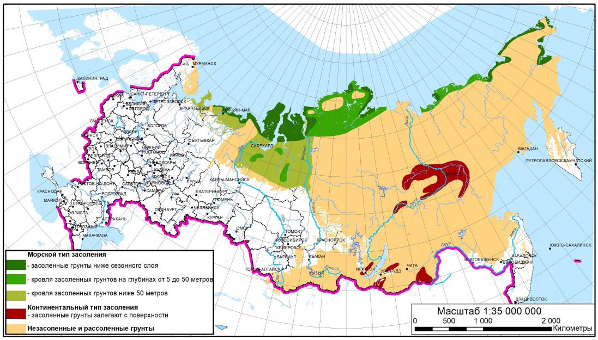
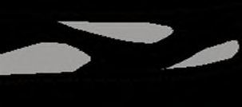
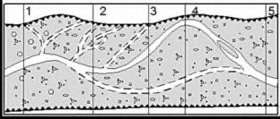
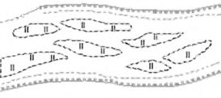
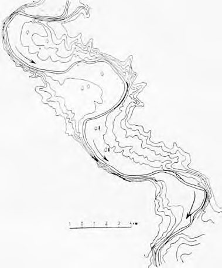

СП 493.1325800.2020 «Инженерные изыскания для строительства в районах распростра»
О документе: разработчики, утверждение, регистрация, ключевые слова
СВОД ПРАВИЛ
СП 493.1325800.2020
Общие требования
Издание официальное
1 ИСПОЛНИТЕЛЬ -Общество с ограниченной ответственностью «Институт геотехники и инженерных изысканий в строительстве» (ООО «ИГИИС»)
2 ВНЕСЕН Техническим комитетом по стандартизации ТК 465 «Строительство»
3 ПОДГОТОВЛЕН к утверждению Департаментом градостроительной деятельности и архитектуры Министерства строительства и жилищнокоммунального хозяйства Российской Федерации
4 УТВЕРЖДЕН Приказом Министерства строительства и жилищнокоммунального хозяйства Российской Федерации 31 декабря 2020 г. № 929/пр и введен в действие с 1 июля 2021 г.
5 ЗАРЕГИСТРИРОВАН Федеральным агентством по техническому регулированию и метрологии (Росстандарт)
В случае пересмотра (замены) или отмены настоящего свода правил соответствующее уведомление будет опубликовано в установленном порядке. Соответствующая информация, уведомление и тексты размещаются также в информационной системе общего пользования - на официальном сайте разработчика (Минстрой России) в сети Интернет
© Минстрой России, 2020
Настоящий нормативный документ не может быть полностью или частично воспроизведен, тиражирован и распространен в качестве официального издания на территории Российской Федерации без разрешения Минстроя России
Дата введения \_\_\_\_\_\_\_\_\_\_\_\_\_
УДК 624.131
Ключевые слова: инженерно-геологические изыскания для строительства, геологическая среда, инженерно-геокриологические условия, категория сложности инженерно-геокриологических условий, геокриологический процесс, многолетнемерзлые грунты, свойства грунтов, нормативные и расчетные значения характеристик грунтов, инженерно-геологические элементы, прогноз изменений инженерно-геокриологических условий, локальный мониторинг, техногенные воздействия
ИСПОЛНИТЕЛЬ АО «НИЦ «Строительство»
Руководитель разработки
Заместитель генерального директора по развитию
\_\_\_\_\_\_\_\_\_\_\_\_\_\_\_
В.О. Марыгин
Соисполнитель ООО «ИГИИС»
Заместитель
руководителя
разработки
Заместитель
генерального
директора
по
нормативно-
методической работе
\_\_\_\_\_\_\_\_\_\_\_\_\_\_\_
Е.В. Леденева
Ответственный исполнитель
Заместитель начальника отдела по нормативно- методологическим исследованиям
\_\_\_\_\_\_\_\_\_\_\_\_\_\_\_
С.А. Гурова
Введение
6 ВВЕДЕН ВПЕРВЫЕ
Настоящий свод правил разработан в целях обеспечения соблюдения требований Федерального закона от 30 декабря 2009 г. № 384-ФЗ «Технический регламент о безопасности зданий и сооружений», с учетом требований федеральных законов от 27 декабря 2002 г. № 184-ФЗ «О техническом регулировании», от 29 декабря 2004 г. № 190-ФЗ «Градостроительный кодекс Российской Федерации».
Настоящий свод правил разработан в развитие положений СП 47.13330.2016 «СНиП 11-02-96 Инженерные изыскания для строительства. Основные положения».
Свод правил подготовлен авторским коллективом ООО «ИГИИС» (руководитель работы - канд. геол.-минерал. наук М.И. Богданов, заместители руководителя работы Г.Р. Болгова, Е.В. Леденева , ответственный исполнитель -С.А. Гурова , исполнители: канд. геол.-минерал. наук И.И. Шаманова , Ю.А. Волков , канд. геол.-минерал. наук О.П. Червинская , канд. геол.-минерал. наук М.С. Наумов , д -р физ.-мат. наук М.Л. Владов, И.Д. Колесников , Г.В. Мисник, М.Н. Цымбал, Д.А. Будаков, Г.В. Петрова; нормоконтроль - В.И. Евграфова, М.А. Аббасова ), при участии канд. техн. наук В.М. Католикова, А.А. Костюченко , В.В. Сыроквасовского.
1Область применения
Настоящий свод правил устанавливает общие требования к выполнению инженерных изысканий для строительства в районах распространения многолетнемерзлых грунтов для подготовки документов территориального планирования, документации по планировке территории и выбора площадок (трасс) строительства (обоснования инвестиций); архитектурно-строительного проектирования при подготовке проектной документации объектов капитального строительства; строительства, реконструкции и капитального ремонта зданий и сооружений.
Настоящий свод правил не распространяется на инженерные изыскания, выполняемые в пределах континентального шельфа.
2Нормативные ссылки
В настоящем cводе правил использованы нормативные ссылки на следующие документы:
ГОСТ 9.602-2016 Единая система защиты от коррозии и старения. Сооружения подземные. Общие требования к защите от коррозии
ГОСТ 17.5.3.06-85 Охрана природы. Земли. Требования к определению норм снятия плодородного слоя почвы при производстве земляных работ
ГОСТ 5180-2015 Грунты. Методы лабораторного определения физических характеристик
ГОСТ 5686-2020 Грунты. Методы полевых испытаний сваями
ГОСТ 12071-2014 Грунты. Отбор, упаковка, транспортирование и хранение образцов
ГОСТ 12248.7-2020 Грунты. Определение характеристик прочности и деформируемости мерзлых грунтов методом испытания шариковым штампом
ГОСТ 12248.8-2020 Грунты. Определение характеристик прочности мерзлых грунтов методом среза по поверхности смерзания
ГОСТ 12248.9-2020 Грунты. Определение характеристик прочности и деформируемости мерзлых грунтов методом одноосного сжатия
ГОСТ 12248.10-2020 Грунты. Определение характеристик деформируемости мерзлых грунтов методом компрессионного сжатия
Engineering surveys for construction in areas of permafrost distribution. Basic principles
ГОСТ 12248.11-2020 Грунты. Определение характеристик прочности оттаивающих грунтов методом среза
ГОСТ 19912-2012 Грунты. Методы полевых испытаний статическим и динамическим зондированием
ГОСТ 20276.3-2020 Грунты. Метод испытания горячим штампом мерзлых грунтов
ГОСТ 20522-2012 Грунты. Методы статистической обработки результатов испытаний
ГОСТ 21667-76 Картография. Термины и определения
ГОСТ 22268-76 Геодезия. Термины и определения
ГОСТ 23740-2016 Грунты. Методы определения содержания органических веществ
ГОСТ 24846-2019 Грунты. Методы измерения деформаций оснований зданий и сооружений
ГОСТ 24847-2017 Грунты. Методы определения глубины сезонного промерзания
ГОСТ 25100-2020 Грунты. Классификация
ГОСТ 25358-2012 Грунты. Метод полевого определения температуры
ГОСТ 26262-2014 Грунты. Методы полевого определения глубины сезонного оттаивания
ГОСТ 26263-84 Грунты. Метод лабораторного определения теплопроводности мерзлых грунтов
ГОСТ 27217-2012 Грунты. Метод полевого определения удельных касательных сил морозного пучения
ГОСТ 28622-2012 Грунты. Метод лабораторного определения степени пучинистости
ГОСТ 31861-2012 Вода. Общие требования к отбору проб
ГОСТ Р 56726-2015 Грунты. Метод лабораторного определения удельной касательной силы морозного пучения
ГОСТ Р 58961-2020 Грунты. Метод полевых испытаний мерзлых грунтов термостатическим зондированием
ГОСТ Р 58888-2020 Грунты. Метод полевых испытаний температурнокаротажным статическим зондированием
СП 14.13330.2018 «СНиП II-7-81* Строительство в сейсмических районах» (с изменением № 1)
СП 22.13330.2016 «СНиП 2.02.01-83* Основания зданий и сооружений» (с изменениями № 1, № 2, № 3)
СП 23.13330.2018 «СНиП 2.02.02-85. Основания гидротехнических сооружений» (с изменением № 1)
СП 24.13330.2011 «СНиП 2.02.03-85 Свайные фундаменты» (с изменениями № 1, № 2, № 3)
СП 25.13330.2012 «СНиП 2.02.04-88 Основания и фундаменты на вечномерзлых грунтах» (с изменениями № 1, № 2, № 3, № 4)
СП 28.13330.2017 «СНиП 2.03.11-85 Защита строительных конструкций от коррозии» (с изменениями № 1, № 2)
СП 47.13330.2016 «СНиП 11-02-96 Инженерные изыскания для строительства. Основные положения» (с изменением № 1)
СП 115.13330.2016 «СНиП 22-01-95 Геофизика опасных природных воздействий»
СП 116.13330.2012 «СНиП 22-02-2003 Инженерная защита территорий, зданий и сооружений от опасных геологических процессов. Основные положения»
СП 305.1325800.2017 Здания и сооружения. Правила проведения геотехнического мониторинга при строительстве
СП 317.1325800.2017 Инженерно-геодезические изыскания для строительства. Общие правила производства работ
СП 341.1325800.2017 Подземные инженерные коммуникации. Прокладка горизонтальным направленным бурением
СП 420.1325800.2018 Инженерные изыскания для строительства в районах развития оползневых процессов. Общие требования
СП 428.1325800.2018 Инженерные изыскания для строительства в лавиноопасных районах. Общие требования
СП 438.1325800.2019 Инженерные изыскания при планировке территорий. Общие требования
СП 446.1325800.2019 Инженерно-геологические изыскания для строительства. Общие правила производства работ
СП 479.1325800.2019 Инженерные изыскания для строительства в районах развития селевых процессов. Общие требования
СП 482.1325800.2020 Инженерно-гидрометеорологические изыскания для строительства. Общие правила производства работ
Примечание - При пользовании настоящим сводом правил целесообразно проверить действие ссылочных документов в информационной системе общего пользования - на официальном сайте федерального органа исполнительной власти в сфере стандартизации в сети Интернет или по ежегодному информационному указателю «Национальные стандарты», который опубликован по состоянию на 1 января текущего года, и по выпускам ежемесячного информационного указателя «Национальные стандарты» за текущий год. Если заменен ссылочный документ, на который дана недатированная ссылка, то рекомендуется использовать действующую версию этого документа с учетом всех внесенных в данную версию изменений. Если заменен ссылочный документ, на который дана датированная ссылка, то следует использовать версию этого документа с указанным выше годом утверждения (принятия). Если после утверждения настоящего свода правил в ссылочный документ, на который дана датированная ссылка, внесено изменение, затрагивающее положение, на которое дана ссылка, то это положение рекомендуется применять без учета данного изменения. Если ссылочный документ отменен без замены, то положение, в котором дана ссылка на него, рекомендуется применять в части, не затрагивающей эту ссылку. Сведения о действии сводов правил целесообразно проверить в Федеральном информационном фонде стандартов.
3Термины, определения и сокращения
В настоящем своде правил применены термины и определения по ГОСТ 20522, ГОСТ 21667, ГОСТ 22268, СП 47.13330, СП 317.1325800, СП 446.1325800, СП 482.1325800, а также следующие термины с соответствующими определениями:
- 3.1.1 бугры пучения
- Выпуклые формы криогенного рельефа с ледяным или ледогрунтовым ядром, образующиеся в областях распространения многолетнемерзлых грунтов и в сезонномерзлых грунтах в результате неравномерного льдообразования.
- 3.1.2 геокриологическая карта
- Отображение на топографической карте (плане) геокриологических условий территории или их отдельных компонентов.
- 3.1.3 геокриологические условия
- Совокупность геокриологических характеристик грунтового массива: распространение и условия залегания многолетнемерзлых грунтов, их состав, состояние, криогенное строение, температура, физико-механические и теплофизические свойства, а также геокриологические процессы и явления.
- 3.1.4 глубина нулевых годовых колебаний температуры грунтов
- Максимальная глубина инженерно-геокриологического разреза, на которой температура грунта не изменяется в течение одного года (при заданной точности измерений ± 0,1 °С).
- 3.1.5 грунт многолетнемерзлый
- Грунт, постоянно имеющий отрицательную или нулевую температуру в течение трех и более лет.
- 3.1.6 грунт охлажденный
- Засоленный грунт, отрицательная температура которого выше температуры начала его замерзания.
- 3.1.7 грунт пластичномерзлый
- Дисперсный грунт, сцементированный льдом, обладающий вязко-пластичными свойствами и сжимаемостью под внешней нагрузкой (коэффициент сжимаемости мерзлого грунта mf > 0,01 МПа -1 ).
- 3.1.8 грунт твердомерзлый
- Дисперсный грунт, прочно сцементированный льдом, характеризуемый относительно хрупким разрушением и практически несжимаемый под внешней нагрузкой (коэффициент сжимаемости мерзлого грунта mf ≤ 0,01 МПа -1 ).
- 3.1.9 деформационная марка
- Геодезический знак, размещенный на наблюдаемом объекте (на земной поверхности, фундаменте, колонне, стене и т. п.), меняющий свое пространственное положение вследствие деформаций и смещений (осадка, просадка, подъем, сдвиг, крен) наблюдаемого объекта.
- 3.1.10 инженерно-геокриологическая съемка
- Комплекс работ и исследований, выполняемых для изучения инженерно-геокриологических условий территории (в заданном масштабе и на заданную глубину), результатом которых является создание геокриологической карты (карт), в том числе карты (карт) инженерно-геокриологического районирования и (или) инженерногеокриологических условий.
- 3.1.11 инженерно-геокриологические условия
- Совокупность характеристик (признаков) компонентов геологической среды в районах распространения многолетнемерзлых грунтов, оказывающих влияние на принятие проектных решений, строительство и эксплуатацию зданий и сооружений: геоморфологические, геологические, геокриологические и гидрогеологические условия, а также техногенные воздействия на геологическую среду.
- 3.1.12 карта инженерно-геокриологических условий
- Отображение на топографической карте (плане) компонентов инженерно-геокриологических условий территории (с указанием их характеристик), оказывающих влияние на принятие проектных решений, строительство и эксплуатацию зданий и сооружений.
- 3.1.13 карта инженерно-геокриологического районирования
- Отображение на топографической карте (плане) выделенных таксономических единиц, однородных по одному или нескольким признакам инженерногеокриологических условий.
- 3.1.14 категория сложности инженерно-геокриологических условий
- Классификационная оценка геологической среды по совокупности факторов (включая геокриологические), определяющих сложность изучения исследуемой территории и выполнения различного состава и объемов инженерногеологических работ, необходимых для градостроительной деятельности.
- 3.1.15 криогенная текстура
- Совокупность признаков сложения мерзлого грунта, обусловленная ориентацией, относительным расположением и распределением различных по форме и размерам ледяных включений и льдацемента.
- 3.1.16 геокриологические процессы
- Экзогенные геологические процессы, обусловленные сезонным или многолетним промерзанием и оттаиванием грунтов и подземных вод, приводящие к изменениям в геологической среде.
- 3.1.17 криолитозона
- Часть земной коры, в пределах которой распространены многолетнемерзлые грунты.
- 3.1.18 криопэги
- Природные высокоминерализованные подземные воды с отрицательными температурами.
- 3.1.19 курумы
- Скопление крупнообломочного скального грунта, перемещающегося вниз по склону с крутизной менее угла естественного откоса под действием геокриологических процессов и силы тяжести.
- 3.1.20мерзлый грунт
- Грунт, имеющий отрицательную или нулевую температуру, содержащий видимые ледяные включения и/или лед-цемент, за счет которых образованы криогенные структурные связи.Источник: ГОСТ 25100-2020, пункт 3.10
- 3.1.213.1.22 морозное пучение грунтов
- Процесс, вызванный промерзанием грунта, миграцией влаги, образованием ледяных прослоев, деформацией скелета грунта, приводящий к увеличению объема грунта.
- 3.1.23 морозобойное растрескивание
- Процесс образования трещин в грунтовом массиве в результате действия напряжений, возникающих при его промораживании.
- 3.1.24 наледь
- Слоистый ледяной массив на поверхности земли, льда или инженерных сооружений, образующийся при замерзании изливающихся природных (подземных, озерных, речных) или техногенных вод.
- 3.1.25 наледная поляна
- Форма рельефа, выработанная наледями и представляющая собой овалообразные расширения в долинах рек и ручьев.
- 3.1.26опорный знак
- Знак, практически неподвижный в горизонтальной плоскости, относительно которого определяются сдвиги и крены фундаментов зданий или сооружений.Источник: ГОСТ 24846-2019, пункт 3.12
- 3.1.27 опорный репер
- Геодезический пункт, относительно которого определяются смещения деформационных марок по высоте.
- 3.1.28 охлажденный грунт
- Засоленный грунт, отрицательная температура которого выше температуры начала его замерзания.
- 3.1.29 пластовые льды
- Скопления льда (разного генезиса) в массиве многолетнемерзлых грунтов преимущественно пластовой и линзовидной формы.
- 3.1.30 повторно-жильные льды
- Вид подземного льда, имеющего в поперечном разрезе форму клина и формирующегося в результате многократного морозобойного растрескивания грунтов и замерзания воды, заполняющей трещины.
- 3.1.31 прогноз изменения инженерно-геокриологических условий (геокриологический прогноз)
- Качественная и (или) количественная оценка изменения характеристик компонентов геологической среды (состояния, температуры, распространения, свойств сезонно- и многолетнемерзлых грунтов, динамики геокриологических процессов) под влиянием природных и техногенных факторов на период строительства и эксплуатации зданий и сооружений .
- 3.1.32 сезонномерзлый слой
- Поверхностный слой грунта, промерзающий в период года с отрицательными среднесуточными температурами, оттаивающий в период года с положительными среднесуточными температурами и подстилающийся немерзлыми грунтами.
- 3.1.33 сезонноталый слой
- Поверхностный слой грунта, ежегодно оттаивающий в период года с положительными среднесуточными температурами, промерзающий в период года с отрицательными среднесуточными температурами и подстилающийся многолетнемерзлыми грунтами.
- 3.1.34 солифлюкция
- Процесс вязко-пластичного перемещения переувлажненного дисперсного грунта на пологих склонах в пределах сезонноталого и сезонномерзлого слоев в период года с положительными среднесуточными температурами.
- 3.1.35сыпучемерзлый грунт
- Крупнообломочный или песчаный грунт, имеющий отрицательную температуру, но не сцементированный льдом вследствие малой влажности.Источник: ГОСТ 25100-2020, пункт 3.29
- 3.1.36 талик
- Толща талых грунтов, залегающая среди многолетнемерзлых грунтов и существующая непрерывно более года. Примечание - По взаимоотношению с толщами многолетнемерзлых грунтов различают сквозные и несквозные талики (надмерзлотные, межмерзлотные и подмерзлотные).
- 3.1.37 термоабразия
- Процесс гидротермомеханического разрушения берегов (морей, озер, рек, водохранилищ), сложенных многолетнемерзлыми грунтами или льдом.
- 3.1.38 термокарст
- Процесс оттаивания мерзлых грунтов и подземных льдов, сопровождающийся их осадкой и образованием просадочных, провальных форм рельефа.
- 3.1.39 термоэрозия
- Процесс разрушения многолетнемерзлых дисперсных грунтов совместным тепловым и механическим воздействием постоянных и временных водных потоков с образованием промоин, врезов, оврагов, эрозионных ниш. В настоящем своде правил применены следующие сокращения: ВЛС - воздушное лазерное сканирование; ГТМ - геотехнический мониторинг; ГССН - геодезическая сеть специального назначения; ДЗЗ - дистанционное зондирование земли; ИГЭ - инженерно-геологический элемент; ММГ - многолетнемерзлые грунты; ОГС - опорная геодезическая сеть; РГЭ - расчетный грунтовый элемент; СМС - сезонномерзлый слой; СМР - сейсмическое микрорайонирование; СТС - сезонноталый слой; СОУ - сезоннодействующие охлаждающие устройства (термосифоны, термостабилизаторы, термосваи) УПВ - уровень подземных вод; ЦАФС - цифровая аэрофотосъемка.
4Общие требования
- принцип I: грунты основания используются в мерзлом или промораживаемом состоянии, сохраняемом в процессе строительства и в течение периода эксплуатации сооружения;
- принцип II: грунты основания используются в оттаянном (талом) или оттаивающем состоянии (с их предварительным оттаиванием на расчетную глубину до начала возведения сооружения или с допущением их оттаивания в период эксплуатации сооружения).
4.2Общие требования к выполнению инженерно-геодезических изысканий
- короткая продолжительность полевого сезона;
- возможность выполнения полевых работ на отдельных территориях только в неблагоприятный период года, вследствие чего топографическая съемка производится при недопустимой высоте снежного покрова, и созданные инженерно-топографические планы требуют обновления в бесснежный период (как наземными, так и методами ДЗЗ).
- недостаточная плотность пунктов государственных геодезической и нивелирной сетей для выполнения топографо-геодезических работ с требуемой точностью;
- изменение планово-высотного положения исходных геодезических и нивелирных пунктов вследствие морозного пучения, термокарста, подтопления территорий, опускания земной поверхности в районах разработки крупных нефтяных и газовых месторождений и др.;
- сезонное изменение высот точек земной поверхности при промерзанииоттаивании грунтов;
- сложность устройства и обеспечения неизменности планово-высотного положения грунтовых геодезических знаков, вновь закладываемых в ММГ на период инженерных изысканий.
- сведения и данные в соответствии с СП 317.1325800.2017 (пункт 4.5);
- методологические и технологические решения, компенсирующие влияние неблагоприятных факторов (4.2.2);
- требования к контрольным измерениям между исходными геодезическими и нивелирными пунктами (методика и объемы работ, схема, точность результатов, критерии неизменности планового и/или высотного положения исходных пунктов);
- требования к составу и содержанию технического отчета по инженерногеодезическим изысканиям в соответствии с СП 317.1325800.2017 (пункт 4.20).
- проверки актуальности имеющихся на участок работ картографических и топографических материалов и геодезических данных;
- обследования сложных участков (мест пересечений проектируемых линейных объектов с крупными водными препятствиями, искусственными сооружениями и на участках проявления опасных геологических процессов) и стесненных участков прохождения проектируемых трасс;
- оценки технического состояния имеющихся геодезических пунктов и их пригодности для использования на текущем этапе изысканий по результатам контрольных измерений;
- выбора конструкции и мест установки геодезических знаков с учетом подъезда к ним техники с минимальным воздействием на природную среду.
- на возвышенных формах рельефа;
- в удалении от мест возможных мощных отложений снега;
- на участках с моховой растительностью.
К неблагоприятным участкам для закладки пунктов ОГС в этих районах относятся:
- открытые южные склоны с большей мощностью СТС;
- подветренные склоны, подверженные скоплению снежного покрова;
- понижения (талики, мари, полосы стока вод, замкнутые впадины);
- участки старых гарей и другие территории с нарушенным естественным покровом земной поверхности;
- места вблизи морозобойных трещин в полигональной тундре;
- бугры пучения, участки развития термокарстовых процессов, наледей и солифлюкции;
- участки, затопляемые весенними паводками.
Для предотвращения нагрева реперной штанги солнечными лучами не рекомендуется возвышение марки репера над поверхностью земли более чем на 0,10 м.
- покрытие реперной трубы эпоксидной смолой с последующим оборачиванием трубы рубероидом, полиэтиленом, стеклотканью и др.;
- заполнение межтрубного пространства гравием или дресвой;
- установку в верхней части реперной трубы уплотнительных резиновых сальников или промасленных тканых фартуков;
- установку на обсадную трубу колпака для предотвращения попадания воды в межтрубное пространство и нагрева реперной трубы солнечными лучами.
4.3Общие требования к выполнению инженерно-геологических изысканий
- получение достоверных данных об инженерно-геокриологических и техногенных условиях района (площадки, участка, трассы) проектируемого строительства, необходимых и достаточных для осуществления градостроительной деятельности и разработки проектных решений;
- получение достоверных данных для разработки мероприятий инженерной защиты объекта капитального строительства.
Для обеспечения разработки оптимальных технических решений использования ММГ в качестве оснований и прогноза изменений инженерногеокриологических условий задание дополнительно должно содержать (при наличии принятых проектных решений в зависимости от этапа градостроительной деятельности) сведения о:
- периоде эксплуатации зданий и сооружений.
- принципах использования грунтов в качестве оснований;
- тепловых нагрузках зданий и сооружений на геологическую среду;
- перечень характеристик многолетнемерзлых, сезонноталых и сезонномерзлых грунтов, необходимых для проектирования объекта капитального строительства (4.3.12);
- прогнозируемой глубине теплового и механического взаимодействия проектируемых сооружений с грунтами оснований.
- требования о выдаче промежуточных (предварительных) отчетных материалов по результатам инженерно-геологических изысканий в районах распространения ММГ в случае необходимости получения оперативной информации о распространении геокриологических процессов.
Дополнительно программа должна содержать сведения:
- о категории сложности инженерно-геокриологических условий в соответствии с приложением А;
- о составе и содержании предварительных отчетных материалов о результатах инженерно-геологических изысканий в районе распространения ММГ, если их выпуск предусмотрен заданием.
В программе необходимо предусматривать мероприятия, допускающие минимальные нарушения сложившихся инженерно-геокриологических условий при проведении видов работ в составе инженерно-геологических изысканий.
Программа может уточняться в процессе выполнения работ, в том числе после рекогносцировочного обследования территории.
4.3.5.1 Дополнительно к СП 446.132580.2019 (пункт 5.3) сбору, изучению и систематизации подлежат:
- результаты геокриологических исследований и локального геокриологического мониторинга компонентов геологической среды (если они проводились);
- геокриологические карты, имеющиеся на данную территорию;
- научно-исследовательские работы и научно-техническая литература, в которых содержатся данные о геокриологических условиях территории и (или) приводятся результаты разработок по методике и технологии выполнения геокриологических исследований.
В состав материалов, подлежащих сбору и обработке, следует включать сведения о (об): характере распространения ММГ (СП 115.13330); их составе, свойствах, льдистости, засоленности (приложение Б); глубинах сезонного оттаивания и сезонного промерзания; средней годовой температуре грунтов; залегании повторно-жильных и пластовых льдов; составе и свойствах грунтов СМС и СТС; геокриологических процессах и явлениях; о подземных водах (надмерзлотных, межмерзлотных, подмерзлотных); изменениях геокриологических условий под влиянием природных и техногенных факторов; опыте строительства и эксплуатации зданий и сооружений на данной территории или в схожих инженерно-геокриологических условиях (при наличии).
4.3.5.2 При сборе и обработке материалов о геокриологических процессах и явлениях следует особое внимание уделять установлению закономерностей их формирования в зависимости от процессоформирующих факторов (климатических особенностей, геокриологических условий, рельефа, состава и температуры грунтов и др.), активности процессов в естественных и нарушенных условиях, негативном воздействии процессов на здания и сооружения.
4.3.5.3 По результатам сбора, обработки и анализа материалов изысканий прошлых лет и других данных в программе изысканий и техническом отчете должна приводиться характеристика степени изученности инженерногеокриологических условий исследуемой территории.
Оценка возможности использования этих материалов при выполнении инженерно-геологических изысканий выполняется с учетом срока их давности в соответствии с СП 47.13330.2016 (пункт 6.1.7).
На основании собранных материалов дается оценка инженерногеокриологических условий исследуемой территории и устанавливается категория сложности этих условий, в соответствии с чем в программе изысканий по объекту строительства устанавливаются состав, объемы, методика и технология выполнения работ в составе инженерно-геологических изысканий.
Категорию сложности инженерно-геокриологических условий следует устанавливать по совокупности отдельных факторов в соответствии с приложением А.
Материалы изысканий прошлых лет используются для отслеживания динамики изменения геокриологических условий под влиянием техногенных воздействий и изменения климата.
4.3.6.1 Дешифрирование и анализ материалов и данных ДЗЗ предшествует проведению других видов инженерно-геологических работ и выполняется для:
- установления характера распространения ММГ, степени расчленения их сплошности таликами различных размеров;
- выявления районов (участков) развития геокриологических процессов и явлений;
- наблюдения за динамикой изменения инженерно-геокриологических условий;
- установления последствий техногенных воздействий на геокриологические условия.
4.3.6.2 Дешифрирование и анализ материалов и данных ДЗЗ следует осуществлять при сборе и обработке материалов изысканий и исследований прошлых лет (предварительное дешифрирование), при проведении маршрутных наземных наблюдений в процессе рекогносцировочного обследования (уточнение результатов предварительного дешифрирования) и/или инженерногеокриологической съемки, при камеральной обработке материалов изысканий и составлении технического отчета (окончательное дешифрирование) с использованием результатов других видов работ, входящих в состав инженерногеологических изысканий.
4.3.7.1 В процессе рекогносцировочного обследования территории следует осуществлять:
- описание геоботанических индикаторов геокриологических и гидрогеологических условий;
- выявление прямых и косвенных зависимостей между компонентами ландшафтов (рельеф, растительность, состав поверхностных отложений и др.) и инженерно-геокриологическими условиями (распространение ММГ, их состав, льдистость, температура, глубины сезонного оттаивания и промерзания грунтов, геокриологические процессы, динамика их развития);
- описание внешних проявлений геокриологических процессов согласно 4.3.13.1-4.3.13.8;
- описание всех видов техногенных нарушений естественных ландшафтов и их влияния на геокриологические условия (глубины сезонного оттаивания и промерзания, активизация геокриологических процессов, последствия их активизации и др.);
- выявление зданий, сооружений и инженерных коммуникаций с признаками деформаций из-за оттаивания грунтов оснований, морозного пучения и растрескивания грунтов, установление причин деформаций, активизации геокриологических процессов и их влияния на экологическую ситуацию территории;
- опрос местного населения и служб эксплуатации зданий и сооружений о проявлениях опасных геокриологических процессов, об имевших место деформациях зданий и сооружений;
- выбор мест расположения инженерно-геологических выработок и точек испытания грунтов с определением путей подъезда к ним с минимальным воздействием техники на природную среду.
4.3.7.2 В составе рекогносцировочного обследования для подготовки документации по планировке территории, по выбору площадок (трасс) строительства (обоснования инвестиций) и для подготовки проектной документации на первом этапе изысканий следует выполнять маршрутные наблюдения с использованием топографических планов и карт, материалов ДЗЗ, отображающих результаты сбора и обобщения материалов изысканий прошлых лет (карты геокриологические, ландшафтные и др.).
Маршрутные наблюдения рекомендуется выполнять в благоприятный для исследуемой территории период года при высоте снежного покрова не более 0,1 м.
4.3.7.3 Маршрутные наблюдения следует осуществлять: по направлениям, ориентированным перпендикулярно (по возможности) к границам основных геоморфологических элементов и ландшафтных комплексов с разнородными геокриологическими условиями, контурам геологических структур и тел, простиранию пород, тектоническим нарушениям; участкам с проявлениями геокриологических и других геологических и инженерно-геологических процессов; вдоль элементов эрозионной и гидрографической сети; по намечаемым положениям трасс линейных сооружений;
Направления маршрутов должны определяться с учетом результатов дешифрирования и анализа материалов и данных ДЗЗ, а также аэровизуальных наблюдений.
Количество маршрутов, состав и объемы сопутствующих работ следует устанавливать в зависимости от детальности изысканий, их назначения и сложности инженерно-геокриологических условий исследуемой территории.
4.3.7.4 При маршрутных наблюдениях необходимо выполнять описание естественных и искусственных обнажений грунтов, их льдистости, особенностей криогенного строения, обнажений подземных льдов (пластовых, повторножильных и др.), водопроявлений, геоморфологических условий, типов ландшафтов с выявлением характерного набора индикационных признаков, отражающих характер распространения ММГ, наличия и активности геокриологических процессов, осуществлять отбор из обнажений образцов мерзлых грунтов (и льдов) для лабораторных исследований их состава и свойств, проб воды на химический анализ, осуществлять сбор опросных сведений и предварительное планирование мест размещения ключевых участков (при изысканиях для подготовки документации по планировке территории) для комплексных исследований, а также уточнять результаты предварительного дешифрирования и анализа материалов и данных ДЗЗ.
При маршрутных наблюдениях выделяют участки наиболее неблагоприятные для освоения территории -с активным проявлением геокриологических процессов, наличием сильнольдистых грунтов, повторножильных и пластовых льдов.
4.3.7.5 При маршрутных наблюдениях на застроенной (освоенной) территории следует дополнительно выявлять развитие заболачивания, подтопления, деформаций поверхности земли из-за активизации геокриологических процессов (термокарста, морозного пучения, морозобойного растрескивания) и другие факторы, обуславливающие изменение инженерногеокриологических условий или являющиеся их следствием.
4.3.7.6 В ходе маршрутных наблюдений ведется полевой журнал, в который заносятся результаты наблюдений (с привязкой и описанием точек наблюдений, обнажений, геокриологических процессов и др.).
4.3.7.7 По результатам маршрутных наблюдений определяют ключевые участки для проведения более детальных исследований (при изысканиях для подготовки документации по планировке территории): с проходкой инженерногеологических выработок, выполнением инженерно-геофизических, полевых и лабораторных исследований, определением классификационных характеристик грунтов (состава, состояния и свойств многолетнемерзлых, сезонноталых и сезонномерзлых грунтов), гидрогеологических параметров водоносных горизонтов и т. п., а также необходимость выполнения локального мониторинга компонентов геологической среды.
4.3.7.8 Результаты рекогносцировочного обследования используются для:
- уточнения на местности результатов дешифрирования и анализа материалов и данных ДЗЗ;
- выявления участков развития опасных геокриологических и других геологических и инженерно-геологических процессов;
- оценки изменений компонентов природной среды и техногенных воздействий на нее, произошедших после проведения предыдущих инженерногеологических изысканий на исследуемом участке (если они ранее выполнялись);
- оценки возможности использования материалов изысканий прошлых лет с учетом выявленных изменений компонентов природной среды и техногенных воздействий на нее;
- уточнения категории сложности инженерно-геокриологических условий территории и соответствующих этой категории объемов изысканий;
- оценки условий местности при выполнении полевых инженерногеологических изысканий.
- установления инженерно-геокриологического разреза и условий залегания грунтов и подземных вод;
- определения глубин залегания ММГ, их сезонного оттаивания и промерзания;
- изучения температурного режима, мощности мерзлых грунтов и характера их залегания, состава и криогенного строения, выявления и оконтуривания повторно-жильных и пластовых льдов, криопэгов, исследования геокриологических процессов и явлений;
- отбора образцов грунтов с последующим определением их состава, состояния, криогенного строения и свойств, а также проб подземных вод для их химического анализа;
- проведения полевых исследований свойств мерзлых грунтов, определения гидрогеологических параметров водоносных горизонтов и зоны аэрации и выполнения геофизических исследований;
- выявления и оконтуривания участков распространения таликовых зон, специфических грунтов и зон проявления геокриологических процессов.
4.3.8.1 Выбор вида, глубины и назначения инженерно-геологических выработок, способов и разновидности бурения скважин при инженерногеологических изысканиях следует выполнять с учетом особенностей геокриологических условий - состава, льдистости, температуры и мощности ММГ, намечаемой глубины изучения геологического разреза.
Особенности мерзлых грунтов ограничивают возможность применения некоторых разновидностей способов бурения. Допустимыми являются только те способы, которые обеспечивают получение образцов грунта с ненарушенным криогенным строением.
4.3.8.2 Разновидности способов бурения инженерно-геологических скважин и условия их применения в многолетнемерзлых грунтах приведены в приложении В.
При изучении разреза дисперсных мерзлых грунтов до глубины 10-30 м рекомендуется колонковый способ бурения «всухую» со сплошным отбором образцов ненарушенной структуры, позволяющий при описании фиксировать расположение и толщину ледяных включений, определять их суммарную толщину, отбирать образцы мерзлых грунтов для лабораторных исследований.
Для отбора образцов мерзлого грунта бурение скважин следует вести укороченными рейсами (0,2-0,5 м) с пониженным числом оборотов бурового инструмента (20-60 об/мин); допускается вести бурение с продувкой воздухом, охлажденным до отрицательной температуры.
В труднодоступных районах допускается применять переносные механические установки для бурения зондировочных и инженерногеологических скважин в мерзлых грунтах глубиной не более 10 м.
Применение шнекового бурения (за исключением бурения полым проходным шнеком) для установления геокриологического разреза не допускается из-за низкой точности фиксации контактов между слоями грунтов разного состава и льдистости, невозможности определения криогенного строения грунтов и отбора образцов ненарушенного строения.
Шурфы следует проходить: в случае невозможности отбора образцов мерзлых грунтов ненарушенного сложения при бурении скважин; для получения сведений об условиях залегания и трещиноватости скальных грунтов; при выполнении полевых испытаний мерзлых грунтов; при обследовании оснований фундаментов зданий и сооружений.
4.3.8.3 Инженерно-геологические скважины, предназначенные для измерения температуры мерзлых грунтов, должны быть оборудованы в соответствии с требованиями ГОСТ 25358. Глубина таких выработок должна обеспечивать установление разреза мерзлых грунтов (состав, криогенное строение, в том числе криогенную текстуру и льдистость), их температуры до прогнозируемой глубины теплового и механического взаимодействия проектируемых сооружений с мерзлыми грунтами оснований, но не менее 10 м.
4.3.8.4 Отбор образцов грунтов из инженерно-геологических выработок и естественных обнажений, а также их упаковку, транспортирование и хранение следует проводить в соответствии с ГОСТ 12071.
4.3.8.5 В программе следует обосновывать схему опробования грунтов, обеспечивающую изучение инженерно-геокриологического разреза (СП 446.1325800.2019, пункт 5.6.4), которая корректируется в процессе проходки инженерно-геологических скважин. Схема опробования должна содержать количество опробуемых скважин и интервал отбора образцов грунта. Для однородных по составу и криогенному строению слоев пробы грунта отбираются из кровли, середины и подошвы слоя (с интервалом не более 2 м). В слоях однородных по составу, но с различным криогенным строением интервал отбора образцов следует уменьшать для детализации инженерно-геокриологического разреза. Образцы ненарушенного сложения (монолиты) отбираются для определения показателей физических, механических и теплофизических свойств ММГ. Образцы отбираются из каждой разновидности грунтов.
4.3.8.6 В процессе бурения инженерно-геологических скважин выполняют гидрогеологические наблюдения и отбор проб воды в соответствии с СП 446.1325800.2019 (пункт 5.9.2).
Отбор, консервацию, хранение и транспортирование проб воды для лабораторных исследований следует осуществлять в соответствии с ГОСТ 31861.
Из каждого водоносного горизонта в таликах, в СМС, а также из прослоев с криопэгами, в предполагаемой зоне взаимодействия проектируемых сооружений с основаниями следует единовременно отбирать не менее трех проб воды для оценки их химического состава.
Отбор проб криопэгов в слое годовых амплитуд и, особенно, в СТС и СМС рекомендуется проводить не менее двух раз в год, в холодный (с отрицательными среднесуточными температурами воздуха) и тёплый (с положительными среднесуточными температурами воздуха) периоды.
Количество проб воды следует увеличивать при значительной изменчивости показателей химического состава подземных вод или подтоплении участков проектируемых зданий и сооружений промышленными стоками и иными источниками загрязнения.
4.3.8.7 Инженерно-геологические выработки после окончания работ должны быть ликвидированы: шурфы, канавы, траншеи, расчистки, закопушки -обратной засыпкой грунтов с трамбованием; скважины (кроме предназначенных для локального геокриологического мониторинга компонентов геологической среды) - тампонажем выбуренными грунтами , глиной или цементно-песчаным раствором с целью исключения загрязнения природной среды и активизации геокриологических и других геологических и инженерно-геологических процессов.
- определения глубины залегания кровли и подошвы ММГ;
- обнаружения и оконтуривания таликов среди мерзлых грунтов и мерзлых - среди талых грунтов;
- выявления зон повышенной трещиноватости и льдистости;
- определения в таликах глубин залегания подземных вод и гидрогеологических параметров грунтов, слагающих водоносные талики;
- проведения мониторинга геокриологических процессов и их динамики;
- СМР территории (при необходимости, с учетом сезонных отличий в свойствах грунтов).
Выбор методов инженерно-геофизических исследований (основных и вспомогательных) и их комплексирование, определение объемов геофизических работ (количества и размещения геофизических профилей и точек) следует осуществлять в зависимости от характера решаемых задач с учетом сложности инженерно-геокриологических условий в соответствии с приложением Г.
В районах распространения ММГ должны исследоваться подземные воды СТС и таликов, надмерзлотные, межмерзлотные и подмерзлотные воды для оценки их влияния на активизацию геокриологических процессов (термокарста, пучения), формирование техногенного подтопления, перенос загрязняющих веществ в поверхностные водотоки, а также для оценки их агрессивного воздействия на фундаменты и подземные коммуникации.
Методы определения гидрогеологических параметров грунтов, слагающих талики, следует устанавливать, исходя из условий их применимости, характера и уровня ответственности проектируемых в контурах таликов зданий и сооружений, сложности гидрогеологических условий в соответствии с СП 446.1325800.2019 (пункт 5.9).
- оценки пространственной изменчивости свойств мерзлых грунтов и расчленения инженерно-геологического разреза;
- определения физических, деформационных и прочностных свойств многолетнемерзлых, сезонноталых и сезонномерзлых грунтов в условиях естественного залегания;
- определения температуры грунтов, глубин сезонного оттаивания и промерзания;
- оценки возможности погружения свай в мерзлые грунты и несущей способности свай.
4.3.11.1 Методы полевых испытаний (исследований) свойств многолетнемерзлых, сезонноталых и сезонномерзлых грунтов в зависимости от задач исследований и разновидностей изучаемых грунтов приведены в приложении Д. Выбор методов осуществляется с учетом степени изученности и сложности инженерно-геокриологических условий, вида градостроительной деятельности, уровня ответственности зданий и сооружений [1] и принципов использования грунтов в качестве оснований (4.1.2).
4.3.11.2 Испытание «горячим» штампом (при II принципе использования грунтов в качестве оснований) выполняют для определения характеристик деформируемости мерзлого грунта при оттаивании: коэффициента оттаивания Ath ; коэффициента сжимаемости при оттаивании mth ; модуля деформации E , МПа.
4.3.11.3 Испытания многолетнемерзлых, сезонноталых и сезонномерзлых грунтов статическим зондированием (в том числе термостатическим зондированием, температурно-каротажным статическим зондированием) выполняют, если их состав и состояние позволяют выполнять непрерывное внедрение зонда.
При испытаниях статическим зондированием получают как прямые определения для расчета несущей способности сваи: удельное сопротивление грунта под наконечником (конусом) зонда gc ; общее сопротивление грунта на боковой поверхности (для механического зонда) Qs ; удельное сопротивление грунта на участке боковой поверхности (муфте трения) зонда f s (для электрического зонда), так и косвенные: нормативное значение предельно длительного эквивалентного сцепления сeg , кПа; компрессионный модуль деформации Ef , МПа.
4.3.11.4 Динамические испытания свойств грунтов выполняют в случаях, указанных в СП 446.1325800.2019 (подпункт 7.2.24.4).
4.3.11.5 Определение температуры грунтов выполняют на всех этапах инженерных изысканий до глубины нулевых годовых колебаний температуры грунтов, но не менее 10 м. Нормативное значение среднегодовой температуры многолетнемерзлого грунта Т 0 ,n допускается принимать равным температуре грунта на глубине 10 м от поверхности.
4.3.11.6 Определение глубин сезонного оттаивания и сезонного промерзания грунтов полевыми методами выполняют по требованию в задании.
4.3.11.7 При обосновании в программе изысканий могут применяться и другие (не указанные в приложении Д) полевые методы испытаний многолетнемерзлых, сезонноталых и сезонномерзлых грунтов.
4.3.11.8 Полевые испытания грунтов рекомендуется сочетать с лабораторными исследованиями для выявления взаимосвязи между одноименными (или другими) характеристиками, определяемыми различными методами, и установления более достоверных их значений.
(или) водных вытяжек из грунтов следует выполнять:
- для определения состава, физических, механических, химических свойств грунтов для выделения классов, типов, видов и разновидностей в соответствии с ГОСТ 25100;
- выявления степени однородности (выдержанности) состава и свойств грунтов по площади и глубине;
- выделения ИГЭ и (или) РГЭ;
- определения нормативных и расчетных характеристик слоев (ИГЭ, РГЭ);
- прогноза изменения состояния и свойств грунтов в процессе строительства и эксплуатации объектов.
- 4.3.12.1 В районах распространения ММГ помимо характеристик, предусмотренных СП 446.1325800.2019 (пункт 5.10), определяют лабораторными исследованиями или расчетами следующие характеристики мерзлых грунтов (приложение Е):
- а) физические характеристики:
- суммарная влажность мерзлого грунта Wtot ;
- влажность мерзлого грунта, расположенного между ледяными включениями, Wm ;
- суммарная льдистость мерзлого грунта I tot ;
- льдистость грунта за счет видимых ледяных включений i i ;
- степень заполнения объема пор мерзлого грунта льдом и незамерзшей водой Sr ;
- влажность мерзлого грунта за счет незамерзшей воды Ww ;
- степень засоленности Dsal ;
- концентрация порового раствора Cps ;
- относительное содержание органического вещества I r .;
- температура начала замерзания грунта T bf ;
- б) характеристики грунтов СТС и СМС:
- относительная деформация морозного пучения ε fh ;
- удельная касательная сила пучения Ƭfh ;
- в) теплофизические характеристики:
- коэффициент теплопроводности λ;
- удельная теплоемкость C .
- г) деформационные и прочностные характеристики грунтов при использовании их в качестве оснований по I принципу (4.1.2) (при указании в задании):
- коэффициент сжимаемости мерзлого грунта mf ;
- модуль деформации мерзлого грунта Ef ;
- сопротивление мерзлого грунта или грунтового раствора сдвигу по поверхности смерзания Raf и Rsh ;
- сопротивление сдвигу льда по поверхности смерзания с грунтом или грунтовым раствором Rshi ;
- эквивалентное сцепление сeg ;
- предел прочности на одноосное сжатие Rc. д) деформационные характеристики грунтов при использовании их в качестве оснований по I и II принципам (4.1.2):
- коэффициент оттаивания Ath , д. ед.;
- коэффициент сжимаемости при оттаивании мерзлого грунта mth .
- е) прочностные характеристики оттаивающих грунтов и их контактов (при указании в задании):
- сопротивление грунта срезу Ƭ;
- угол внутреннего трения φ;
- удельное сцепление c.
При необходимости определяют и другие характеристики мерзлых грунтов, характеризующие особенности их состояния или взаимодействия с фундаментами
- коэффициент вязкости η;
- относительная деформация морозного пучения;
- касательные силы морозного пучения грунтов.
4.3.12.2 Для получения характеристик прочности и деформируемости мерзлого грунта применяют следующие лабораторные методы:
- одноосного сжатия -определяет характеристики прочности и деформируемости мерзлого грунта: предел прочности на одноосное сжатие Rc , Roc , модуль линейной деформации E, коэффициент поперечного расширения ϑ коэффициент нелинейной деформации A , коэффициент вязкости η сильнольдистых грунтов по ГОСТ 12248.9;
- компрессионного сжатия мерзлого грунта - определяет характеристики деформируемости: коэффициент сжимаемости пластичномерзлых грунтов mf , коэффициенты оттаивания Ath и сжимаемости при оттаивании мерзлого грунта mth по ГОСТ 12248.10;
- одноплоскостного среза по поверхности смерзания -определяет характеристики прочности: сопротивление срезу (а также угол внутреннего трения и удельное сцепление) мерзлого грунта, грунтового раствора и льда по поверхности их смерзания с материалом фундамента или другим твердым материалом Raf , сопротивление срезу мерзлого грунта по поверхности смерзания с другим грунтом или грунтовым раствором Rsh , сопротивление срезу льда по поверхности смерзания с грунтом или грунтовым раствором Rshi по ГОСТ 12248.8;
- одноплоскостного среза оттаивающего грунта по поверхности мерзлого грунта - определяет прочностные характеристики: сопротивления грунта срезу Ƭ , угла внутреннего трения φ и удельного сцепления c по ГОСТ 12248.11;
- испытания мерзлых грунтов шариковым штампом -определяет предельно длительное значение эквивалентного сцепления сeg по ГОСТ 12248.7.
4.3.12.3 Выбор вида и состава лабораторных определений физических, механических и теплофизических характеристик многолетнемерзлых, сезонноталых и сезонномерзлых грунтов следует выполнять в соответствии с приложением Е с учетом разновидности мерзлого грунта, этапа градостроительной деятельности, видов проектируемых зданий и сооружений, принципов использования грунтов в качестве оснований (4.1.2), условий работы грунта при взаимодействии с ними, прогнозируемых изменений инженерногеокриологических условий территории (площадки, трассы) в результате ее освоения, а также в соответствии с указанными в задание требованиями.
4.3.12.4 При соответствующем обосновании в программе изысканий выполняют виды исследований, которые не указаны в приложении Е, но могут применяться при инженерно-геологических изысканиях для оценки и прогнозирования изменения грунтов в конкретных природных и техногенных условиях (методы определения механических свойств грунтов при динамических воздействиях, характеристик ползучести и др.).
4.3.12.5 Для определения физических свойств и химического состава подземных (в том числе криопэгов) и поверхностных вод, а также водных вытяжек из мерзлых грунтов выполняют стандартный, полный или специальный химический анализ в соответствии с требованиями СП 446.1325800.2019 (пункт 5.10.4). При обосновании в программе допускается выполнение сокращенного химического анализа (достаточного для определения засоленности и коррозионной агрессивности) воды и водных вытяжек из грунтов.
По данным о химическом составе подземных вод и грунтов (не менее трех определений) оценивают степень засолённости (ГОСТ 25100) и степень их агрессивного воздействия на конструкции из бетона и арматуру железобетонных конструкций (СП 28.13330). При этом рекомендуется учитывать сезонное изменение химического состава подземных вод и, как следствие, изменение их агрессивности (выщелачивающая агрессивность подземных вод обычно возрастает в паводковый период, а сульфатная агрессивность - зимой).
4.3.12.6 Коррозионную агрессивность грунтов к поверхности подземных (в том числе подводных с заглублением в дно) стальных сооружений определяют в соответствии с ГОСТ 9.602.
В районах распространения ММГ изучению подлежат в первую очередь геокриологические процессы: морозное пучение грунтов (в том числе, образование бугров пучения), термоэрозия, термоабразия, солифлюкция, термокарст, наледеобразование, курумообразование, морозобойное растрескивание.
4.3.13.1 Фиксация внешних проявлений геокриологических процессов при рекогносцировочном обследовании территории осуществляется с определением площадной пораженности территории, %; продолжительности проявления (лет); скорости развития и др.
4.3.13.2 В районах развития морозного пучения грунтов должны быть получены:
- характеристики температуры и влажности грунтов СТС и СМС, а также в таликовых зонах, их предзимняя влажность (в талом состоянии);
- относительная деформация морозного пучения ε fh ;
- характеристики почвенно-растительного слоя и его влияние на теплофизические свойства грунтов СТС и СМС: мощность, содержание органики, видовой состав растительности напочвенного слоя.
В районах образования бугров пучения различного типа (таблица 4.1) дополнительно должны быть получены морфологические характеристики бугров пучения (размеры в плане и разрезе, мощности грунтов и льда) и характеристики окружающего ландшафта (термокарстовые понижения, торфяники и т. д.).
Таблица 4.1 Типы бугров пучения и их характеристика
| По времени существ ования | По типу льдообраз ования | Характеристика | Характеристика |
|---|---|---|---|
| По времени существ ования | По типу льдообраз ования | Высота/Диаметр, м | Поисковые признаки |
| Многоле тние | Миграци- онные | 2-12/10-100 | Участки новообразований ММГ; участки промерзания сквозных таликов (подозерных, пойменных). Часто образуются на участках развития торфяников. Бугры округлой или овальной формы. Поверхность может быть разбита трещинами от изгибания приповерхностных слоев при неравномерном пучении. |
| Многоле тние | Инъекцио нные (булгун- няхи) | 30-60/100-300 | Участки промерзания несквозных таликов под термокарстовыми озерами; участки в центральных частях термокарстовых понижений. Бугры округлой, реже овальной формы с асимметричными склонами; имеют пьедестал, склоны и приплюснутую вершину с понижением в центре. Поверхность разбита системой радиальных и концентрических трещин, часто - с обнажением ледяного ядра. |
| Однолет ние (в СТС) | Инъекцио нные (преимущ ественно) | 0,2-1,2/2-6 | Участки, где в процессе промерзания СТС есть подток надмерзлотных вод: подножия склонов, ложбины на поймах рек и т. п. |
При выполнении локального геокриологического мониторинга (Ж.3) дополнительно должны быть получены:
- амплитуда поднятия и опускания поверхности грунта в процессе его промерзания-оттаивания;
- данные об изменении морфологических характеристик бугров пучения во времени для оценки динамики их развития (в т. ч., с использованием материалов и данных ДДЗ прошлых лет).
- 4.3.13.3 В районах развития овражной термоэрозии должны быть получены:
- морфологические характеристики оврагов (характер поперечного профиля, протяженность, ширина, глубина);
- состав грунтов бортов оврагов.
При выполнении локального геокриологического мониторинга (Ж.3) дополнительно должны быть получены:
- морфометрические характеристики оврагов по поперечным створам;
- сведения о высоте снежного покрова и ее изменении в период устойчивого залегания снежного покрова, продолжительность этого периода.
- 4.3.13.4 В районах развития термоабразии должны быть получены:
- морфологическая характеристика береговых склонов и прибрежной части дна водоемов (озер, рек, морей, водохранилищ);
- характеристика грунтов и льдов береговых склонов и прибрежной части дна водоемов.
- 4.3.13.5 В районах развития солифлюкции должны быть получены:
- морфологические характеристики склонов и трещин отрыва;
- состав и характеристика подстилающих и смещающихся грунтов;
- глубина залегания подземных вод и их химический состав.
При выполнении локального геокриологического мониторинга (Ж.3) дополнительно должны быть получены периоды и скорость движения оттаявших грунтовых масс по склону.
- 4.3.13.6 В районах развития курумов должны быть установлены:
- характеристика обломочного материала (размер, степень окатанности, петрографический состав);
- состав и характеристики заполнителя;
- характеристика слоя льдов и (или) ледогрунтов, залегающих в подошве курума (слоя проскальзывания), их мощность и состав (при наличии);
- мощность курума в разрезе;
- характеристики перемещения курума (направление, скорость, уклон);
- температура в теле и подошве курумов.
- 4.3.13.7 В районах развития термокарста должны быть установлены:
- размеры термокарстовых проявлений и их глубина;
- формы термокарстовых проявлений в плане [круглая, овальная, сложная (смешанная)] и разрезе [цилиндрическая, коническая, чашевидная, блюдцеобразная, сложная (смешанная)];
- диаметр (поперечные размеры) и глубина, направление длинных и коротких осей;
- крутизна и характер склонов;
- форма дна, заполненность водой, заболоченность;
- степень задернованности и характер растительности на склонах и дне;
- разновидности грунтов, слагающих склоны и дно термокарстовых проявлений;
- происхождение (предполагаемый механизм образования);
- приуроченность к стратиграфо-генетическому комплексу;
- температурный режим и глубины оттаивания грунтов в контурах термокарстовых образований.
- 4.3.13.8 В районах развития наледей (4.4.12 и приложение К) должны быть установлены:
- морфологические характеристики наледи (размеры в плане, мощность);
- локализация наледи (русловая, долинная, склоновая);
- источники питания наледей, их расходы и генезис;
- температура, УПВ и химический состав наледеобразующих подземных вод;
- динамика роста и разрушения наледей;
- характеристики абразионной и эрозионной деятельности наледного льда и наледных вод;
- соотношения глубины промерзания грунта с уровнем грунтовых вод (для наледей подземных вод);
- наледные поляны [для них характерны: многочисленные протоки; наледный аллювий, представленный валунно-гравийно-галечным материалом; угнетенная растительность, погибший лес, хранящий следы их воздействия отбеленные стволы, по которым может быть восстановлена максимальная мощность льда; остатки солей (высолы)].
Примечание -Наледи поверхностных вод изучают при выполнении инженерно-гидрометеорологических изысканий (6.1.3.6).
4.3.13.9 Для наблюдений за динамикой опасных геокриологических процессов следует использовать геофизические методы, а также учитывать результаты инженерно-геодезических изысканий.
4.3.13.10 Изучение других опасных геологических и инженерногеологических процессов, составление прогноза их развития и активизации, разработка рекомендаций для принятия решений по инженерной защите территории от опасных процессов выполняются в соответствии с требованиями СП 420.1325800, СП 428.1325800, СП 479.1325800 и др.
Детальность (масштаб) инженерно-геокриологической съемки, виды и объемы работ и исследований в составе съемки обосновываются в программе в зависимости от вида градостроительной деятельности, сложности инженерногеокриологических условий территории, их изученности, уровня ответственности проектируемых зданий и сооружений и их размеров.
В ходе инженерно-геокриологической съемки должны быть получены сведения и данные о рельефе; о геологическом строении грунтового массива; о геоморфологических и гидрогеологических условиях территории; о составе, состоянии и свойствах многолетнемерзлых, сезонноталых и сезонномерзлых грунтов; о геокриологических и других геологических (включая сейсмотектонические в сейсмических районах) и инженерно-геологических процессах.
Результатом инженерно-геокриологической съемки являются геокриологические карты (в том числе карты инженерно-геокриологического районирования и инженерно-геокриологических условий).
4.3.15.1 Карта инженерно-геокриологического районирования может быть составлена как на основе общего, так и частного (специального) районирования.
Карта на основе общего инженерно-геокриологического районирования составляется с выделением регионов (по структурно-тектоническим признакам), областей внутри регионов (по геоморфологическим признакам), районов внутри областей (по типу геокриологических условий), участков и зон внутри районов (по одному из характерных для данной территории факторов).
Карта инженерно-геокриологического районирования на основе частного (специального) районирования строится по типологическому принципу, с выделением территорий, характеризующихся определенным типом инженерногеокриологических условий для решения определенных проектных задач.
Пример выделения таксонов при построении карты геокриологического районирования по степени сложности территории для строительства в районах распространения ММГ приведен в приложении И.
4.3.15.2 Для комплексного изучения современного состояния инженерногеокриологических условий территории (района, площадки, трассы), намечаемой для строительного освоения, оценки и составления инженерногеокриологического прогноза возможных изменений этих условий, может выполняться специализированная инженерно-геокриологическая съемка, включающая ландшафтно-индикационные исследования (по требованию в задании).
По данным съемки и сопутствующих полевых работ проводится районирование по степени термокарстовой, термоэрозионной, наледной и прочих опасностей, с учетом максимальных размеров поверхностных проявлений процессов в плане (средняя величина в м² ), плотности поверхностных проявлений на 1 км² или на 1 га, других параметров и характеристик рассматриваемых процессов.
4.3.15.3 К картам инженерно-геокриологического районирования должна быть приложена таблица с описанием характеристик выделенных таксономических единиц.
4.3.15.4 На общих картах инженерно-геокриологических условий должны быть отражены следующие факторы:
- геоморфологические: рельеф, его характер, формы, генезис;
- геологические и инженерно-геологические: генезис, возраст, условия залегания, состав, строение многолетнемерзлых, сезонноталых, сезонномерзлых грунтов, в том числе специфических; распространение геокриологических и других геологических и инженерно-геологических процессов; специфических грунтов (в том числе засоленных); физико-механические свойства многолетнемерзлых, сезонноталых и сезонномерзлых грунтов (при необходимости);
- геокриологические: особенности распространения ММГ (в соответствии с таблицей 4.2); их льдистость (в соответствии с ГОСТ 25100) в зоне механического и теплового взаимодействия сооружений с геологической средой; наличие залежей льда (повторно-жильного и пластового, в горных районах погребенного ледникового); среднегодовая температура ММГ (близкая к 0ºС температура ММГ обусловливает их динамичность, возможность развития многолетнего оттаивания или промерзания);
- гидрогеологические: наличие, распространение, характер и химический состав подземных вод;
- геодинамические: наличие тектонических разломов (в первую очередь активных разломов) и вулканов;
- техногенное воздействие на территорию.
Таблица 4.2 Типы распространения многолетнемерзлых и талых грунтов
| Типы распространения ММГиталых грунтов | Типы распространения ММГиталых грунтов | Среднегодовая температура грунтов на подошве слоя годовых колебаний, о С |
|---|---|---|
| Преимущественно сплошное распространение талых грунтов | Перелетки мерзлых грунтов, возможны мелкие острова до 3% | От 4 до 0,5 |
| Несплошное распространение ММГ | Редкоостровное, до 20% | От 2 до -0,5 |
| Несплошное распространение ММГ | Массивно-островное, до 50% | От 1 до -1 |
| Несплошное распространение ММГ | Прерывистое, до 80% | От 0,5 до -2 |
| Преимущественно сплошное распространениеММГ | Талики (сквозные и несквозные), до5% | От -0,5 до -3 |
| Преимущественно сплошное распространениеММГ | Талики (несквозные), до1% | От -2 до -4 |
| Сплошное распространение ММГ | - | От -3 до -13 и ниже |
Карты могут сопровождаться разрезами, таблицами, текстовыми пояснениями.
На специальных картах инженерно-геокриологических условий отображаются какие-либо отдельные факторы и характеристики, такие как, глубины сезонного оттаивания и промерзания грунтов; льдистость грунтов; мощность многолетнемерзлых и охлажденных грунтов; геокриологические процессы и явления; засоленные грунты и криопэги и т. п.
Карты составляются в масштабе, соответствующем масштабу съемки или ином масштабе, если это требуется в задании или обосновано в программе.
Качественный прогноз инженерно-геокриологических условий исследуемой территории, как правило, составляют при инженерногеологических изысканиях для подготовки документов территориального планирования, документации по планировке территории и выбора площадок (трасс) строительства (обоснования инвестиций), а также на первом этапе изысканий при подготовке проектной документации с использованием сравнительно-геологических методов (природных аналогов и инженерногеологических аналогий).
Количественный прогноз инженерно-геокриологических условий исследуемой территории разрабатывают на втором этапе изысканий при подготовке проектной документации объектов капитального строительства, строительстве, эксплуатации и реконструкции зданий и сооружений в соответствии с существующими методиками и рекомендациями с использованием, при необходимости, методов математического моделирования.
Количественный прогноз инженерно-геокриологических условий разрабатывают на период эксплуатации зданий и сооружений.
Прогноз инженерно-геокриологических условий необходимо приводить в техническом отчете по результатам инженерно-геологических изысканий, наряду с оценкой современного состояния этих условий, в соответствии с 5.2.2.17, 6.1.2.23, 6.2.2.19.
Технический отчет по результатам инженерных изысканий в районах распространения ММГ должен соответствовать СП 47.13330.2016 (подпункт 6.2.2.3) и дополнительно содержать:
- в разделе «Физико-географические условия района работ и техногенные факторы» - сведения о тепловых нагрузках на территорию, опыт местного строительства, включая состояние и эффективность инженерной защиты, характер и причины деформаций оснований зданий и сооружений (если они имеются и установлены), построенных с применением одного из принципов использования грунтов в качестве оснований;
- в разделе «Прогноз изменения инженерно-геокриологических условий» качественный прогноз возможных изменений инженерно-геокриологических условий во времени и в пространстве - состава, состояния и свойств грунтов, рельефа, подземных вод, геокриологических процессов, а также изменений температуры грунтов оснований в зоне теплового и механического взаимодействия проектируемого объекта и на прилегающей территории.
Графическая часть отчета дополнительно может содержать (по специальному заданию заказчика) -карты ландшафтного районирования территории распространения ММГ и карты районирования территории по условиям строительного освоения (приложение И). В колонках инженерногеологических выработок должна быть показана криогенная текстура ММГ. На инженерно-геологических разрезах с элементами геокриологии дополнительно необходимо указывать: кровлю ММГ, нормативные глубины сезонного промерзания и оттаивания, таликовые зоны, температуру на глубине нулевых годовых колебаний, ММГ, талые, сезонноталые и сезонномерзлые грунты.
Содержание разделов, состав текстовых и графических приложений могут корректироваться в зависимости от задач, решаемых инженерно-геологическими изысканиями в районе распространения ММГ.
4.4Общие требования к выполнению инженерногидрометеорологических изысканий
- незначительный речной сток в зимний период (многие, даже большие, реки промерзают до дна и течение воды в них совершенно прекращается);
- резкое уменьшение стока зимой сопровождается образованием ледяного покрова значительной толщины (достигающей 1,0-1,5 м, а в ряде случаев 2 м и более);
- незначительное поглощение грунтами снеговых и дождевых вод и их быстрое поступление в водотоки;
- широкое распространение наледей;
- большая устойчивость речных русел по сравнению с речными руслами районов при отсутствии ММГ;
- наличие большого количества озер, возникающих в местах понижений, образующихся в результате осадок грунта в местах таяния заключенных в нем крупных скоплений льда (питание озер оттаивания осуществляется за счет поверхностных вод).
При сборе и анализе опубликованных и фондовых материалов (текстовых и картографических), в том числе и материалов изысканий и исследований прошлых лет на территории распространения ММГ, дополнительно следует собирать и анализировать информацию о характере распространения ММГ, закономерностях их формирования в зависимости от природно-климатических и ландшафтно-структурных особенностей местности, особенностях формирования гидрологического режима территории, связанных с влиянием ММГ.
Рекогносцировочному обследованию рек и их водосборных бассейнов в районах распространения ММГ (в качестве мест возможного формирования наледей поверхностных вод) подлежат: участки со стеснённым руслом; сильно заболоченные склоны; групповые выходы подземных вод (родники); устья водотоков, особенно места слияния нескольких водотоков; водотоки с распластанными руслами, небольшими глубинами и выступающими из воды грядами галечника; перекаты со скальными выступами и валунами; порожистые участки.
- подземных вод: ключевые - питающиеся постоянно действующими источниками подземных вод (в районах распространения ММГ -надмерзлотными и межмерзлотными водами); грунтовые - формирующиеся за счет вод, залегающих на первом от поверхности водоупорном горизонте;
- поверхностных вод: речные -формирующиеся при послойном намораживании озерных вод на поверхности ледяного покрова; наледи от таяния снега и льда в условиях частого перехода температур воздуха через 0°С;
- смешанных вод -формирующиеся на участках, где отмечается гидравлическая связь поверхностных и подземных вод.
Работы по съемке и обследованию участков природных наледей выполняют в зимне-весенний период.
Примечание - В составе инженерно-гидрометеорологических изысканий изучению подлежат наледи поверхностных вод, изучение наледей смешанных вод выполняют комплексно с инженерно-геологическими изысканиями.
- морфометрические характеристики наледей (площадь, объем, среднюю и максимальную мощности льда) с плановой привязкой к местности и оси трассы;
- форму поверхности наледей; наличие наледных бугров, трещин; толщину снежного покрова; цвет и характер слоистости льда;
- наличие полыней, изливов воды через наледные бугры, температуру воды незамерзающих источников; ориентировочный расход воды, в том числе в русле водотока, выше и ниже наледи;
- время формирования наледи (по опросам, косвенным признакам, результатам наблюдений на типовых участках) и основные причины её образования.
- гидрометрические характеристики (расход воды, скорость течения, ширину и глубину водотока), характер и уклон русла водотока;
- характер ледяного покрова и его толщину, распределение снега.
Состав гидрометеорологических наблюдений в каждом конкретном случае обосновывается в программе с учетом требований СП 482.1325800.2020
(пункты 5.8.9-5.8.10) и в соответствии с требованиями задания к результатам изысканий.
Технический отчет по результатам инженерно-гидрометеорологических изысканий в районах распространения ММГ дополнительно должен содержать сведения о/об:
- наличии/отсутствии ледяных заторов и подпоров воды, возникающих вследствие неодновременного вскрытия рек, текущих с юга на север;
- наличии/отсутствии глубинных и боковых размывов, спрямлении русла и других деформациях, вызванных проходом паводка при ледяном покрове и наледях;
- характере прохождения весеннего паводка (при наличии русловой наледи) и интенсивности разрушения наледного льда;
- участках с наличием наледей (указанных в 4.4.12 с учетом примечания), их параметрах.
4.5Общие требования к выполнению инженерно-экологических изысканий
Инженерно-экологические изыскания для строительства в районах распространения ММГ выполняют в соответствии с СП 47.13330.2016 (раздел 8), сводом правил, регламентирующим общие правила производства работ в составе инженерно-экологических изысканий для строительства и настоящим сводом правил.
- вида градостроительной деятельности;
- специфики объекта капитального строительства (линейный или площадной), его тепловым воздействием на криолитозону;
- сезона проведения полевых работ;
- доступности района изысканий для проведения полевых работ;
- ландшафтно-структурных особенностей территории (прежде всего, мерзлотными условиями ландшафта), ее освоенности;
- наличия участков развития геокриологических и других опасных природных и природно-антропогенных процессов, имеющих экологические последствия для экосистемы.
- чувствительность природных условий территории к антропогенному воздействию (высокая уязвимость растительного покрова, медленный биохимический круговорот веществ, низкая биопродуктивность и малые скорости самовосстановления экосистемы);
- схожесть ландшафтов криолитозоны, сложенных талыми и мерзлыми грунтами;
- при исследовании ландшафтов и описании почв (грунтов) необходимо фиксировать основные характеристики мерзлотных условий: состояние грунтов (мерзлые, талые), их сплошность, мощности СТС и СМС, льдистость;
- при исследовании почв (грунтов) на участках распространения ММГ следует закладывать шурфы (полуямы, прикопки) с учетом мозаичности почвенного покрова, чтобы были охарактеризованы все почвенные разности, встречающиеся на данной территории; при описании почвенного профиля фиксируются глубина и характер залегания, мощность (по возможности) ММГ, льдистость почв (грунтов);
- отбор проб почв на бактериологический анализ выполняют на участках талых грунтов;
- отбор проб воды из водных объектов (поверхностных и подземных) на микробиологический анализ производят при отсутствии ледостава на поверхностных водных объектах и при положительных температурах атмосферного воздуха;
- геоботанические площадки следует закладывать с учетом мозаичности почвенно-растительного покрова с таким расчетом, чтобы охарактеризовать на талых и мерзлых грунтах все почвенно-растительные ассоциации территории площадки (трассы); количество и размеры геоботанических площадок зависят от характера распространения и глубины залегания ММГ; материалы по изучению растительного покрова должны включать оценку воздействия ММГ на видовой состав и состояние растительных сообществ;
- гидробиологические исследования необходимо проводить с учетом режима промерзания водных объектов;
- в областях несплошного и преимущественно сплошного распространения ММГ (СП 115.13330) следует закладывать максимальное количество ключевых площадок, с учетом разнообразия ландшафтов;
- определение устойчивости природных комплексов выполняют с учетом сведений об условиях залегания засоленных мерзлых грунтов, степени их засоленности, а также химического состава водорастворимых солей с учетом специфики распространения ММГ, полученных в ходе инженерногеологических изысканий;
- для принятия решения о необходимости проведения газогеохимических исследований определяют характер и распространённость биогенных (заторфованных и торфов) мерзлых грунтов и насыпных грунтов мощностью более 2,0 м с примесью органических остатков;
- норму снятия плодородного слоя почвы на территориях с тундровыми, мерзлотно-таежными почвами, а также в таежно-лесной зоне с подзолистыми почвами устанавливают согласно ГОСТ 17.5.3.06 выборочно, с учетом структуры почвенного покрова; особое внимание при установлении нормы снятия плодородного слоя необходимо уделять пойменным ландшафтам с аллювиальными почвами, как участкам распространения травянистой растительности (территориям накопления наибольшего количества органического вещества в верхних горизонтах почвы); во избежание растепления ММГ снятие верхней (гумусированной) части почв проводится на участках предполагаемой срезки (выемки);
- ареал загрязнения почв и грунтовых вод тяжелыми металлами и токсичными органическими соединениями следует определять с учетом возможной динамики загрязнения при оттаивании ММГ и снежного покрова (как индикатора аэрогенного загрязнения);
- сеть пунктов экологических наблюдений рекомендуется закладывать до начала строительства объекта, учитывая уязвимость ландшафтных комплексов криолитозоны к любому внешнему воздействию.
Выполнение работ в неблагоприятный период года должно быть обосновано в программе работ.
Работы, которые могут быть выполнены только в благоприятный период года (исследования растительного покрова и животного мира, гидробиологические исследования, некоторые виды экологического опробования) при производстве изысканий в неблагоприятный период года, должны быть заменены данными материалов изысканий и исследований прошлых лет или перенесены на благоприятный период года.
При сборе и анализе опубликованных и фондовых материалов (текстовых и картографических), в том числе и материалов изысканий и исследований прошлых лет, помимо сведений о природных, техногенных и экологических условиях территории, следует получать информацию о геокриологической обстановке и характере распространения ММГ, закономерностях их формирования в зависимости от природно-климатических и ландшафтноструктурных особенностей местности.
Если собранные картографические материалы имеют различный масштаб, то необходимо привести их к одному масштабу.
По результатам сбора, обработки и анализа материалов исследований и изысканий прошлых лет устанавливают степень экологической изученности территории и оценивают возможность непосредственного использования этих материалов согласно СП 47.13330.2016 (пункт 8.1.7, таблица 8.1).
4.5.8.1 При дешифрировании и анализе материалов и данных ДЗЗ следует оценивать роль различных природных факторов в формировании инженерногеокриологических условий. К основным индикаторам инженерногеокриологических условий при дешифрировании относят: климатические условия (в т. ч. оценка изменений снежного покрова), рельеф (полигональные поверхности, термоэрозионные овраги, термокарстовые просадки и др.), торфяной покров, растительность и поверхностные воды.
4.5.8.2 В тундре ведущим фактором формирования геокриологической ситуации является снежный покров. Для определения характера изменения высоты и плотности снега необходимо основываться на данных метеостанций. Выявлять пространственные границы снежного покрова и их динамику следует в зависимости от особенностей рельефа, экспозиции и крутизны склонов, сомкнутости растительного покрова.
4.5.8.3 В лесной зоне дешифрирование следует осуществлять посредством выявления индикационных связей между сочетаниями рельефа и растительности. Главным ландшафтным индикатором инженерногеокриологических условий для данной природной зоны является растительный покров, поэтому рекомендуется проводить дешифрирование снимков, сделанных в периоды начальной и конечной фаз вегетации растительности, которые, как правило, в криолитозоне приходятся на первую половину лета и вторую половину осени.
4.5.8.4 В лесотундре дешифрирование осуществляется посредством исследования следующих индикационных признаков (или их сочетания): снежного покрова, поверхностных вод, а при наличии данных - состава, влажности и фильтрационных свойств грунтов.
4.5.8.5 На основе анализа материалов дешифрирования разносезонных аэрофотоснимков и космических снимков и изучения топографической и экологических карт (при их наличии) составляется предварительная карта (или схема) ландшафтно-геокриологического районирования, которая уточняется в полевой период.
Примечание - Кроме этого, на схеме разных типов мерзлотных ландшафтов выделяются отдельные контуры площадного проявления опасных геокриологических процессов.
Рекомендуется закладывать ключевые участки трех типов:
- фоновые участки, расположенные на территории, практически не затронутой техногенными нагрузками и приуроченные к разным типам мерзлотных ландшафтов;
- ключевые участки с различной степенью техногенной нагрузки;
- ключевые участки, приуроченные к зонам экологических ограничений природопользования.
При выделении генетических ландшафтов криолитозоны за основу рекомендуется принимать геологическую карту. Информационной основой для анализа структуры генетических ландшафтов могут служить материалы исследований в области почвоведения, геоботаники и др.
В маршруте следует выявлять ландшафты-индикаторы геокриологических условий территории (в зоне распространения ММГ ландшафтная индикация температурных условий зависит в большей степени от рельефа местности; в южных районах криолитозоны, где температура ММГ близка к нулю, возрастает индикационная роль растительных сообществ).
Геоботанические площадки закладываются с учетом мозаичности почвенного и растительного покрова на основных элементах макрои мезорельефа (водоразделах, склонах, днищах долин и т. д.) или на участках талых и мерзлых грунтов, характеризующих на все типы растительности территории изысканий. Закладывать площадки изучения растительного покрова целесообразно в сообществах, сильно нарушенных воздействием антропогенных факторов.
Количество и размеры геоботанических площадок следует принимать в зависимости от масштаба съемки, ландшафтных особенностей территории, а также характера распространения и глубины залегания ММГ.
Текстовая часть отчета, в зависимости от вида градостроительной деятельности, должна дополнительно содержать сведения об изменениях:
- режима увлажнения почв (грунтов): дренировании, подтоплении в результате прокладывания трасс линейных сооружений;
- рельефа (выемки, насыпи);
- водно-физических, механических и теплофизических свойств приповерхностных отложений (удаление торфа, внесение минеральных добавок);
- климатических условий территории;
- мощности снежного покрова (в том числе за счет снятия или перераспределения) и его плотности;
- в растительном покрове (вырубки, корчевка, уничтожение травяномохового и/или мохово-лишайникового покрова, пожары);
- криолитозоны в зависимости от климатических условий.
- 5 Инженерные изыскания в районах распространения многолетнемерзлых грунтов для подготовки документов территориального планирования, документации по планировке территории и выбора площадок (трасс) строительства (обоснования инвестиций)
5.1 Инженерно-геодезические изыскания
5.1.1 Инженерно-геодезические изыскания для подготовки документов территориального планирования, документации по планировке территории и выбора площадок (трасс) строительства в районах распространения ММГ выполняют с целью получения актуальных топографических карт и инженернотопографических планов, материалов ДЗЗ и других топографо-геодезических материалов и данных, обеспечивающих потребности планирования развития территорий, в соответствии с СП 317.1325800.2017 (раздел 6), СП 438.1325800.2019 (раздел 5) и настоящим сводом правил.
5.1.2 Технический отчет по результатам инженерно-геодезических изысканий для подготовки документов территориального планирования, документации по планировке территории и выбора площадок (трасс) строительства в районах распространения ММГ, составляется по видам выполненных работ в соответствии с СП 438.1325800.2019 (пункт 5.16), СП 317.1325800.2017 (пункт 6.7) и программой инженерно-геодезических изысканий.
5.2 Инженерно-геологические изыскания
- 5.2.1 Инженерно-геологические изыскания для подготовки документов территориального планирования в районах распространения ММГ выполняют с целью получения материалов и данных об инженерно-геокриологических условиях территории, необходимых и достаточных для принятия решений по установлению функциональных зон, определению планируемого размещения объектов капитального строительства, разработки предварительных схем инженерной защиты от опасных геокриологических и других геологических и инженерно-геологических процессов.
- 5.2.1.1 В составе инженерно-геологических изысканий для подготовки документов территориального планирования выполняют:
- сбор, изучение и систематизацию материалов изысканий и исследований прошлых лет (в том числе анализ имеющихся геологических, инженерногеологических, геокриологических, ландшафтных, гидрогеологических и других карт соответствующего масштаба, архивных и фондовых материалов); анализ сейсмичности (сбор и анализ сведений о сейсмичности по каталогам и описаниям землетрясений) и сейсмотектонических условиях территории;
- дешифрирование и анализ материалов и данных ДЗЗ;
- рекогносцировочное обследование при недостаточности собранных материалов прошлых лет.
- 5.2.1.2 При недостаточности собранных материалов изысканий прошлых лет, аэро- и космических материалов и других данных для обоснования разрабатываемой документации возможно выполнение инженерногеокриологической съемки.
Число точек наблюдений на 1 км² (включая инженерно-геологические выработки) определяется сложностью инженерно-геокриологических условий (приложение А) и масштабом инженерно-геокриологической съемки по таблице 5.1.
Таблица 5.1 Количество точек наблюдений при инженерно-геокриологической съемке в зависимости от ее масштаба и категории сложности инженерногеокриологических условий
| Категория сложности инженерно- геокриологиче- ских условий | Количество точек наблюдений на 1 км² инженерно-геокриологической съемки, в том числе инженерно- геологических выработок Масштаб инженерно-геокриологической съемки | Количество точек наблюдений на 1 км² инженерно-геокриологической съемки, в том числе инженерно- геологических выработок Масштаб инженерно-геокриологической съемки | Количество точек наблюдений на 1 км² инженерно-геокриологической съемки, в том числе инженерно- геологических выработок Масштаб инженерно-геокриологической съемки |
|---|---|---|---|
| Категория сложности инженерно- геокриологиче- ских условий | 1:200 000 | 1:100 000 | 1:50 000 |
| I | 0,5/0,15 | 1/0,35 | 2,3/0,9 |
| II | 0,6/0,18 | 1,5/0,5 | 3/1,4 |
| III | 1,1/0,35 | 2,2/0,7 | 5,3/2 |
| Категория сложности инженерно- геокриологиче- ских условий | Количество точек наблюдений на 1 км² инженерно-геокриологической съемки, в том числе инженерно- геологических выработок | Количество точек наблюдений на 1 км² инженерно-геокриологической съемки, в том числе инженерно- геологических выработок | Количество точек наблюдений на 1 км² инженерно-геокриологической съемки, в том числе инженерно- геологических выработок |
|---|---|---|---|
| Категория сложности инженерно- геокриологиче- ских условий | Масштаб | инженерно-геокриологической 1:100 000 | съемки 1:50 000 |
2 В районах III категории сложности инженерно-геокриологических условий при обосновании в программе допускается увеличение количества инженерно-геологических выработок.
3 В районах I категории сложности инженерно-геокриологических условий часть инженерно-геологических выработок допускается заменять точками геофизических наблюдений (приложение Г).
5.2.1.3 Материалы инженерно-геологических изысканий для подготовки документов территориального планирования в районах распространения ММГ должны содержать сведения, достаточные для составления карт инженерногеокриологического районирования территории и карт территорий, подверженных риску возникновения чрезвычайных ситуаций в результате проявления опасных геологических и инженерно-геологических процессов и явлений, составленных на основе использования архивных и фондовых геологических, гидрогеологических, инженерно-геологических, геокриологических и других карт, а также результатов инженерногеологических изысканий прошлых лет. Масштабы карт устанавливаются СП 47.13330.2016 (приложение Б) или в соответствии с заданием.
5.2.1.4 Прогноз изменений инженерно-геокриологических условий для подготовки документов территориального планирования осуществляют, как правило, в форме качественного прогноза.
Прогноз изменений инженерно-геокриологических условий должен содержать оценку:
- возможности возникновения и развития опасных геокриологических процессов и явлений, категории (степени) их опасности в соответствии с СП 115.13330;
- возможных изменений состава и состояния мерзлых грунтов под воздействием природных и техногенных факторов (снятие растительных покровов, уплотнение снега или его уборка, увеличение высоты снежного покрова) и проявлений особых (специфических) свойств грунтов и их предполагаемые характеристики.
Прогноз составляют на основе обобщения результатов инженерногеологических работ, указанных в 5.2.1.1-5.2.1.3.
В качестве методов прогноза используют: метод аналогий; качественные оценки развития геокриологических процессов.
5.2.1.5 Технический отчет о результатах выполненных инженерногеологических изысканий в районах распространения ММГ для подготовки документов территориального планирования должен содержать:
- характеристику инженерно-геокриологических условий территории для принятия решений по ее использованию;
- информацию об участках территории с развитием опасных геокриологических процессов и явлений и других геологических и инженерногеологических процессов;
- оценку возможности и масштаба воздействия на намечаемые объекты строительства опасных геокриологических и других геологических и инженерно-геологических процессов и явлений;
- качественный прогноз возможных изменений инженерногеокриологических условий в результате планируемого размещения объектов капитального строительства;
- рекомендации для принятия решений по организации мероприятий инженерной защиты зданий и сооружений от опасных геокриологических процессов.
Состав отчета о результатах инженерно-геологических изысканий в районах распространения ММГ должен соответствовать 4.3.17.
5.2.2 Инженерно-геологические изыскания в районах распространения ММГ для подготовки документации по планировке территории должны обеспечивать:
- получение материалов об инженерно-геокриологических условиях территории, необходимых для установления границ зон планируемого размещения объектов капитального строительства, установления границ земельных участков;
- прогноз изменения инженерно-геокриологических условий при строительстве и эксплуатации проектируемых объектов капитального строительства;
- получение материалов, необходимых для обоснования инженерной подготовки, инженерной защиты территории.
5.2.2.1 В составе инженерно-геологических изысканий для подготовки документации по планировке территории строительства выполняют работы согласно СП 438.1325800.2019 (пункты 6.4 и 6.18) и [3].
В составе специальных инженерных изысканий может выполняться локальный мониторинг компонентов геологической среды (Ж.3), если это предусмотрено заданием.
5.2.2.2 Сбор и обработку материалов изысканий и исследований прошлых лет необходимо выполнять в соответствии с 4.3.5.
5.2.2.3 Дешифрирование и анализ материалов и данных ДЗЗ выполняют в соответствии с 4.3.6.
5.2.2.4 Рекогносцировочное обследование и (или) инженерногеокриологическую съемку следует выполнять при недостаточности собранных материалов изысканий прошлых лет, аэро- и космических материалов и других данных для обоснования документации по планировке территории.
5.2.2.5 Рекогносцировочное обследование выполняют в соответствии с 4.3.7 на территории предполагаемого размещения площадки строительства и (или) трасс линейных сооружений.
По трассам линейных сооружений намечаются ключевые участки с характерными инженерно-геокриологическими условиями, участки распространения специфических грунтов, опасных геокриологических и других геологических и инженерно-геологических процессов, участки переходов трасс линейных сооружений через естественные и искусственные препятствия.
5.2.2.6 Инженерно-геокриологическую съемку площадок для планируемого размещения объектов капитального строительства следует выполнять в масштабах, указанных в задании, или в соответствии с СП 47.13330.2016 (приложение Б). Увеличение масштаба съемки при сложных инженерно-геокриологических условиях или уменьшение масштаба съемки при простых инженерно-геокриологических условиях с учетом вида проектируемых объектов допускается при обосновании в программе.
5.2.2.7 Границы инженерно-геокриологической съемки необходимо определять в соответствии с границами предполагаемого размещения проектируемого объекта с учетом положения геоморфологических элементов и гидрографической сети, однородности ландшафтных условий, активности геокриологических процессов, устойчивости геологической среды к техногенным воздействиям и прогнозируемого теплового и механического взаимодействия проектируемых объектов с мерзлыми грунтами оснований.
5.2.2.8 Для протяженных объектов, пересекающих несколько геоморфологических элементов, инженерно-геокриологическая съемка может выполняться с использованием ландшафтно-индикационного метода для установления зависимостей между компонентами ландшафтов и соответствующими им компонентами геокриологической обстановки (распространением и температурой ММГ, глубиной их сезонного оттаивания, геокриологическими процессами).
5.2.2.9 В составе инженерно-геокриологической съемки на площадках и ключевых участках трасс линейных сооружений выполняют следующие работы и комплексные исследования:
- проходку инженерно-геологических выработок с их опробованием;
- инженерно-геофизические исследования;
- гидрогеологические исследования;
- лабораторные исследования многолетнемерзлых, сезонноталых и сезонномерзлых грунтов, определение химического состава подземных вод и (или) водных вытяжек из грунтов;
- изучение опасных геокриологических процессов с разработкой рекомендаций по инженерной защите территории;
- полевые исследования грунтов (при необходимости, указанной в задании или обоснованной в программе).
5.2.2.10 Количество точек наблюдений (в том числе инженерногеологических выработок) на площадках в пределах границ инженерногеокриологической съемки следует определять по таблице 5.2 в зависимости от масштаба съемки и категории сложности инженерно-геокриологических условий (приложение А).
Таблица 5.2 Количество точек наблюдений при инженерно-геокриологической съемке в зависимости от ее масштаба и категории сложности инженерногеокриологических условий
| Категория сложности инженерно- | Количество точек наблюдений на 1 км² инженерно-геокриологической съемки, в том числе инженерно-геологических выработок |
| геокриологиче- ских условий | Масштаб инженерно-геокриологической съемки | Масштаб инженерно-геокриологической съемки | Масштаб инженерно-геокриологической съемки | Масштаб инженерно-геокриологической съемки |
|---|---|---|---|---|
| геокриологиче- ских условий | 1:25 000 | 1:10 000 | 1:5 000 | 1:2 000 |
| I | 6/3 | 25/9 | 50/25 | 200/100 |
| II | 9/3 | 30/11 | 70/35 | 350/175 |
| III | 12/4 | 40/16 | 100/50 | 500/250 |
Примечания
1 В числителе - количество точек наблюдений, в знаменателе - количество инженерно-геологических выработок.
2 В районах III категории сложности инженерно-геокриологических условий при обосновании в программе изысканий допускается увеличение количества инженерно-геологических выработок.
3 В районах I категории сложности инженерно-геокриологических условий часть инженерно-геологических выработок допускается заменять точками геофизических наблюдений (приложение Г).
Для подтверждения инженерно-геокриологического разреза, а также для оценки изменений характеристик геокриологической обстановки (глубин сезонного оттаивания и сезонного промерзания, температуры и состояния грунтов, активности геокриологических процессов) на территории, где ранее пройдено количество выработок не менее указанного в таблице 5.1, следует дополнительно проходить контрольные выработки (не менее 10 % предусмотренных таблицей 5.1, при этом не менее 50 % из них должны быть пробурены в непосредственной близости от ранее пройденных скважин).
Количество инженерно-геологических выработок следует определять с учетом ранее пройденных выработок, по которым сохраняется актуальность на время проведения съемки в соответствии с СП 47.13330.2016 (пункт 6.1.7).
На участках со сложными инженерно-геокриологическими условиями (в т. ч. с неоднородными по распространению, температуре и льдистости грунтами; с наличием пластовых, повторно-жильных льдов, криопэгов; с проявлениями геокриологических процессов) и в местах сочленений различных геоморфологических элементов и ландшафтных комплексов, количество выработок и точек наблюдений следует увеличивать относительно указанного в таблице 5.2.
5.2.2.11 Глубина выработок при инженерно-геокриологической съемке должна обеспечивать установление разреза мерзлых грунтов (состав и криогенное строение, в том числе криогенную текстуру и льдистость) и их температуры до прогнозируемой глубины теплового и механического воздействия проектируемых объектов капитального строительства на мерзлые грунты, но не менее 10 м.
5.2.2.12 Точки наблюдений, в том числе инженерно-геологические выработки, на ключевых участках трасс линейных сооружений следует размещать вдоль оси трасс и по поперечникам.
Расстояния между инженерно-геологическими скважинами по трассам следует устанавливать в зависимости от ее назначения (вида), протяженности и сложности инженерно-геокриологических условий. Ширину полосы инженерногеокриологической съемки вдоль трасс линейных сооружений и глубину инженерно-геологических выработок следует принимать в соответствии с 6.1.2.15. Количество выработок следует устанавливать исходя из рекомендуемых в таблице 6.1.2 расстояний между ними и протяженностью эталонного участка.
Поперечники из трех-пяти выработок располагают на участках со сложными инженерно-геокриологическими условиями, в том числе с активным проявлением геокриологических процессов, в местах залегания крупных ледяных тел и распространения специфических грунтов. Ширину полосы инженерно-геокриологической съемки в этих случаях увеличивают.
На участках переходов трасс через естественные и искусственные препятствия следует проходить от одной до трех инженерно-геологических скважин глубиной не менее глубины нулевых годовых колебаний температуры грунтов.
5.2.2.13 Инженерно-геофизические исследования при подготовке документации по планировке территории выполняют для уточнения геокриологического разреза между инженерно-геологическими выработками, в том числе определения глубины залегания кровли и подошвы ММГ, обнаружения и оконтуривания таликов среди мерзлых грунтов и мерзлых грунтов среди талых, выявления зон повышенной льдистости и трещиноватости и др.
Выбор геофизических методов при инженерно-геологических изысканиях в районах распространения ММГ определяется по приложению Г.
Число профилей и точек геофизических наблюдений определяется масштабом инженерно-геокриологической съемки (таблица 5.2), сложностью инженерно-геокриологических условий участка изысканий и устанавливается программой в зависимости от метода геофизических исследований.
5.2.2.14 Полевые исследования грунтов на данном этапе инженерногеологических изысканий в районах распространения ММГ должны включать:
- полевое определение (в случае невозможности доставки монолитов мерзлых грунтов в лабораторию) плотности грунтов методом вытеснения нейтральной жидкости (Д.2);
- определение температуры грунтов.
При каждом полевом определении плотности грунтов методом вытеснения нейтральной жидкости должны быть отобраны образцы грунтов для последующих определений в лаборатории суммарной влажности мерзлого грунта ( Wtot) и влажности мерзлого грунта, расположенного между ледяными включениями ( Wm ).
Измерения температуры грунтов выполняют во всех инженерногеологических скважинах, пробуренных до глубины нулевых колебаний температуры в соответствии с ГОСТ 25358.
Данные о температуре грунтов, полученные на предыдущих этапах инженерно-геологических изысканий могут использоваться, если со времени измерения температуры прошло не более 2 лет (СП 47.13330.2016, пункт 6.1.7).
Другие методы полевых исследований свойств многолетнемерзлых, сезонноталых и сезонномерзлых грунтов, указанные в приложении Д, применяют при наличии требования в задании. Объемы этих исследований следует устанавливать в программе с учетом сложности инженерногеокриологических условий исследуемой территории, видов проектируемых объектов капитального строительства и принципов использования грунтов в качестве оснований.
5.2.2.15 Гидрогеологические исследования выполняются в соответствии с 4.3.10. Изучение условий залегания водоносных горизонтов, оценку глубин залегания надмерзлотных, межмерзлотных, подмерзлотных вод, а также вод СТС, изучение их химического состава выполняют с использованием результатов сбора и анализа фондовых материалов, рекогносцировочного обследования территории, бурения инженерно-геологических скважин, выполнения геофизических и лабораторных исследований.
Из каждого вскрытого инженерно-геологическими скважинами водоносного горизонта следует отбирать не менее трех проб воды на химический анализ.
Водоносные горизонты характеризуются по объектам-аналогам, справочным, фондовым и опубликованным материалам.
5.2.2.16 Лабораторные исследования многолетнемерзлых, сезонноталых и сезонномерзлых грунтов выполняют для классификации каждого выделенного слоя грунтов в соответствии с ГОСТ 25100, оценки их состава, состояния, физических, механических и теплофизических характеристик.
На данном этапе изысканий определяют физические характеристики грунтов (4.3.12.1), химический состав подземных вод и (или) водных вытяжек из грунтов.
Число определений физических характеристик грунтов должно быть не менее шести для каждого основного литологического пласта (слоя) с одним типом криогенной текстуры.
Из механических характеристик определяют деформационные: коэффициент оттаивания A th и коэффициент сжимаемости при оттаивании мерзлого грунта mth. .
Виды лабораторных определений свойств грунтов при инженерногеологических изысканиях устанавливают в соответствии с приложением Е.
Характеристику состава и состояния крупнообломочных и скальных мерзлых грунтов следует приводить по результатам их визуального описания (петрографический состав, размер обломков, их процентное содержание, состав, состояние и льдистость заполнителя, трещиноватость, степень выветрелости и др.), а также по результатам геофизических исследований.
При определении химического состава подземных вод и (или) водных вытяжек из грунтов выполняют сокращенный или стандартный химический анализ. Состав показателей при стандартном химическом анализе воды следует устанавливать в соответствии с СП 446.1325800.2019 (приложение М).
5.2.2.17 Прогноз изменений инженерно-геокриологических условий при изысканиях для подготовки документации по планировке территории следует осуществлять (уточнять) на основе обобщения результатов инженерногеологических работ по 5.2.2.2-5.2.2.16.
При выполнении прогноза изменений инженерно-геокриологических условий в районе изысканий, как правило, устанавливают:
- возможность возникновения и развития геокриологических процессов и явлений при снятии растительных покровов, уплотнении или уборке снега, увеличении высоты снежного покрова;
- направленность и характер возможных изменений состояния мерзлых грунтов под воздействием перечисленных факторов и тенденции изменения отдельных факторов инженерно-геокриологических условий.
Прогноз следует осуществлять с использованием преимущественно качественных оценок и методов аналогий.
Для установления изменений геокриологических условий в зоне теплового и механического взаимодействия проектируемых зданий и сооружений с ММГ, последствий этих изменений, выбора принципов использования грунтов в качестве оснований может выполняться математическое моделирование, если это указано в задании.
5.2.2.18 Технический отчет по результатам инженерно-геологических изысканий в районах распространения ММГ при подготовке документации по планировке территории должен соответствовать 4.3.17.
5.2.3 Инженерно-геологические изыскания в районах распространения ММГ для подготовки документации по выбору площадок (трасс) строительства (обоснования инвестиций) должны обеспечивать получение материалов об инженерно-геологических условиях конкурентных вариантов размещения площадок (трасс линейных сооружений) для:
- выбора оптимального местоположения площадок (трасс);
- определения стоимости строительства;
- принятия решений по инженерной подготовке и инженерной защите территории, зданий и сооружений;
- составления схем планировочной организации земельных участков (с зонами планируемого размещения объектов капитального строительства, в том числе линейных объектов с местами присоединения к существующим инженерным сетям и коммуникациям ) с определением площади отводимого земельного участка;
- для оценки воздействия объекта строительства на геологическую среду.
5.2.3.1 В составе инженерно-геологических изысканий для выбора вариантов площадок (трасс) строительства на участках каждого варианта размещения объекта выполняют работы и комплексные исследования в соответствии с 5.2.2, анализируют инженерно-геокриологические условия конкурентных вариантов размещения площадок (трасс), обосновывают выбор оптимального по инженерно-геокриологическим условиям варианта размещения площадки строительства и (или) трассы линейного сооружения.
5.2.3.2 Технический отчет по результатам инженерно-геологических изысканий для выбора вариантов площадок и трасс линейных сооружений в районах распространения ММГ, в дополнение к 4.3.17 должен содержать:
- характеристику инженерно-геокриологических условий вариантов размещения площадок (трасс);
- сопоставительную оценку вариантов площадок (трасс) по степени сложности территории для строительства (таблица И.2) с учетом прогноза изменения геокриологической среды в процессе строительства и эксплуатации объектов;
- обоснование выбора оптимального по инженерно-геокриологическим условиям варианта размещения площадки строительства или трассы линейного сооружения.
5.3 Инженерно-гидрометеорологические изыскания
5.3.1 Инженерно-гидрометеорологические изыскания в районах распространения ММГ для подготовки документов территориального планирования выполняют с целью комплексного изучения гидрометеорологического режима территории, планируемой под застройку, и получения материалов и данных для учета гидрометеорологических условий при решении задач, указанных в СП 47.13330.2016 (пункт 7.2.1).
5.3.1.1 В составе инженерно-гидрометеорологических изысканий для разработки документов территориального планирования предусматривают виды работ, указанные в СП 47.13330.2016 (пункт 7.2.2).
Для подготовки документов территориального планирования гидрометеорологические данные получают на основе фондовых материалов и материалов и данных ДЗЗ.
При наличии участков со сложными гидрометеорологическими условиями, в том числе переходов III группы сложности (СП 482.1325800.2020, таблица Д.1), а также участков с развитием опасных гидрологических процессов в состав работ включают рекогносцировочное обследование данных участков (аэровизуальное, и/или методом наземных/водных маршрутов).
В отдельных случаях, указанных в СП 47.13330.2016 (пункт 7.2.2), в составе инженерно-гидрометеорологических изысканий предусматривают наблюдения за характеристиками гидрологического режима водных объектов на участках их перехода трассами линейных сооружений и на участках развития опасных гидрологических процессов, а также микроклиматическое обследование территории.
5.3.1.2 Перечень основных гидрометеорологических характеристик, сведений, которые должны быть получены в результате инженерногидрометеорологических изысканий, установлен СП 47.13330.2016 (таблица 7.2) и СП 482.1325800.2020 (пункт 6.1.4).
5.3.1.3 Технический отчет по результатам инженерногидрометеорологических изысканий в районах распространения ММГ для подготовки документов территориального планирования в зависимости от решаемых задач должен соответствовать СП 482.1325800.2020 (пункт 6.1.7).
5.3.2 Инженерно-гидрометеорологические изыскания в районах распространения ММГ для подготовки документации по планировке территории выполняют с целью получения материалов и данных о гидрометеорологических условиях территории для решения задач, указанных в СП 482.1325800.2020 (пункт 6.2.1).
5.3.2.1 При выполнении инженерно-гидрометеорологических изысканий для подготовки документации по планировке территории распространения ММГ руководствуются СП 482.1325800.2020 (подраздел 6.2), СП 438.1325800.2019 (раздел 7).
5.3.2.2 Инженерно-гидрометеорологические изыскания для подготовки документации по планировке территории выполняют в случаях недостаточности или невозможности использования имеющихся данных о гидрометеорологическом режиме водных объектов, размещенных в государственных информационных системах обеспечения градостроительной деятельности, схемах комплексного использования и охраны водных объектов и государственном водном реестре.
Достаточность материалов инженерно-гидрометеорологических изысканий прошлых лет и материалов государственной сети наблюдений Росгидромета для подготовки документов по планировке территории определяют в соответствии с СП 438.1325800.2019 (пункт 4.2).
5.3.2.3 Результаты инженерно-гидрометеорологических изысканий для подготовки документации по планировке территории представляют в виде технического отчета в соответствии с СП 482.1325800.2020 (пункты 4.13-4.14), с учетом состава и объемов выполненных работ.
5.3.3 Инженерно-гидрометеорологические изыскания для выбора площадок (трасс) строительства в районах распространения ММГ должны обеспечивать решение задач, указанных в СП 47.13330.2016 (пункт 7.2.9), и сравнительную оценку вариантов размещения площадки строительства и/или трассы линейного сооружения и участков ее перехода через водные объекты с учетом необходимости организации инженерной защиты от воздействия опасных гидрометеорологических процессов и явлений.
5.3.3.1 Инженерно-гидрометеорологические изыскания в районах распространения ММГ для выбора площадок (трасс) строительства (обоснования инвестиций) выполняют согласно СП 482.1325800.2020 (подраздел 6.3).
5.3.3.2 В состав инженерно-гидрометеорологических изысканий для выбора площадки строительства по каждому из вариантов ее размещения включают работы в соответствии с СП 47.13330.2016 (пункт 7.2.10).
5.3.3.3 В составе инженерно-гидрометеорологических изысканий для выбора направления трассы линейного сооружения (участков переходов через водные объекты) по каждому из вариантов ее размещения предусматривают работы, перечисленные в СП 482.1325800.2020 (пункт 6.3.13).
5.3.3.4 Состав и объемы гидрологических и метеорологических работ при выполнении инженерно-гидрометеорологических изысканий в районах распространения ММГ для выбора площадок (трасс) строительства (обоснования инвестиций) в каждом конкретном случае определяют с учетом вида объектов капитального строительства, перечня определяемых гидрометеорологических характеристик, степени гидрометеорологической изученности и сложности гидрометеорологических условий.
5.3.3.5 Общие технические требования к выполнению отдельных видов работ устанавливают в соответствии с СП 482.1325800.2020 (пункты 6.3.56.3.17).
5.3.3.6 При выборе площадки строительства оптимальным вариантом по гидрологическим условиям является ее расположение на возвышенном месте, в пределах которого может быть обеспечен отвод поверхностных вод и, при необходимости, осушение грунтов деятельного слоя.
5.3.3.7 При выборе мест переходов трассы линейного сооружения через водные объекты в районе распространения ММГ следует избегать участков с подземными льдами, криопэгами и местами возможного образования наледей перекатов, устьевых участков рек и притоков, мест с островами и староречьями, широких заболоченных пойм и излучин (в период паводков здесь возможно спрямление русел). Как правило, для перехода надо выбирать узкие и глубокие русла с близким залеганием скальных, крупнообломочных и песчаных грунтов.
5.3.3.8 В результате выполнения инженерно-гидрометеорологических изысканий для выбора площадки (трассы) строительства по каждому варианту должны быть получены сведения, указанные в СП 482.1325800.2020 (пункт 6.3.16), а также сведения о количестве и протяженности участков, подверженных наледеобразованию.
5.3.3.9 Технический отчет по результатам инженерногидрометеорологических изысканий для выбора вариантов площадок (трасс) строительства должен содержать сведения в соответствии с 4.4.18-4.4.19, с детальностью, определяемой составом и объемами работ, выполненных на этом этапе инженерно-гидрометеорологических изысканий.
5.4 Инженерно-экологические изыскания
5.4.1 Инженерно-экологические изыскания для подготовки документов территориального планирования, документации по планировке территории и выбора площадок (трасс) строительства (обоснования инвестиций) в районах распространения ММГ выполняют в соответствии с СП 47.13330.2016 (подраздел 8.2), СП 438.1325800.2019 (раздел 8), с учетом 4.5.
5.4.2 Исходной информацией для выполнения инженерно-экологических изысканий являются материалы федеральных и региональных уполномоченных государственных органов в сфере изучения, использования, воспроизводства, охраны природных ресурсов и охраны окружающей среды, в сфере обеспечения санитарно-эпидемиологического благополучия и радиационной безопасности населения, в области гидрометеорологии, локального мониторинга природной среды, ее загрязнения, данные инженерно-экологических изысканий и исследований прошлых лет.
5.4.3 При отсутствии или недостаточности имеющихся материалов для подготовки документов территориального планирования предусматривают виды работ согласно СП 47.13330.2016 (пункт 8.2.4).
5.4.4 Инженерно-экологические изыскания для подготовки документации по планировке территории и выбора площадок (трасс) строительства в районах распространения ММГ выполняют с целью обоснования оптимальных планировочных решений и выделения зон с особым режимом природопользования (включая зоны, подверженные проявлению геокриологических процессов), а также выбора варианта размещения объекта проектирования с наименьшими прогнозируемыми последствиями влияния его строительства на окружающую среду.
5.4.5 Инженерно-экологические изыскания в районах распространения ММГ для подготовки документации по планировке территории включают виды работ согласно СП 47.13330.2016 (пункт 8.2.11) и СП 438.1325800.2019 (пункт 8.3); для выбора площадок (трасс) строительства - согласно СП 47.13330.2016 (пункт 8.2.16).
5.4.6 Общие технические требования к выполнению отдельных видов работ в составе инженерно-экологических изысканий для подготовки документации по планировке территории устанавливают в соответствии с СП 438.1325800.2019 (раздел 8).
5.4.7 Технический отчет по результатам инженерно-экологических изысканий для подготовки документов территориального планирования, документации по планировке территории и выбора площадок (трасс) строительства должен соответствовать СП 47.13330.2016 (пункты 8.1.11, 8.2.7, 8.2.18), СП 438.1325800.2019 (пункт 8.17) и 4.5.13.
6Инженерные изыскания в районах распространения многолетнемерзлых грунтов для архитектурно-строительного проектирования при подготовке проектной документации объектов капитального строительства
Инженерные изыскания в районах распространения многолетнемерзлых грунтов для архитектурно-строительного проектирования при подготовке проектной документации объектов капитального строительства выполняют в один или два этапа согласно СП 47.13330.2016 (пункты 4.30-4.33).
6.1Инженерные изыскания в районах распространения многолетнемерзлых грунтов для подготовки проектной документации первый этап
6.1.1 Инженерно-геодезические изыскания
6.1.1.1 Инженерно-геодезические изыскания для подготовки проектной документации объектов капитального строительства на первом этапе в районах распространения ММГ выполняют в соответствии с СП 317.1325800.2017 (подраздел 7.1) и настоящим сводом правил для получения топографогеодезических материалов и данных, необходимых для проектирования объектов капитального строительства и выполнения других видов инженерных изысканий.
6.1.1.2 Дополнительно к работам, перечисленным в СП 317.1325800.2017 (пункты 7.1.3-7.1.4), в составе инженерно-геодезических изысканий выполняют контроль неизменности планово-высотного положения геодезических пунктов, имеющихся в районе участка работ и используемых для выполнения инженерных изысканий на первом этапе.
6.1.1.3 Методики контрольных измерений, а также критерии неизменности планово-высотного положения геодезических пунктов (допустимые изменения координат и высот пунктов, расстояний и превышений между ними) устанавливают в программе.
СП .1325800.2020
- 6.1.1.4 Планово-высотное положение геодезического пункта считают неизменным, если его координаты и высота из контрольных измерений отличаются от ранее принятых для данного пункта на величины, не превышающие предельно допустимых погрешностей их определения.
6.1.1.5 Взаимное положение пары пунктов считают неизменным, если расстояния, превышения между ними и дирекционные углы из контрольных измерений отличаются от ранее полученных для данных пунктов на величины, не превышающие предельно допустимых погрешностей их определения.
6.1.1.6 Технический отчет по результатам инженерно-геодезических изысканий, выполненных при подготовке проектной документации объектов капитального строительства на первом этапе в районах распространения ММГ, составляют в соответствии с СП 317.1325800.2017 (пункт 7.1.5) и настоящим сводом правил.
6.1.2 Инженерно-геологические изыскания
6.1.2.1 На первом этапе инженерно-геологические изыскания должны обеспечивать комплексное изучение инженерно-геокриологических условий территории площадок (трасс), выбранных для строительства зданий и сооружений, а также прогноз их изменения в период строительства и эксплуатации с детальностью, достаточной для получения материалов и данных для обоснования компоновки зданий и сооружений, принятия конструктивных и объемно-планировочных решений, составления схемы планировочной организации проектируемого объекта, разработки мероприятий и сооружений по инженерной защите.
6.1.2.2 В составе инженерно-геологических изысканий в районах распространения ММГ на первом этапе выполняют:
- сбор, изучение и систематизацию материалов изысканий и исследований прошлых лет, оценку возможности их использования при проведении полевых и камеральных работ (в соответствии с 4.3.5);
- дешифрирование и анализ материалов и данных ДЗЗ (в соответствии с 4.3.6);
- рекогносцировочное обследование (в соответствии с 4.3.7);
- инженерно-геокриологическую съемку (в соответствии с 4.3.15);
- разработку прогноза изменений инженерно-геокриологических условий;
- камеральную обработку материалов и составление технического отчета.
В составе специальных инженерных изысканий может выполняться локальный геокриологический мониторинг компонентов геологической среды (Ж.3), если это предусмотрено заданием.
6.1.2.3 При изучении инженерно-геокриологических условий территории выбранной площадки (трассы) строительства состав и объемы работ должны быть достаточными для выделения в плане и по глубине ИГЭ (в соответствии с ГОСТ 20522) с определением для них лабораторными и полевыми исследованиями, а также расчетами физических, теплофизических, прочностных и деформационных характеристик грунтов, их нормативных и расчетных значений, а также установления интенсивности развития геокриологических процессов.
Информацию, полученную о комплексе ИГЭ, используют при создании инженерно-геологической модели грунтового массива.
6.1.2.4 Инженерно-геологические изыскания при подготовке проектной документации на первом этапе следует выполнять с детальностью, обеспечивающей составление инженерно-геокриологических карт исследуемой территории площадок и трасс в масштабах, как правило, 1:5 000-1:2 000 и притрассовой полосы линейных сооружений - в масштабах 1:10 000-1:2 000.
При проектировании зданий и сооружений повышенного и нормального уровней ответственности в сложных инженерно-геокриологических условиях допускается составление инженерно-геокриологических карт выполняют в масштабе 1:1 000-1:500 при соответствующем обосновании в программе изысканий.
Выбор масштаба инженерно-геокриологической съемки следует осуществлять в зависимости от размера исследуемой территории, сложности инженерно-геокриологических условий и характера проектируемых зданий и сооружений.
6.1.2.5 Границы инженерно-геокриологической съемки следует устанавливать, как правило, в зависимости от положения основных геоморфологических и ландшафтных элементов, отражающих основные закономерности геологического строения и инженерно-геокриологических условий исследуемой территории, с учетом необходимости выявления и изучения комплекса природных и техногенных факторов, обусловливающих развитие опасных геокриологических процессов на территории проектируемого объекта строительства. При обосновании в программе границы съемки могут быть увеличены.
6.1.2.6 В составе инженерно-геокриологической съемки выполняют следующие работы и комплексные исследования:
- проходку инженерно-геологических выработок с их опробованием;
- инженерно-геофизические исследования;
- полевые исследования грунтов;
- гидрогеологические исследования;
- лабораторные исследования многолетнемерзлых, сезонноталых и сезонномерзлых грунтов, определение химического состава подземных вод и (или) водных вытяжек из грунтов;
- изучение опасных геокриологических процессов с разработкой рекомендаций по инженерной защите территории.
6.1.2.7 Количество инженерно-геологических выработок при выполнении инженерно-геокриологической съемки (для площадных объектов) следует устанавливать в зависимости от принятого в программе изысканий масштаба съемки и категории сложности инженерно-геокриологических условий в соответствии с таблицей 6.1.1.
Таблица 6.1.1 Количество инженерно-геологических выработок при инженерногеокриологической съемке (для площадных объектов) в зависимости от ее масштаба и категории сложности инженерно-геокриологических условий
| Категория сложности инженерно- геокриологи- ческих условий | Количество инженерно-геологических выработок на 1 км² инженерно- геокриологической съемки и расстояние между ними Масштаб инженерно-геокриологической съемки | Количество инженерно-геологических выработок на 1 км² инженерно- геокриологической съемки и расстояние между ними Масштаб инженерно-геокриологической съемки | Количество инженерно-геологических выработок на 1 км² инженерно- геокриологической съемки и расстояние между ними Масштаб инженерно-геокриологической съемки | Количество инженерно-геологических выработок на 1 км² инженерно- геокриологической съемки и расстояние между ними Масштаб инженерно-геокриологической съемки |
|---|---|---|---|---|
| Категория сложности инженерно- геокриологи- ческих условий | 1:5 000 | 1:2 000 | 1:1 000 | 1:500 |
| I | 25/200 | 100/100 | 300/60 | - |
| II | 35/170 | 175/75 | 575/45 | - |
| III | 50/150 | 250/65 | 750/35 | 1600/25 |
Примечания
1 В числителе -количество инженерно-геологических выработок, в знаменателе -расстояние между ними.
2 Инженерно-геологическую съемку в масштабе 1:500 выполняют в сложных инженерногеологических условиях при обосновании в программе.
- 6.1.2.8 Размещение инженерно-геологических выработок в пределах территории съемки следует осуществлять в местах, выбранных в процессе маршрутных наблюдений при рекогносцировочном обследовании (в соответствии с 4.3.7), предусматривая наибольшее количество выработок на склонах, в местах сочленения геоморфологических элементов и ландшафтных комплексов, залегания сильнольдистых грунтов, повторно-жильных и пластовых льдов, криопэгов и на участках активного проявления опасных геокриологических процессов.
6.1.2.9 Размещение и число термометрических скважин должно обеспечивать получение характеристики температурного режима ММГ, слагающих все выделенные при съемке инженерно-геокриологические районы (участки).
Количество инженерно-геологических выработок, используемых для измерения температуры ММГ, устанавливается с учетом ранее пройденных термометрических скважин (5.2.2.14) и должно быть не менее половины числа всех пробуренных скважин глубиной не менее 10-15 м (в зависимости от глубины нулевых годовых колебаний температуры грунтов).
Часть термометрических скважин рекомендуется сохранять для ведения локального геокриологического мониторинга компонентов геологической среды (Ж.3) в период проектирования, строительства и эксплуатации зданий и сооружений.
6.1.2.10 Глубину инженерно-геологических выработок следует устанавливать, исходя из предполагаемой глубины теплового и механического взаимодействия проектируемых объектов капитального строительства с грунтами оснований с учетом вида проектируемых зданий и сооружений, принципов использования грунтов в качестве оснований и требований 6.2.2.7.
6.1.2.11 В случае отсутствия данных о предполагаемой глубине теплового и механического взаимодействия, глубину инженерно-геологических выработок для площадных объектов следует назначать не менее 15 м.
- 6.1.2.12 В скальных грунтах (морозных, слабольдистых), при отсутствии закарстованности, глубина инженерно-геологических выработок определяется в зависимости от мощности зоны выветривания, степени ее трещиноватости и льдистости песчано-глинистого заполнителя и должна быть не менее чем на 12 м ниже кровли слаботрещиноватых (слабовыветрелых) грунтов. Оценку степени трещиноватости скальных грунтов в процессе бурения и проходки инженерно-геологических выработок выполняют в соответствии с СП 446.1325800.2019 (приложение П).
- 6.1.2.13 На участках распространения торфов, заторфованных, сильнольдистых, засоленных, пластичномерзлых грунтов, криопэгов, пластовых и повторно-жильных льдов, активного проявления геокриологических процессов, глубина инженерно-геологических выработок должна превышать прогнозную оценку глубин, на которых наличие специфических грунтов не оказывает влияния на устойчивость проектируемых зданий и сооружений.
- 6.1.2.14 Выбор способа и разновидности бурения скважин следует устанавливать в соответствии с приложением В.
- 6.1.2.15 Ширину полосы инженерно-геокриологической съемки вдоль трасс линейных сооружений, расстояние между инженерно-геологическими выработками и их глубину следует принимать в соответствии с таблицей 6.1.2 с учетом 6.1.2.9.
Таблица 6.1.2 Ширина притрассовой полосы линейных сооружений, расстояние между инженерно-геологическими выработками и их глубина
| Виды линейных сооружений | Ширина полосы трассы, м | Расстояние между выработками по трассе, м | Глубина выработки, м, в зависимости от предполагаемого принципа использования грунтов в качестве оснований | Глубина выработки, м, в зависимости от предполагаемого принципа использования грунтов в качестве оснований |
|---|---|---|---|---|
| I | II | |||
| 1 | 2 | 3 | 4 | |
| Железнодорожные и автомобильные дороги: насыпи высотой до 12 м насыпи высотой более 12 м | 200-500 200-500 | 100-300 100-300 | 3-5 м ниже расчетной глубины сезонного оттаивания грунтов | 5 3-5 м ниже расчетной глубины сезонного оттаивания грунтов под телом насыпи, но не менее 10-12 м |
| Выемки | 200-500 | 50-200 и в местах перехода выемки в насыпь | 3-5 м ниже расчетной глубины сезонного оттаивания грунтов основания | 3-5 м ниже расчетной глубины сезонного оттаивания грунтов основания выемки, но не менее 10-12 м |
| Не менее трех выработок | выемки | 20-30 | ||
| Мосты | 300-500 | 15-20 |
| Виды линейных сооружений | Ширина полосы трассы, м | Расстояние между выработками по трассе, м | Глубина выработки, м, в зависимости от предполагаемого принципа использования грунтов в качестве оснований | Глубина выработки, м, в зависимости от предполагаемого принципа использования грунтов в качестве оснований |
|---|---|---|---|---|
| I | II | |||
| 1 | 2 | 3 | 4 | 5 |
| (в русле и на берегах), но не реже, чем через 30-50 м | ||||
| Путепроводы, эстакады | 200-300 | Не менее трех выработок, но не реже, чем через 30-50 м | 15-20 | 20-30 |
| Водопропускные трубы | 200-500 | Одна выработка в точке пересечения оси трассы | 12-15 | 3-5 м ниже расчетной глубины сезонного оттаивания грунтов основания, но не менее 12-15 м |
| Воздушная линия электропередачи | 100-300 | 300-500 | 10-15 | 10-15 |
| Кабельные линии подземные | 100-200 | 100-300 | 2 м ниже расчетной глубины оттаивания грунтов основания, но не | менее 4 м |
| Водопровод, канализация, теплосеть, газопровод | 100-200 | 100-300 | 10-15 | 3-5 ниже расчетной глубины сезонного оттаивания грунтов, но не менее 12-15 м |
| Магистральный трубопровод при прокладке: надземной (на эстакаде) | 100-500 | 100-300 | 3-5 м ниже глубины погружения опор | 3-5 м ниже расчетной глубины сезонного оттаивания грунтов под опорой, но не менее 3 м ниже глубины |
| наземной в насыпи | 100-500 | 200-400 | - | 3-5 м ниже расчетной |
| подземной | 100-500 | 100-300 | 7-10 | глубины сезонного |
СП .1325800.2020
| Виды линейных сооружений | Ширина полосы трассы, м | Расстояние между выработками по трассе, м | Глубина выработки, м, в зависимости от предполагаемого принципа использования грунтов в качестве оснований | Глубина выработки, м, в зависимости от предполагаемого принципа использования грунтов в качестве оснований |
|---|---|---|---|---|
| I | II | |||
| 1 | 2 | 3 | 4 | 5 |
| на участках подводных переходов через водотоки | 300-500 | При ширине водотока в межень более 30 м - не менее трех выработок (в русле и на берегах), но не реже, чем через 50-100 м; при ширине водотока до 30 м - не менее одной выработки | 10-15 м глубже дна водотока | 10-15 м глубже дна водотока |
Примечания
1 Ширину притрассовой полосы (если не указана в задании) определяют в зависимости от сложности инженерно-геокриогических условий территории (приложение А). Б ´ ольшие значения ширины притрассовой полосы следует применять в сложных инженерно-геологических условиях. Ширина притрассовой полосы в условиях городской застройки может быть уменьшена при соответствующем обосновании в программе.
- 2 Меньшие расстояния между выработками устанавливают в сложных инженерногеологических условиях.
- 3 При отсутствии информации о принципах использования грунтов в качестве оснований, глубина выработок принимается максимальной из указанных в 4 и 5 графах.
- 4 При проектировании воздушных линий электропередачи и других сооружений на свайных фундаментах, глубину выработок следует принимать с учетом 6.2.2.7.
- 5 При расположении в одном коридоре нескольких трасс линейных сооружений, количество и глубину выработок следует устанавливать, исходя из максимальных глубин и минимальных расстояний между выработками для соответствующих видов линейных сооружений.
6.1.2.16 На слабо изученных территориях для выявления общих закономерностей геологического строения и инженерно-геокриологических условий исследуемой территории следует предусматривать проходку опорных инженерно-геологических скважин глубиной, превышающей глубину, указанную в 6.1.2.10 и 6.1.2.13, с детальным описанием состава и криогенного строения, повторными измерениями температуры грунтов. Глубина опорных скважин обосновывается в программе.
Местоположение и количество опорных скважин следует устанавливать в процессе маршрутных наблюдений, но не менее одной в пределах каждого основного геоморфологического элемента или ландшафтного комплекса, выделенного при инженерно-геокриологической съемке.
6.1.2.17 Инженерно-геофизические исследования выполняют для решения задач, указанных в 4.3.9.
На площадках сеть геофизических профилей и точек наблюдений назначают в соответствии с масштабом инженерно-геокриологической съемки (таблица 6.1.1), сложностью инженерно-геокриологических условий участка
СП .1325800.2020
изысканий и устанавливают программой в зависимости от метода геофизических исследований. Число геофизических профилей и точек наблюдений необходимо устанавливать с учетом результатов выполненных ранее работ и их актуальности.
В полосе трассы линейного сооружения ширину притрассовой полосы следует принимать в соответствии с таблицей 6.1.2. Исследования выполняют по оси трассы и поперечникам - профилям, перпендикулярным к оси трассы (на участках развития геокриологических процессов). Длина поперечников должна быть достаточной, чтобы охватить участок развития геокриологического процесса (или части процесса), представляющего опасность для эксплуатации линейных сооружений. Расположение точек наблюдений по оси трассы и на поперечниках устанавливают в соответствии с таблицей 6.1.2. Места расположения поперечников определяются в ходе изысканий по данным маршрутных наблюдений.
На площадках и по трассам металлических трубопроводов различного назначения для проектирования инженерной защиты следует выполнять электроразведочные работы для оценки коррозионной агрессивности грунта к стали и определения блуждающих токов в соответствии с таблицей 6.1.3.
Таблица 6.1.3 -Объемы электроразведочных работ для оценки коррозионной агрессивности грунтов к стали и определения блуждающих токов
| Задачи | Расстояние между профилями, м | Шаг по профилю, м |
|---|---|---|
| Определение коррозионной агрессивности грунтов: - по площадкам | 50-100 | 25-50 |
| - по трассам | - | 50-100 |
| Определение интенсивности блуждающих токов: - по площадкам - по трассам | 100-200 | 50-100 |
| - | 100-500 |
Электроразведочные работы для оценки коррозионной агрессивности грунтов выполняют на глубинах заложения трубы (в ее верхней и нижней частях). Оценку коррозионной агрессивности грунта к стали выполняют в соответствии с ГОСТ 9.602.
В пределах каждого геоморфологического элемента и (или) ландшафтного комплекса, в местах залегания сильнольдистых грунтов, повторно-жильных и пластовых льдов, криопэгов, на участках активного проявления опасных геокриологических процессов следует выполнять не менее одного параметрического измерения, согласно СП 446.1325800.2019 (пункт 5.7.3).
6.1.2.18 Полевые испытания (исследования) грунтов выполняют в соответствии с 4.3.11, 5.2.2.14.
Методы полевых многолетнемерзлых, сезонноталых и сезонномерзлых грунтов, используемые на первом этапе выполнения инженерных изысканий в районах распространения многолетнемерзлых грунтов для подготовки проектной документации, указаны в таблице Д.1.
При выполнении инженерно-геологических изысканий под строительство площадных объектов капитального строительства наблюдения за температурой грунтов производят во всех пробуренных скважинах глубиной 10 м и более. При выполнении изысканий для проектирования линейных объектов температура грунтов определяется не менее, чем в 50 % скважин глубиной 10 м и более.
Статическое и динамическое зондирования мерзлых грунтов выполняют, если их состав и состояние позволяют проводить непрерывное внедрение зонда.
Возможно использование статического и динамического зондирования для определения степени уплотнения и упрочнения насыпных и намывных грунтов и их изменений во времени, определения динамической устойчивости водонасыщенных непромерзших грунтов.
Для крупнообломочных грунтов и гравелистых песков выполняют определение гранулометрического состава грохочением и рассевом проб по фракциям; плотности в массиве - способами мерной лунки, мерного куба и др.; также влажности (льдистости) песчано-суглинистого заполнителя.
6.1.2.19 Гидрогеологические исследования выполняют для изучения гидрогеологических условий территории:
- оконтуривания участков с надмерзлотными (подземные воды в грунтах СТС и надмерзлотных таликах), межмерзлотными (линзы и горизонты криопэгов, водоносные внутримерзлотные талики) и подмерзлотными водоносными горизонтами;
- глубины залегания, сезонных и многолетних колебаний уровня подземных вод (в надмерзлотных водах и таликах);
- мощности водоносных горизонтов;
- направления потока подземных вод;
- химического состава подземных вод;
- определения агрессивности воды-среды к материалам подземных коммуникаций и фундаментов.
В ходе гидрогеологических исследований выполняется качественная оценка возможного воздействия подземных вод (в первую очередь -надмерзлотных в СТС) на активизацию геокриологических процессов в зоне теплового и механического взаимодействия проектируемых сооружений с грунтами оснований и на прилегающей территории.
Каждый водоносный горизонт на глубину проходки скважин должен быть охарактеризован не менее чем тремя стандартными химическими анализами проб воды.
Каждый вид агрессивности воды в зоне воздействия на строительные конструкции и подземные коммуникации должен быть подтвержден не менее чем тремя анализами.
Для оценки подтопления составляют карту глубин залегания подземных вод первого от поверхности водоносного горизонта.
6.1.2.20 Лабораторные исследования многолетнемерзлых, сезонноталых и сезонномерзлых грунтов, определение химического состава подземных вод и (или) водных вытяжек из грунтов следует выполнять в соответствии с 4.3.12 и приложением Е.
СП .1325800.2020
Виды лабораторных исследований и их количество следует устанавливать соответствующими расчетами в программе изысканий для каждого выделенного ИГЭ в зависимости от степени неоднородности грунтов (по составу и криогенному строению), вида и уровня ответственности проектируемого объекта капитального строительства с учетом результатов ранее выполненных инженерных изысканий на данной территории.
При отсутствии требуемых для расчетов данных следует обеспечивать по каждому выделенному ИГЭ получение частных значений в количестве не менее 10 характеристик физических свойств мерзлых грунтов и не менее шести характеристик механических (прочностных и деформационных) свойств мерзлых грунтов, с учетом СП 25.13330 и (или) СП 23.13330.
Определять прочностные и деформационные характеристики мерзлых грунтов в лабораторных условиях следует методами одноосного и компрессионного сжатия и методом одноплоскостного среза по поверхности смерзания в соответствии с приложением Е. Выполнение испытаний мерзлых грунтов методом трехосного сжатия, а также испытания оттаивающих грунтов, склонных к тиксотропии при динамических нагрузках, проводится при соответствующем указании в задании и (или) обосновании в программе изысканий.
В образцах грунтов, отобранных из опорных скважин, определяют комплексно их физические и механические характеристики.
Химический состав отобранных из водоносных горизонтов проб воды и водных вытяжек из грунтов оценивается по результатам сокращённого или стандартного химического анализа, а при обосновании в программе - по результатам полного химического анализа в соответствии с СП 446.1325800.2019 (приложение М).
Каждый вид агрессивности воды (среды) должен быть подтвержден не менее чем тремя анализами химического состава воды и водных вытяжек из грунтов, отобранных выше УПВ.
Засолённость грунтов ИГЭ, залегающих выше УПВ должна быть подтверждена не менее чем тремя анализами водных вытяжек из грунтов.
6.1.2.21 При определении нормативных и расчетных значений показателей прочностных и деформационных свойств грунтов выделенных ИГЭ необходимо использовать результаты ранее выполненных полевых и лабораторных исследований (при их наличии) с учетом срока давности, соответствующих требованиям СП 47.13330.2016 (пункт 6.1.7), в пределах границ площадки (трассы) изысканий и в прилегающей зоне.
Ширину прилегающей зоны следует принимать в пределах одного геоморфологического элемента и (или) ландшафтного комплекса, в границах которых находится площадка (трасса) изысканий.
Результаты инженерно-геологических изысканий, выполненных за пределами прилегающей зоны, следует использовать при составлении прогноза изменений свойств многолетнемерзлых, сезонноталых и сезонномерзлых грунтов на застроенных территориях.
6.1.2.22 Изучение опасных геокриологических и других геологических и инженерно-геологических процессов выполняют в соответствии с 4.3.13.
6.1.2.23 Прогноз возможных изменений инженерно-геокриологических условий на первом этапе изысканий при подготовке проектной документации следует осуществлять в форме качественного геокриологического прогноза.
При составлении прогноза изменений свойств многолетнемерзлых, сезонноталых и сезонномерзлых грунтов на застроенных территориях дополнительно используют результаты инженерно-геологических изысканий, выполненных за пределами прилегающей зоны (6.1.2.21).
Если качественный прогноз выполнялся на предшествующих этапах градостроительной деятельности, то на первом этапе инженерно-геологических изысканий для подготовки проектной документации:
- уточняют прогноз изменений инженерно-геокриологических условий исследуемой территории (состава, состояния и свойств грунтов, рельефа, подземных вод, геокриологических процессов) в период строительства и эксплуатации зданий и сооружений;
- устанавливают количественные показатели, используемые при оценке изменений температуры, глубин сезонного оттаивания или промерзания грунтов;
- выполняют математическое моделирование геокриологических условий территории площадки (трассы), если это указано в задании.
6.1.2.24 Состав и содержание технического отчета по результатам выполненных инженерно-геологических изысканий в районах распространения ММГ для подготовки проектной документации объектов капитального строительства на первом этапе должны соответствовать 4.3.17, с учетом требований СП 47.13330.2016 (подпункт 6.3.3.1), при наличии органоминеральных, органических и засоленных ММГ - СП 47.13330.2016 (подпункты 6.3.3.4 и 6.3.3.5, соответственно) и дополнительно содержать:
- в разделе «Геокриологические условия» -геокриологические характеристики грунтов выделенных ИГЭ.
- в разделе «Свойства грунтов» -обоснование выделения ИГЭ многолетнемерзлых, талых, сезонномерзлых и сезонноталых грунтов в зоне взаимодействия с проектируемыми объектами, их свойства в соответствии с 4.3.17;
- в разделе «Заключение» - рекомендации и предложения по выбору принципа использования грунтов в качестве оснований и мероприятий по защите территорий строительства проектируемого объекта от опасных геокриологических процессов.
6.1.3 Инженерно-гидрометеорологические изыскания
6.1.3.1 Инженерно-гидрометеорологические изыскания в районах распространения ММГ на первом этапе для подготовки проектной документации должны обеспечивать:
- уточнение инженерно-гидрометеорологических условий выбранной площадки строительства (трассы линейного сооружения) и повышение достоверности характеристик гидрологического режима водных объектов и климатических условий района строительства, установленных на этапе изысканий для подготовки документов территориального планирования, документации по планировке территории и выбора площадок (трасс) строительства;
- получение гидрометеорологических характеристик, необходимых для обоснования выбора основных параметров сооружений и определения гидрометеорологических условий их эксплуатации;
- прогноз русловых и пойменных деформаций и/или переработки берегов на период эксплуатации сооружения;
- выявление участков, подверженных воздействиям опасных гидрометеорологических процессов и явлений с определением их характеристик для обоснования проектных и строительных мероприятий по инженерной защите проектируемых объектов.
6.1.3.2 Инженерно-гидрометеорологические изыскания в районах распространения ММГ на первом этапе для подготовки проектной документации выполняют согласно СП 47.13330.2016 (подраздел 7.3.1) и СП 482.1325800.2020 (подраздел 7.1) с учетом 4.4.
6.1.3.3 В составе инженерно-гидрометеорологических изысканий в районах развития ММГ на первом этапе в общем случае предусматривают работы, указанные в СП 47.13330.2016 (подпункт 7.3.1.3), а также:
- отбор проб и лабораторные исследования воды и донных отложений (при отсутствии необходимых данных в составе инженерно-экологических и инженерно-геологических изысканий, а также при выполнении специальных исследований и применении методик, требующих получения соответствующих данных);
- камеральную обработку полученных данных с выполнением гидрометеорологических расчетов;
- составление технического отчета.
6.1.3.4 При определении состава и объемов работ при выполнении инженерно-гидрометеорологических изысканий на первом этапе подготовки проектной документации в каждом конкретном случае следует учитывать степень гидрометеорологической изученности, сложность гидрометеорологических условий территории и перечень расчетных гидрометеорологических характеристик, необходимых для проектирования данного сооружения (с учетом его вида и назначения).
6.1.3.5 При выполнении первого этапа инженерногидрометеорологических изысканий для разработки проектной документации в районах распространения ММГ необходимо учитывать особенности формирования гидрологического режима водных объектов, связанные с влиянием ММГ, указанные в 4.4.2.
6.1.3.6 При проведении рекогносцировочного обследования территории изысканий дополнительно должно проводиться обследование наледных и потенциально наледных участков в соответствии с 4.4.12 в зимне-весенний период. Идентификационные признаки наледей представлены в приложении К.
При необходимости прогнозирования наледной опасности в составе рекогносцировочного обследования устанавливают как существующие участки формирования наледей поверхностных вод в естественной природной обстановке, так и в местах с потенциальными условиями появления наледей при прогнозируемом изменении естественных природных условий в результате строительства, с выполнением гидролого-морфологических работ, а также, при необходимости, гидрометрических и морфометрических работ, по результатам которых должны быть получены характеристики и сведения, перечисленные в 4.4.13-4.4.15.
6.1.3.7 При необходимости детального изучения процессов формирования высоких уровней воды вследствие возникновения заторов и зажоров льда, в состав инженерных изысканий дополнительно могут быть включены наблюдения за весенним, а при необходимости, и за осенним ледоходами, работы по установлению и картированию мест скопления шуги, внутриводного льда и выхода льда на берег, мест образования заторов и зажоров.
6.1.3.8 При изучении режимов русловых и пойменных деформаций в соответствии с СП 482.1325800.2020 (пункты 5.10.9 и 7.1.7-7.1.15) в условиях криолитозоны необходимо учитывать характеристики и формы проявления пойменного процесса:
- глубину и продолжительность затопления поймы;
- скорости потока на пойме, в том числе в местах сосредоточенных течений при затоплении и опорожнении поймы;
- деформации пойменного рельефа, в том числе возможность превращения второстепенных рукавов в главные;
- возможность и сроки переработки пойменного массива русловым потоком.
Оценку воздействия строительных работ на пойменные процессы или на скоростное поле пойменных потоков, а также оценку воздействия пойменных процессов на условия эксплуатации строящихся зданий и сооружений выполняют по требованию в задании.
6.1.3.9 Прогнозирование деформаций речных русел и пойм следует выполнять с учетом морфологического строения русел и пойм: речных макроформ (например, излучин с пойменным массивом), русловых мезоформ (побочней, осередков, ленточных гряд), русловых микроформ (гряд, высота которых значительно меньше глубины реки) в соответствии с приложением Л.
6.1.3.10 При наличии сложной морфологической ситуации на участках проектирования зданий и сооружений повышенного уровня ответственности [1] может предусматриваться проведение лабораторных исследований на гидравлических моделях участка реки.
6.1.3.11 При выполнении инженерно-гидрометеорологических изысканий на устьевых участках рек при впадении их в моря и анализе гидравлического режима и перемещения наносов следует учитывать возможность формирования высоких реверсных скоростей течения подо льдом за счет приливно-отливных явлений при отсутствии стока с водосбора.
При отсутствии ледостава при измерении стока с водосбора на таких участках рек также надо учитывать реверсные течения за счет приливноотливных и сгонно-нагонных явлений.
6.1.3.12 При камеральной обработке материалов и определении расчетных расходов и уровней воды в криолитозоне следует учитывать особенности начала весеннего стока воды по долинам перемерзающих рек, ручьев и оврагов, полностью заметенных снегом, при наличии наледей на перекатах, когда максимальные уровни воды могут наблюдаться в начальный период половодья, а не при максимальном расходе воды.
6.1.3.13 При расчетах максимального расхода весеннего половодья на слабоизученных территориях криолитозоны наряду с редукционной формулой [4, пункт 7.30], допускается применять другие обоснованные расчетные формулы.
6.1.3.14 В результате выполнения инженерно-гидрометеорологических изысканий первого этапа для подготовки проектной документации должны быть получены основные гидрометеорологические характеристики в соответствии с СП 482.1325800.2020 (пункты 7.1.18 -7.1.19).
6.1.3.15 Технический отчет по результатам инженерногидрометеорологических изысканий, выполненных на первом этапе изысканий для подготовки проектной документации, должен соответствовать СП 47.13330.2016 (подпункт 7.3.1.10), СП 482.1325800.2020 (пункты 4.13 -4.14) и дополнительно содержать:
- оценку возможности промерзания и перемерзания водотока при характеристике его ледового режима, а также влияние наледных явлений на изменение морфологической и гидравлической ситуаций на участке изысканий;
- в разделе «Заключение» - информацию о необходимости сохранности морфологических характеристик участка и условий протекания естественных гидрологических процессов при строительстве проектируемых сооружений и проведении защитных мероприятий; учёта изменений гидрологического, руслового режима реки при выборке песчано-гравийно-галечного материала из русел и пойм рек (если такие работы предполагаются).
6.1.4 Инженерно-экологические изыскания
6.1.4.1 Инженерно-экологические изыскания для подготовки проектной документации объектов капитального строительства на первом этапе в районах распространения ММГ выполняют в соответствии с СП 47.13330.2016 (пункт 8.3.1), сводом правил, регламентирующим общие правила производства работ в составе инженерно-экологических изысканий для строительства и с учетом 4.5.
6.1.4.2 В составе инженерно-экологических изысканий в районах распространения ММГ на первом этапе для подготовки проектной документации объектов капитального строительства выполняют виды работ в соответствии с СП 47.13330.2016 (подпункт 8.3.1.2).
6.1.4.3 Общие технические требования к выполнению отдельных видов работ устанавливают в соответствии со сводом правил, регламентирующим общие правила производства работ в составе инженерно-экологических изысканий для строительства.
6.1.4.4 Материалы инженерно-экологических изысканий для подготовки проектной документации объектов капитального строительства должны содержать:
- анализ состояния экосистем криолитозоны, их устойчивости к антропогенным воздействиям и способности к восстановлению.
Примечание - Устойчивость экосистемы в криолитозоне определяется состоянием литогенной (криогенными характеристиками ММГ и рельефом) и биогенной (почвенным и растительным покровами) составляющих ландшафта к воздействию объектов капитального строительства и способностью к восстановлению.
- границы зоны воздействия объекта капитального строительства на основные компоненты природной среды, чувствительные к предполагаемым изменениям в криолитозоне (включая последствия возможных техногенных аварий);
- оценку состояния компонентов природной среды в криолитозоне до начала строительства (в том числе состояния почвенно-растительного слоя, который выполняет термоизолирующую роль и предохраняет мерзлые грунты от растепления и оттаивания);
- прогноз возможных изменений природной среды в криолитозоне при строительстве и эксплуатации проектируемых объектов капитального строительства (с учетом нарушений почвенного и растительного покровов, условий обитания животного мира, теплового и механического воздействий на грунты; изменения гидрогеологических и гидрологических условий территории, специфики распределения загрязняющих веществ в криолитозоне);
- экологическую оценку и прогноз возможного развития опасных геокриологических процессов (скорость протекания экзогенных процессов, связанных с нарушением почвенного и растительного покровов);
- рекомендации по организации природоохранных мероприятий, а также по восстановлению и оздоровлению окружающей среды;
- предложения к программе производственного экологического мониторинга (производственного контроля).
6.1.4.5 Технический отчет по результатам инженерно-экологических изысканий для подготовки проектной документации объектов капитального строительства должен соответствовать СП 47.13330.2016 (подпункты 8.3.1.38.3.1.4). В зависимости от специфики природных условий территории распространения ММГ и особенностей проведения инженерно-экологических изысканий (4.5.5) разделы дополнительно к 4.5.13 должны содержать:
- раздел «Оценка современного экологического состояния территории» сведения о специфике негативного воздействия проектируемого объекта на компоненты природной среды в период его строительства и эксплуатации с учетом высокой уязвимости ландшафтных комплексов криолитозоны при антропогенном воздействии; экологическую ситуацию в районах распространения ММГ рекомендуется определять соотношением внешних антропогенных нагрузок и устойчивостью ландшафта к нарушениям согласно таблице 6.1.3;
- раздел «Прогноз возможных неблагоприятных изменений природной среды» - сведения о негативных экологических последствиях, связанных с изменением состояния мерзлоты;
- раздел «Рекомендации и предложения для принятия решений по предотвращению и снижению неблагоприятных последствий, восстановлению и улучшению состояния окружающей среды» рекомендации по снижению негативного антропогенного и техногенного воздействия на территорию распространения ММГ: о необходимости природоохранных мероприятий, направленных на восстановление нарушенных в процессе строительства природных условий, в том числе мероприятий по предупреждению развития опасных геокриологических процессов (термоэрозии, термокарста и других процессов), а также мероприятий по рекультивации земель и восстановлению почвенного и растительного покровов (засыпке выемок, траншей, выполаживанию склонов и откосов, залужеванию поверхности, подбору вида и количества внесения удобрений и травосмесей).
Таблица 6.1.3 -Категория экологической ситуации в районах распространения ММГ
| Категория экологической ситуаций | Характеристика воздействий на ландшафты | Результат воздействий |
|---|---|---|
| Относительно удовлетворительная ситуация | Ландшафты мало подвергаются техногенным (или антропогенным) воздействиям (например, стравливание пастбищ с превышением пастбищных нагрузок) и экстремальным природным процессам, восстанавливаются после снятия нагрузки. | Незначительное увеличение глубины оттаивания из-за уничтожения растительности. |
| Напряженная ситуация | Ландшафты подвергаются незначительным изменениям (например, в результате проезда техники в летний период) восстанавливаются в результате процессов саморегуляции или проведения природоохранных мер. | Локальное увеличение глубины оттаивания и относительно слабая активизация процессов термокарста, термоэрозии, солифлюкции, морозного пучения. |
| Критическая ситуация | Отдельные компоненты ландшафтов подвергаются негативным изменениям (например, территории, прилегающие к поселкам после 5-10 лет их эксплуатации), что ведет к перестройке структуры компонентов ландшафтов. При соблюдении природоохранных мер происходит частичное восстановление компонентов ландшафтов. | Появление глубоких термоэрозионных оврагов и термокарстовых понижений грунтов, повсеместного заболачивания. После снятия нагрузок в течение 5-20 лет биота самовосстанавливается, геокриологические процессы затухают. Последствия сохраняются в виде |
| Категория экологической ситуаций | Характеристика воздействий на ландшафты | Результат воздействий |
|---|---|---|
| вновь сформированного мезорельефа. | ||
| Кризисная экологическая ситуация | Ландшафты подвергаются значительным и слабокомпенсируемым изменениям (например, в результате радиоактивного и химического загрязнения). Истощаются природные ресурсы, антропогенные нагрузки превышают установленные нормативные величины. Ситуация носит обратимый характер после уменьшения техногенных воздействий и проведения природоохранных мероприятий. | Опасные изменения в состоянии наземных и водных экосистем, инженерно- геокриологических условий ландшафта. |
| Катастрофическая ситуация, или экологическое бедствие | Ландшафты подвергаются глубоким и необратимым изменениям (например, в результате деятельности горно-обогатительных комбинатов, при открытой добыче полезных ископаемых, вокруг факелов на нефтяных и газовых промыслах), утратой природных ресурсов, уникальных природных объектов и т.д. | Необратимые изменения ландшафта |
6.2Инженерные изыскания в районах распространения многолетнемерзлых грунтов для подготовки проектной документации второй этап
6.2.1 Инженерно-геодезические изыскания
6.2.1.1 Инженерно-геодезические изыскания для подготовки проектной документации объектов капитального строительства на втором этапе в районах распространения ММГ выполняют в соответствии с СП 317.1325800.2017 (подраздел 7.2) и настоящим сводом правил с целью получения дополнительных топографо-геодезических материалов и данных, необходимых для завершения разработки схемы планировочной организации объекта капитального строительства, уточнения и детализации принятых проектных решений и выполнения других видов инженерных изысканий.
6.2.1.2 Перечень работ, выполняемых в составе инженерно-геодезических изысканий, приведен в СП 317.1325800.2017 (пункты 7.2.2-7.2.4). Дополнительно в районах распространения ММГ выполняют контроль неизменности планово-высотного положения геодезических пунктов, ранее установленных на участке работ (6.1.1.2-6.1.1.5) и используемых на втором этапе инженерных изысканий.
6.2.1.3 На втором этапе инженерно-геодезических изысканий в районах распространения ММГ при необходимости выполняют обновление инженерно- топографических планов, созданных на первом этапе при высоте снежного покрова (наледи), превышающей 0,20 м.
- 6.2.1.4 Технический отчет по результатам инженерно-геодезических изысканий, выполненных на втором этапе для подготовки проектной документации объектов капитального строительства, составляют в соответствии с СП 317.1325800.2017 (пункт 7.2.6) и настоящим сводом правил.
6.2.2 Инженерно-геологические изыскания
6.2.2.1 Инженерно-геологические изыскания для подготовки проектной документации объектов капитального строительства на втором этапе выполняют для уточнения инженерно-геокриологических условий конкретных участков размещения зданий и сооружений в соответствии со схемой планировочной организации земельного участка, прогноза их изменений в период строительства и эксплуатации.
6.2.2.2 Для проектирования линейных сооружений изыскания выполняют на участках:
- создания искусственных сооружений (выемок, насыпей и др.);
- переходов через водотоки;
- пересечений с транспортными и инженерными коммуникациями;
- с развитием опасных геокриологических и других геологических и инженерно-геологических процессов или распространением сильнольдистых грунтов, повторно-жильных и пластовых льдов (при недостаточной изученности на первом этапе);
- редкоостровного и массивно-островного распространения ММГ (при недостаточной изученности на первом этапе);
- на участках перетрассировок.
6.2.2.3 Состав и объемы инженерно-геологических работ следует устанавливать в программе с учетом вида зданий и сооружений, уровня их ответственности, сложности инженерно-геокриологических условий, принципов использования грунтов в качестве оснований, данных ранее выполненных инженерных изысканий, а также с учетом работ и исследований, необходимых для выполнения количественного прогноза.
Состав и объемы инженерно-геологических работ определяют с учетом необходимости обеспечения окончательного выделения ИГЭ и (или) РГЭ, установления для них нормативных и расчетных показателей на основе определений лабораторными (в том числе расчетом) и (или) полевыми методами физических, прочностных, деформационных, теплофизических характеристик свойств многолетнемерзлых и оттаивающих грунтов, определения гидрогеологических параметров водоносных горизонтов, количественных характеристик динамики геокриологических и других геологических и инженерно-геологических процессов, получения данных для расчетов оснований, фундаментов и конструкций зданий и сооружений, обоснования их инженерной защиты.
6.2.2.4 В составе инженерно-геологических изысканий на втором этапе, как правило, выполняют:
- сбор, изучение и систематизацию материалов изысканий и исследований прошлых лет, оценку возможности их использования при выполнении полевых и камеральных работ в соответствии с 4.3.5;
- рекогносцировочное обследование в соответствии с 4.3.7;
- проходку инженерно-геологических выработок с их опробованием;
- инженерно-геофизические исследования;
- полевые исследования грунтов;
- гидрогеологические исследования;
- лабораторные исследования многолетнемерзлых, сезонноталых и сезонномерзлых грунтов, определение химического состава подземных вод и (или) водных вытяжек из грунтов;
- изучение опасных геокриологических и других геологических и инженерно-геологических процессов с разработкой рекомендаций по инженерной защите территории;
- разработку количественного прогноза изменений инженерногеокриологических условий;
- камеральную обработку материалов и составление технического отчета.
При проектировании особо опасных, технически сложных и уникальных объектов [1] в сложных инженерно-геокриологических условиях в составе инженерно-геологических изысканий, как правило, выполняют геотехнические исследования (Ж.1) и локальный мониторинг компонентов геологической среды (Ж.3).
6.2.2.5 Инженерно-геологические выработки следует располагать по контурам и (или) осям проектируемых зданий и сооружений, в местах резкого изменения нагрузок на фундаменты, глубины их заложения, с учетом необходимости уточнения сведений о распространении ММГ, их составе, льдистости, свойствах, температуре, размерах и морфологии крупных ледяных тел.
Для изучения инженерно-геокриологических условий в зоне взаимодействия зданий и сооружений с геологической средой, характеризующейся наличием опасных геокриологических процессов, при необходимости, следует располагать дополнительные выработки за пределами контуров проектируемых зданий и сооружений, в том числе и на прилегающей территории.
Ширину прилегающей территории принимают равной половине среднего расстояния между выработками по таблице 6.2.1, с учетом категории сложности инженерно-геокриологических условий и расположения объекта в пределах одного геоморфологического элемента и (или) ландшафтного комплекса.
6.2.2.6 Расстояния между инженерно-геологическими выработками следует устанавливать с учетом ранее пройденных выработок (с учетом срока давности, соответствующего требованиям СП 47.13330.2016 (пункт 6.1.7) в зависимости от категории сложности инженерно-геокриологических условий (приложение А) и уровня ответственности проектируемых зданий и сооружений в соответствии с таблицей 6.2.1.
СП .1325800.2020
Таблица 6.2.1 Расстояния между инженерно-геологическими скважинами в зависимости от сложности инженерно-геокриологических условий и уровня ответственности проектируемых зданий и сооружений
| Категория сложности инженерно- геокриологических условий | Расстояния между инженерно-геологическими скважинами для зданий и сооружений повышенного и нормального уровней ответственности, м | Расстояния между инженерно-геологическими скважинами для зданий и сооружений повышенного и нормального уровней ответственности, м |
|---|---|---|
| Категория сложности инженерно- геокриологических условий | I | II |
| I | 40-30 | 50-40 |
| II | 25-20 | 30-25 |
| III | 15-10 | 20-15 |
Примечание - Б ´ ольшие значения расстояний следует применять для зданий и сооружений, малочувствительных к неравномерным осадкам; меньшие - для чувствительных к неравномерным осадкам, с учетом регионального опыта и требования в задании.
При наличии в основании зданий и сооружений ММГ, характеризующихся неоднородным составом, льдистостью, температурой, крупными ледяными включениями, проявлением опасных геокриологических процессов и т. п., расстояния между выработками допускается принимать менее 10 м и проходить их под отдельными опорами фундаментов, при соответствующем обосновании в программе.
При невозможности бурения скважин по техническим причинам в назначенных местах, допускается их бурение вне контура с увеличением расстояния между скважинами не более 1,5 минимальных значений таблицы 6.2.1.
Общее количество инженерно-геологических выработок в пределах контура каждого здания и сооружения нормального уровня ответственности должно быть не менее трех, включая выработки, пройденные ранее, а для зданий и сооружений повышенного уровня ответственности -не менее 4-5 (в зависимости от вида и назначения сооружений). Ранее пройденные выработки могут быть включены в указанное количество при соблюдении срока давности (СП 47.13330.2016, пункт 6.1.7).
При выполнении инженерно-геологических изысканий для проектирования объектов капитального строительства нормального и повышенного уровней ответственности, ширина и длина которых не превышает 10 м (а также для сооружений повышенного уровня ответственности из блокконтейнеров и резервуаров емкостью до 60 м³ ), допускается проходить одну скважину на участках с инженерно-геокриологическими условиями простой (I) и средней (II) категориями сложности и две скважины - на участках сложной (III) категории.
При выполнении инженерно-геологических изысканий на участках с инженерно-геокриологическими условиями I (простой) категорий сложности для проектирования группы зданий и сооружений нормального уровня ответственности, допускается ограничиваться скважинами, располагаемыми по сетке (или в углах и в центре участка) с расстояниями между скважинами не более указанных в таблице 6.2.1.
6.2.2.7 Глубину инженерно-геологических выработок при изысканиях для зданий и сооружений следует назначать в зависимости от типов фундаментов, состояния грунтов и принципов использования их в качестве оснований (таблица 6.2.2).
Таблица 6.2.2 Глубина инженерно-геологических выработок в зависимости от типов фундаментов, состояния грунтов и принципов использования их в качестве оснований
| Тип фундамента | Глубина инженерно-геологических выработок при использовании дисперсных грунтов оснований по принципу: | Глубина инженерно-геологических выработок при использовании дисперсных грунтов оснований по принципу: |
|---|---|---|
| I | II | |
| Твердомерзлые грунты | Твердомерзлые грунты | Твердомерзлые грунты |
| Ленточные и отдельные опоры | 7-10 м от подошвы фундамента | На 5 м глубже расчетной глубины оттаивания грунтов, но не менее 7-10 м от подошвы фундамента |
| Плитные | Не менее 12-15 м | Не менее чем на 5 м глубже расчетной глубины оттаивания грунтов основания |
| Пластичномерзлые грунты | Пластичномерзлые грунты | Пластичномерзлые грунты |
| Ленточные и отдельные опоры | На 3-5 м более суммы предполагаемой глубины фундамента и глубины механического и теплового взаимодействия, но не менее 12-15 м | На 3-5 м более суммы предполагаемой глубины фундамента и глубины зоны механического и теплового взаимодействия, но не менее 5 м ниже расчетной глубины оттаивания грунтов оснований |
| Плитные | На 3-5 м глубже зоны механического и теплового взаимодействия сооружений с геологической средой | Не менее чем на 5 м глубже расчетной глубины оттаивания грунтов основания |
| Твердомерзлые и пластичномерзлые грунты | Твердомерзлые и пластичномерзлые грунты | Твердомерзлые и пластичномерзлые грунты |
| Свайные (при нагрузках на куст свай до 3 МН) | На 3-5 м глубже нижнего торца свай, но не менее 10-12 м | На 5 м глубже нижнего торца свай, но не менее 5 м ниже расчетной глубины оттаивания грунтов основания |
| Свайные поля размером 10х10 м (при нагрузках на куст более 3 МН) | На 10 м глубже нижнего торца свай | На 10 м глубже нижнего торца свай |
| Свайные поля более 10х10 м и плитно-свайные фундаменты | Должна превышать предполагаемое заглубление свай не менее чем на глубину зоны механического и теплового взаимодействия сооружений с геологической средой, но не менее половины ширины свайного поля или плиты и не менее чем на 15 м | Должна превышать предполагаемое заглубление свай не менее чем на глубину зоны механического и теплового взаимодействия сооружений с геологической средой, но не менее половины ширины свайного поля или плиты и не менее чем на 15 м |
Примечания
- 1 Меньшие значения глубин инженерно-геологических выработок принимаются при использовании в качестве оснований слабольдистых грунтов, б ´ о льшие -при льдистых и сильнольдистых.
- 2 Глубина зоны механического и теплового взаимодействия зданий и сооружений с геологической средой (пластичномерзлыми грунтами) указывается заказчиком (лицом, осуществляющим подготовку проектной документации) в задании.
Если в пределах предполагаемой глубины скважины залегают скальные грунты, то инженерно-геологические выработки необходимо проходить на 1-2 м ниже подошвы фундамента при его заложении в скальный грунт. При наличии в массиве скальных грунтов прослоек сильновыветрелых разностей, глубину инженерно-геологических выработок следует устанавливать в программе изысканий, исходя из особенностей строения и состава скального массива.
При инженерно-геологических изысканиях для проектирования зданий повышенного уровня ответственности в сложных (неравномерная по разрезу и площади льдистость грунтов, наличие погребенных линз льдистого торфа и др.) инженерно-геокриологических условиях с использованием II принципа строительства часть скважин может быть заменена шурфами для уточнения строения, льдистости и деформационных свойств грунтов оснований, в частности, для испытания грунтов штампом. Места заложения шурфов намечаются по данным бурения и геофизических работ. Глубина шурфов назначается по таблице 6.2.2.
6.2.2.8 При плитном типе фундамента глубину инженерно-геологических скважин следует устанавливать в соответствии с 6.2.2.7.
Расстояние между выработками определяется по 6.2.2.6, но не более 20 м, а число скважин под один фундамент - не менее трех.
6.2.2.9 На участках трасс линейных сооружений (6.2.2.2) размещение инженерно-геологических выработок следует принимать в соответствии с таблицей 6.2.3, а их глубину - в соответствии с таблицей 6.1.2.
Таблица 6.2.3 Размещение инженерно-геологических скважин на участках трасс линейных сооружений
| Размещение инженерно-геологических выработок | Размещение инженерно-геологических выработок | Размещение инженерно-геологических выработок | |
|---|---|---|---|
| Сооружения | Расстояния по оси трассы, м | Расстояния по поперечникам, м | Расстояния между поперечниками, м |
| Насыпи высотой: до 12 м более 12 м | 100-200 50-100 | 25-50 10-25 | 100-200 50-100 |
| Выемки глубиной: до 12 м | 50-100, а также в местах перехода | 10-20 | 50-100 |
| Искусственные сооружения при переходах через водотоки, лога, овраги: мосты, путепроводы, эстакады и др. | выемок в насыпь | ||
| В местах заложения опор | В пределах контура опоры - 1 скважина по оси при ширине опоры до 10 м или несколько скважин с расстояниями не более 15 м между ними. | - |
СП .1325800.2020
| Размещение инженерно-геологических выработок | Размещение инженерно-геологических выработок | Размещение инженерно-геологических выработок | |
|---|---|---|---|
| Сооружения | Расстояния по оси трассы, м | Расстояния по поперечникам, м | Расстояния между поперечниками, м |
| водопропускные трубы | В точках пересечения с осью трассы | По оси трубы под оголовками, но не реже чем через 10- 20 м | - |
| Трубопроводы при прокладке: - надземной - наземной в насыпи - подземной | 50-100 100-200 100-200 | - - - | - - - |
| - на участках подводных переходов через водотоки | При ширине водотока в межень более 30 м: не менее трех скважин (в русле и на берегах), но не реже, чем через 30 - 50 м; при ширине водотока до 30 м - | - | - |
| Воздушные линии электропередачи: - менее 35 кВ | 100-200 (в местах заложения угловых опор) | - | - |
| - 35 кВ и более | В местах заложения опор, по одной скважине в центре площадки (при расстояниях между фундаментами одной опоры более 10 м - в соответствии с таблицей 6.2.3). | - | - |
| - на участках переходов через водотоки, транспортные и инженерные коммуникации | Не менее двух скважин с расстоянием не более 100 м | - | - |
| Примечания 1 В сложных инженерно-геокриологических условиях (приложение А) следует принимать меньшие расстояния в указанных диапазонах. 2 На участках проектирования выемок более 12 м расположение скважин следует определять в программе в зависимости от инженерно-геологических условий территории и вида проектируемых | Примечания 1 В сложных инженерно-геокриологических условиях (приложение А) следует принимать меньшие расстояния в указанных диапазонах. 2 На участках проектирования выемок более 12 м расположение скважин следует определять в программе в зависимости от инженерно-геологических условий территории и вида проектируемых | Примечания 1 В сложных инженерно-геокриологических условиях (приложение А) следует принимать меньшие расстояния в указанных диапазонах. 2 На участках проектирования выемок более 12 м расположение скважин следует определять в программе в зависимости от инженерно-геологических условий территории и вида проектируемых | Примечания 1 В сложных инженерно-геокриологических условиях (приложение А) следует принимать меньшие расстояния в указанных диапазонах. 2 На участках проектирования выемок более 12 м расположение скважин следует определять в программе в зависимости от инженерно-геологических условий территории и вида проектируемых |
| Сооружения | Размещение инженерно-геологических выработок | Размещение инженерно-геологических выработок | Размещение инженерно-геологических выработок |
|---|---|---|---|
| Сооружения | Расстояния по оси | Расстояния по поперечникам, | Расстояния между поперечниками, м |
| Сооружения | трассы, м | м |
3 На участках проектируемых сооружений инженерной защиты размещение, количество и глубину инженерно-геологических скважин следует определять в программе в зависимости от вида проектируемых сооружений и характера мероприятий по инженерной защите.
4 При прокладке подземных инженерных коммуникаций горизонтальным направленным бурением глубину и расположение инженерно-геологических скважин устанавливают с учетом требований СП 341.1325800.
6.2.2.10 На участках активного проявления геокриологических процессов, залегания сильнольдистых грунтов, повторно-жильных и пластовых льдов, прерывистого залегания ММГ и талых грунтов, изменяющейся глубины залегания поверхности ММГ, следует предусматривать проходку дополнительных скважин и заложение поперечников из трех-пяти выработок.
6.2.2.11 По трассам линейных сооружений (за исключением участков, указанных в 6.2.2.2) при выполнении инженерно-геологических изысканий на втором этапе следует использовать материалы изысканий, полученные на первом этапе или на этапе подготовки документации по планировке территории, а при необходимости - дополнительно проходить инженерно-геологические скважины по оси трассы для уточнения инженерно-геокриологических условий.
При одноэтапном выполнении изысканий для подготовки проектной документации линейных сооружений на участках, не указанных в 6.2.2.2, ширину притрассовой полосы линейного сооружения, среднее расстояние между инженерно-геологическими скважинами и их глубину определяют в соответствии с 6.1.2.15.
6.2.2.12 На участках ограждающих и водорегуляционных плотин (дамб) водотоков и накопителей промышленных отходов и стоков (хвостои шламохранилищ, гидрозолоотвалов и т. п.) высотой до 25 м инженерногеологические скважины необходимо размещать по осям плотин (дамб) через 50-150 м, при высоте плотин (дамб) более 25 м скважины следует располагать по оси проектируемого сооружения через 25-75 м в зависимости от сложности инженерно-геокриологических условий территории (в сложных инженерногеокриологических условиях следует принимать меньшие расстояния в указанных диапазонах) и с учетом требований документов, регламентирующих правила выполнения инженерно-геологических изысканий для строительства гидротехнических сооружений.
В сложных инженерно-геокриологических условиях, при высоте плотин (дамб) более 12 м следует намечать через 100-300 м поперечники не менее чем из трех выработок.
Глубина инженерно-геологических выработок принимается с учетом теплового и механического взаимодействия сооружений с грунтами и принципа их использования в качестве оснований. Она составляет не менее полуторной высоты плотин (дамб) при строительстве по I принципу и на 5-10 м ниже расчетной глубины оттаивания грунтов оснований на срок эксплуатации сооружений - при строительстве по II принципу.
При необходимости определения фильтрационных потерь, глубины инженерно-геологических выработок должны быть не менее двойной - тройной величины подпора у дамб высотой до 25 м, считая от основания дамбы. В случае залегания водоупорных грунтов (в том числе многолетнемерзлых) на меньшей глубине, выработки следует проходить на 3 м ниже кровли водоупора (поверхности ММГ).
6.2.2.13 В пределах чаш накопителей промышленных отходов и стоков проходку дополнительных инженерно-геологических выработок следует предусматривать в случае необходимости уточнения результатов инженерногеокриологической съемки, а также оценки возможного загрязнения подземных вод.
Количество поперечников в чаше накопителей необходимо устанавливать в зависимости от гидрогеологических и геокриологических условий территории с учетом створов наблюдательных скважин за режимом подземных вод и температурой грунтов, расположенных в чаше накопителей и по их бортам. Расстояния между поперечниками не должны превышать 200-400 м, а расстояния между выработками в створе - 50-150 м (в сложных инженерногеокриологических условиях следует принимать меньшие расстояния в указанных диапазонах). При этом рекомендуется уменьшать расстояния между выработками на бортах оврагов и балок, сложенных льдистыми грунтами, а также грунтами с повторно-жильными и пластовыми льдами, с целью установления оценки их устойчивости при заполнении чаш накопителей жидких отходов и стоков и прогноза образования ореолов оттаивания грунтов в бортах накопителей. Если борта чаш накопителей сложены скальными грунтами, для установления возможности утечек жидких отходов необходимо проводить специальные исследования трещиноватости и проницаемости многолетнемерзлых и морозных скальных грунтов, а также наличия и характера разрывных нарушений.
Состав и объемы исследований состояния, температуры, физикомеханических и теплофизических свойств ММГ должны быть достаточными для прогноза глубин оттаивания грунтов (на срок эксплуатации сооружения) в контурах и по бортам чаш накопителей, а также для оценки устойчивости откосов, разработки мероприятий по предотвращению оттаивания грунтов и фильтрационных потерь.
При выборе расположения и ориентации поперечников инженерногеологических выработок, назначении расстояний между скважинами необходимо учитывать особенности гидрогеологических и геокриологических условий территорий, результаты прогноза геокриологических условий и фильтрации из накопителей при эксплуатации сооружений.
Глубины выработок следует назначать, как правило, не менее 5-10 м ниже расчетной величины оттаивания грунтов (на срок эксплуатации сооружения) в контурах накопителей и под их бортами.
6.2.2.14 На участках проектируемых водозаборных сооружений поверхностных вод инженерно-геологические выработки следует располагать по створам, ориентированным перпендикулярно к водотоку (водоему) с расстояниями между створами 50-200 м и выработками на них через 30-100 м, с учетом основных геоморфологических и ландшафтных элементов долины (в русле, на пойме, террасах) и свойственных этим элементам особенностей инженерно-геокриологических условий.
6.2.2.15 Инженерно-геофизические исследования выполняются в соответствии с 4.3.9 на участках размещения зданий и сооружений, а также на участках трасс линейных сооружений, указанных в 6.2.2.2.
Положение геофизических профилей и точек на площадках проектируемых зданий и сооружений выбирают, исходя из необходимости уточнения геологического строения, по контурам сооружений и их осям, в местах резкого изменения нагрузок на фундаменты, на границах различных геоморфологических и ландшафтных элементов.
Общее число профилей и точек геофизических наблюдений в пределах контура проектируемого здания или сооружения определяется с учетом его уровня ответственности и сложности инженерно-геологических условий территории. Расстояния между точками геофизических наблюдений должны быть соизмеримы с расстояниями между инженерно-геологическими скважинами (в соответствии с таблицей 6.2.1).
Глубина инженерно-геофизических исследований должна соответствовать полуторной глубине инженерно-геологических скважин (если иное не указано в задание), б´ ольшая глубина обосновывается в программе.
На участках трасс линейных сооружений, указанных в 6.2.2.2, геофизические исследования выполняют следующим шагом наблюдений:
- при профилировании по оси трассы и на поперечниках - 5-10 м, расстояние между поперечниками 50-100 м;
- при зондировании: по оси трассы - 50-150 м, на поперечниках - 20-50 м, расстояние между поперечниками -100-500 м;
- допускается использование сплошного зондирования (методом электротомографии).
Электроразведочные работы для определения оценки коррозионной агрессивности грунта к стали и измерения блуждающих токов выполняют в соответствии с 6.1.2.17.
При проектировании неметаллических трубопроводов работы по определению удельного электрического сопротивления для оценки коррозионной агрессивности грунтов не выполняют (ГОСТ 9.602).
При проектировании трасс воздушных линий электропередачи геофизические исследования проводят, как правило, в пунктах установки опор согласно таблице 6.2.3. Под каждой опорой, в зависимости от сложности инженерно-геологических условий, назначают от одной до трех точек наблюдений.
При одноэтапном выполнении изысканий для подготовки проектной документации инженерно-геофизические исследования на участках трасс линейных сооружений, не указанных в 6.2.2.2, выполняют в соответствии с 6.1.2.17.
На участках электрических подстанций и прилегающих территориях должны быть выполнены электроразведочные работы в целях установления геоэлектрического разреза и удельного электрического сопротивления грунта для проектирования заземляющих устройств и станций анодной защиты. На площадках расположения заземляющих устройств глубина исследований должна составлять от 50 до 200 м в зависимости от глубины заземляющего устройства (в соответствии с заданием).
6.2.2.16 Полевые испытания (исследования) многолетнемерзлых, сезонноталых и сезонномерзлых грунтов следует проводить в контурах отдельных зданий и сооружений. Выбор методов определения характеристик грунтов следует устанавливать в соответствии с 4.3.11 и приложением Д в зависимости от вида зданий и сооружений, принципов их строительства и уровня ответственности.
Определение температуры ММГ оснований следует проводить во всех скважинах глубиной 10 м и более в соответствии с ГОСТ 25358.
Для сооружений нормального и повышенного уровней ответственности при I принципе использования грунтов в качестве оснований и наличии в зоне влияния сооружений пластичномерзлых грунтов должны выполняться испытания грунтов статическим или динамическим зондированием с учётом 6.1.2.18 (при наличии требования в задании). Рекомендуемое количество испытаний грунтов для каждого ИГЭ в зоне теплового и механического взаимодействия проектируемого здания или сооружения с грунтами оснований - не менее шести.
Для сооружений нормального и повышенного уровней ответственности при II принципе использования грунтов в качестве оснований для фундаментов на естественном основании (за исключением свайных) выполняют испытания грунтов горячим штампом. Рекомендуемое количество испытаний грунтов для каждого ИГЭ в зоне теплового и механического взаимодействия проектируемого здания или сооружения с грунтами оснований - не менее трех.
Для сооружений нормального и повышенного уровней ответственности при II принципе использования грунтов в качестве оснований и наличии в зоне влияния сооружений талых грунтов, должны выполняться их испытания в соответствии с СП 446.1325800.2019 (пункт 7.2.22 и приложение Е).
Другие полевые исследования свойств грунтов, предусмотренные приложением Д, выполняют при соответствующем указании в задании и (или) обосновании в программе.
Испытания грунтов для определения удельной касательной силы морозного пучения, деформации поверхности грунта при его промерзании, а также количество опытов по определению этих характеристик грунтов выполняют при наличии требования в задании.
Испытания ММГ статическими вдавливающими и выдергивающими нагрузками (натурными сваями) предусматривают в пределах контура здания или сооружения, проектируемого на свайных фундаментах, при наличии требования в задании, в соответствии с СП 24.13330. Испытания выполняются после принятия проектных решений о конструкции свай.
6.2.2.17 Гидрогеологические исследования выполняют для определения гидрогеологических параметров и характеристик грунтов, вмещающих надмерзлотные воды в слое сезонного оттаивания, внутримерзлотные (в том числе криопэги) и подмерзлотные водоносные горизонты, уточнения данных для составления прогноза изменения гидрогеологических и геокриологических условий и решения, при необходимости, задач при проектировании водопонижающих систем, дренажей и др.
Следует отбирать не менее трех проб воды из каждого водоносного горизонта, вскрытого инженерно-геологическими скважинами. Число проб следует увеличивать при значительной изменчивости показателей химического состава подземных вод или подтоплении участков проектируемых зданий и сооружений промышленными стоками и иными источниками загрязнения.
При влиянии гидрогеологических условий на проектные решения и для объектов, указанных в СП 446.1325800.2019 (пункт 5.9.10), гидрогеологические исследования выполняют в соответствии с СП 446.1325800.2019 (пункт 7.2.23).
6.2.2.18 Лабораторные исследования многолетнемерзлых, сезонноталых и сезонномерзлых грунтов, определение химического состава подземных вод и (или) водных вытяжек из грунтов следует выполнять в соответствии с 6.1.2.20.
Лабораторные определения физико-механических характеристик грунтов следует осуществлять по образцам, отобранным из инженерно-геологических выработок на участках каждого проектируемого здания и сооружения из всех ИГЭ в зоне теплового и механического взаимодействия проектируемых сооружений с грунтами оснований.
Состав, объемы (количество) и методы лабораторных определений физических, физико-химических и механических (прочностных и деформационных), теплофизических характеристик грунтов и их специфических особенностей (засоленность и др.) определяют в соответствии с приложением Е, обосновывают в программе с учетом возможных изменений свойств грунтов в основаниях зданий и сооружений в процессе строительства и эксплуатации объекта.
Для расчета оснований и фундаментов свойства ММГ на уровне глубин, предусмотренных проектом заложения фундаментов, принимаются с учетом возможных наиболее неблагоприятных температурных условий (температуры грунтов, близкой к нулю), прогнозной температуры и ее сезонных колебаний, принципа использования грунтов в качестве оснований.
Расчетные показатели характеристик грунтов определяются в соответствии с доверительной вероятностью расчетных характеристик грунтов, которая устанавливается сводами правил по проектированию отдельных видов сооружений, с учетом их надежности при эксплуатации, определяемой уровнем ответственности сооружения, и должны быть указаны в задании.
На участке каждого здания (сооружения) или группы зданий (сооружений) в границах одной площадки изысканий при их расположении в контуре одного геоморфологическое элемента по каждому выделенному ИГЭ (РГЭ) следует обеспечивать не менее десяти определений характеристик физических свойств грунтов и не менее шести определений характеристик механических
(прочностных и деформационных) свойств грунтов с учетом ранее выполненных.
Состав определяемых компонентов при проведении химического анализа проб подземных вод и водных вытяжек из грунтов, оценку их агрессивности к конструкциям фундаментов следует выполнять в соответствии с 4.3.12.5 и 6.1.2.20.
6.2.2.19 Прогноз возможных изменений инженерно-геокриологических условий на втором этапе выполнения инженерно-геологических изысканий для подготовки проектной документации осуществляется в форме количественного прогноза (при наличии требования в задании).
6.2.2.20 Состав и содержание технического отчета по результатам второго этапа инженерно-геологических изысканий для подготовки проектной документации должны соответствовать требованиям 6.1.2.24 и содержать:
- в разделе «Инженерно-геокриологические условия участков изысканий» приводится краткое описание инженерно-геокриологических условий конкретных участков строительства проектируемых зданий и сооружений для каждого объекта или группы объектов при одинаковых инженерногеокриологических условиях; для линейных сооружений - попикетное описание инженерно-геокриологических условий трассы;
- в разделе «Заключение» - краткое изложение результатов выполненных инженерных изысканий (по разделам), сведения о полноте и качестве выполненных инженерных изысканий (их соответствии требованиям задания и программы инженерных изысканий); рекомендации для принятия проектных решений по инженерной защите проектируемых зданий и сооружений.
6.2.3 Инженерно-гидрометеорологические изыскания
6.2.3.1 Инженерно-гидрометеорологические изыскания на втором этапе для подготовки проектной документации в районах распространения ММГ выполняют в случаях, указанных в СП 47.13330.2016 (пункт 7.3.2).
6.2.3.2 В состав работ второго этапа инженерно-гидрометеорологических изысканий включают работы, перечисленные в СП 47.13330.2016 (подпункт 7.3.2.2).
6.2.3.3 Технический отчет по результатам инженерногидрометеорологических изысканий второго этапа для подготовки проектной документации должен соответствовать СП 482.1325800.2020 (пункт 7.2.3).
6.2.4 Инженерно-экологические изыскания
6.2.4.1 Инженерно-экологические изыскания для подготовки проектной документации объектов капитального строительства на втором этапе в районах распространения ММГ выполняют в соответствии с СП 47.13330.2016 (пункт 8.3.2), сводом правил, регламентирующим общие правила производства работ в составе инженерно-экологических изысканий для строительства и 4.5.
6.2.4.2 Инженерно-экологические изыскания для подготовки проектной документации объектов капитального строительства в районах распространения ММГ на втором этапе выполняют, при необходимости, для уточнения экологического состояния территории (выявления участков повышенной экологической опасности, зон экологических ограничений природопользования); проведения работ, которые не были выполнены на первом этапе из-за неблагоприятных условий (4.5.6).
6.2.4.3 В техническом отчете по результатам инженерно-экологических изысканий для подготовки проектной документации объектов капитального строительства на втором этапе дополнительно к СП 47.13330.2016 (подпункт 8.3.2.4) должны быть приведены результаты исследований, выполненных для уточнения экологического состояния территории строительства в соответствии с программой .
7Инженерные изыскания при строительстве и реконструкции зданий и сооружений
7.1Инженерно-геодезические изыскания
- выноса проектируемого объекта в натуру;
- определения деформаций и смещений, возводимых (реконструируемых) объектов, объектов окружающей застройки и прилегающих территорий;
- ведения исполнительной геодезической документации.
Инженерно-геодезические изыскания выполняют в соответствии с СП 317.1325800.2017 (раздел 8), настоящим сводом правил.
- геометрическим или тригонометрическим по ГОСТ 24846;
- спутниковым (по обоснованию в программе).
7.2Инженерно-геологические изыскания
- строительства зданий и сооружений повышенного и нормального уровней ответственности в сложных инженерно-геокриологических условиях;
- строительства в условиях городской застройки с учетом возможности значительного изменения инженерно-геокриологических условий территории;
- устройства искусственных оснований зданий и сооружений;
- необходимости продолжения (или организации) локального мониторинга режима температуры ММГ, подземных вод и динамики развития опасных геокриологических процессов и прогнозирования возможности их возникновения и активизации;
- размещения объекта строительства вблизи существующих зданий и сооружений, которые могут пострадать в результате проведения строительных работ;
- существенных изменений геологической среды, связанных с влиянием строящегося объекта;
- расхождения между выявленными в процессе строительства и принятыми в проектной документации данными инженерно-геокриологических условий;
- изменения схем планировочной организации земельных участков объектов, в том числе со смещением контуров зданий и сооружений по отношению к контурам, в пределах которых выполнялись изыскания.
7.2.2.1 К заданию должны прилагаться имеющиеся инженерногеокриологические карты (схемы), планы и разрезы оснований сооружений, данные о температуре слагающих строительные площадки грунтов, схемы планировочной организации земельных участков объектов с указанием конструкций фундаментов, проветриваемых подполий, СОУ, если таковые предусмотрены проектом, а также график выполнения намеченных работ.
7.2.2.2 В период строительства при инженерно-геологических изысканиях выполняют:
- геотехнический контроль строительства зданий, сооружений и прилегающих территорий;
- работы в составе ГТМ (по заданию в соответствии с СП 25.13330);
- локальный геокриологический мониторинг компонентов геологической среды (Ж.3).
7.2.2.3 Геотехнический контроль включает:
- контроль производства земляных работ (ведется геологическая документация строительных выемок и оснований сооружений в строительных котлованах);
- контроль за состоянием и изменениями отдельных компонентов геологической среды;
- контроль качества подготовки оснований, возведения земляных сооружений и качества используемых грунтовых строительных материалов.
При осуществлении контроля производства земляных работ следует устанавливать соответствие инженерно-геологических условий, принятых в проектной документации - фактическим на основе проведения обследования выемок (котлованов, траншей), туннелей и др.
При обследовании следует выполнять:
- описание грунтов (характер напластования, состав, состояние, криогенную текстуру и свойства) в стенках и дне котлованов и других выемок;
- зарисовки и фотографирование;
- отбор, при необходимости, контрольных проб грунтов и подземных вод;
- регистрацию появления и установления УПВ, зоны капиллярного насыщения грунтов;
- установление характерных особенностей поступления воды в выемки, величины водоотлива.
В результате обследования могут составлять детальные инженерногеологические разрезы.
- 7.2.2.4 Инженерно-геологические работы в составе ГТМ при строительстве сооружений в районах распространения ММГ проводят для всех видов зданий и сооружений, в том числе подземных инженерных коммуникаций в соответствии с СП 25.13330.
- 7.2.2.5 Состав и объем инженерно-геологических работ следует устанавливать в программе с учетом и в зависимости от видов сооружений, категорий сложности инженерно-геокриологических условий, принципов использования грунтов в качестве оснований.
- 7.2.2.6 В результате проведения геотехнического контроля или инженерно-геокриологической съемки устанавливают соответствие инженерногеокриологических условий, принятых в проектной документации, -фактическим.
При установлении расхождений с принятыми в проекте инженерногеокриологическими данными, которые могут обусловить изменение принятых проектных решений, следует выполнять дополнительные инженерногеологические работы в объемах, обеспечивающих корректировку проектной документации.
При выявлении расхождений фактических инженерно-геокриологических условий с принятыми в проекте, результаты инженерно-геологических изысканий должны содержать предложения по уточнению соответствующих проектных решений.
- 7.2.2.7 Специальные инженерно-геокриологические исследования в период строительства объектов следует проводить для решения следующих задач:
- определения и оттаивания грунтов в откосах котлованов (выемок) и их устойчивости на основе осуществления наблюдений за интенсивностью их оттаивания и разрушения во времени;
- определения изменений параметров (температуры грунтов, глубины оттаивания) массивов ММГ в результате техногенного воздействия на основе выполнения в туннелях и котлованах геокриологических исследований;
- наблюдения за развитием склоновых процессов (термоэрозии, солифлюкции и др.) в откосах котлованов и выемок;
7.2.2.8 Технический отчет должен содержать:
- материалы обследований котлованов, тоннелей, траншей и других строительных выемок;
- результаты контроля качества инженерной подготовки территорий и оснований сооружений;
- данные геотехнического контроля за качеством подготовки оснований, возведения земляных сооружений и за качеством используемых грунтовых строительных материалов;
- данные о подземных водах, в том числе, в строительных выемках;
- общую оценку соответствия или несоответствия фактических инженерно-геокриологических условий принятым в проекте;
- заключения о качестве технической мелиорации мерзлых грунтов основания, результатах измерений температуры грунтов до глубины ниже проектных отметок подошв фундаментов;
- рекомендации по устранению отрицательных воздействий на устойчивость и условия эксплуатации зданий и сооружений (в том числе по повышению прочности мерзлых грунтов оснований путем понижения их температуры с применением СОУ), устранению конструктивных дефектов тепловодонесущих коммуникаций, а также режиму эксплуатации, способам инженерной защиты от опасных геокриологических процессов;
- сведения об изменении инженерно-геокриологических условий (температуры мерзлых грунтов оснований, глубины сезонного оттаивания и промерзания) и их соответствии прогнозу, включая изменения прочностных и деформационных характеристик мерзлых грунтов; нормативные и расчетные значения показателей грунтов выделенных ИГЭ отдельно под фундаментами и за пределами зоны их влияния, а также их значения до строительства этих зданий и сооружений по материалам изысканий прошлых лет;
- уточнение прогноза изменений инженерно-геокриологических условий в период строительства и эксплуатации зданий и сооружений (методами количественной оценки изменения температуры, глубин сезонного оттаивания или промерзания грунтов, развития геокриологических процессов).
В приложениях к техническому отчету и графической части следует приводить результаты выполненных обследований, наблюдений и отдельных видов работ.
7.2.3.1 В задачи инженерно-геологических изысканий входит:
- изучение изменений инженерно-геокриологических условий (в том числе, гидрогеологических условий, состава, состояния и свойств грунтов, их температуры, сезонного оттаивания и промерзания, возможное возникновение и активизация геокриологических процессов);
- установление соответствия изменений инженерно-геокриологических условий результатам прогноза на предыдущих этапах изысканий;
- составление прогноза возможных изменений инженерногеокриологических условий в зоне взаимодействия объектов с геологической средой (методами количественной оценки изменений температуры, глубин сезонного оттаивания или промерзания грунтов, развития геокриологических процессов);
- получение материалов, необходимых для подготовки проектной документации на реконструкцию зданий и сооружений, в том числе мероприятий инженерной защиты.
7.2.3.2 Состав, объемы и методы инженерно-геологических изысканий в районах распространения ММГ определяют в зависимости от целей реконструкции, категории сложности инженерно-геокриологических условий, уровня ответственности здания или сооружения и его состояния.
7.2.3.3 При реконструкции зданий и сооружений инженерногеологические изыскания выполняют в соответствии с 6.2.2.
7.2.3.4 Местоположение инженерно-геологических скважин и полевых испытаний грунтов устанавливают по периметру здания на расстоянии от его контура не более 5 м. Количество скважин и полевых испытаний грунтов принимают в зависимости от размеров здания и категории сложности инженерно-геокриологических условий, но не менее трех скважин и трех испытаний грунтов.
Шурфы применяют, как правило, при реконструкции зданий и сооружений на естественном основание и размещают снаружи здания, рядом с фундаментами (при необходимости - в его подвале или на полу первого этажа). Глубина шурфов должна быть на 0,5-1,0 м ниже отметки подошвы фундамента.
7.2.3.5 При реконструкции зданий и сооружений в составе специальных инженерных изысканий могут выполняться:
- обследование состояния грунтов оснований существующих зданий и сооружений (Ж.2);
- локальный мониторинг компонентов геологической среды (Ж.3).
7.2.3.6 При инженерно-геологических изысканиях для реконструкции зданий или сооружений следует проверять и уточнять достоверность количественного прогноза изменения инженерно-геологических условий, составленного при изысканиях для подготовки проектной документации.
7.2.3.7 Технический отчет по результатам инженерно-геологических изысканий для реконструкции зданий и сооружений дополнительно к 6.2.2.20 должен содержать:
- сведения об изменениях инженерно-геологических условий, включая изменение свойств и состояния грунтов, гидрогеологических условий, развитие геокриологических и других геологических и инженерно-геологических процессов;
- прогноз инженерно-геологических условий, свойств и состояния грунтов;
- рекомендации для разработки мероприятий инженерной защиты зданий и сооружений.
7.3Инженерно-гидрометеорологические изыскания
- строительстве гидротехнических сооружений I и II классов ответственности [5];
- необходимости получения оперативной информации о гидрологических и метеорологических параметрах, оказывающих влияние на безопасность строительных работ и нарушающих режим работы сооружения;
- расположении площадки строительства в особо сложных природных условиях и необходимости контроля за развитием опасных гидрометеорологических процессов и явлений, с целью предотвращения их негативного воздействия на сооружение;
- необходимости контроля воздействия экологически опасных сооружений на водную и воздушную среды (в том числе при плановых выбросах и аварийных ситуациях).
7.3.1.1 В период строительства осуществляют наблюдения за контролируемыми параметрами гидрометеорологического режима территории в соответствии с проектом системы мониторинга, разработанным в составе проектной документации для конкретной территории c учетом вида опасного гидрометеорологического процесса или явления.
7.3.1.2 Технический отчет по результатам инженерногидрометеорологических изысканий в районах распространения ММГ в период строительства должен содержать материалы и данные согласно СП 47.13330.2016 (пункт 7.4.3).
7.3.2.1 Основные задачи инженерно-гидрометеорологических изысканий в районах распространения ММГ указаны в СП 47.13330.2016 (пункт 7.4.4).
Виды работ в составе инженерно-гидрометеорологических изысканий для разработки проектной документации реконструкции сооружения планируют в программе с учетом СП 482.1325800.2020 (пункты 8.2.2-8.2.4).
7.3.2.2 Технический отчет по результатам инженерногидрометеорологических изысканий в районах распространения ММГ для обоснования проектной документации реконструкции действующих зданий и сооружений должен содержать материалы и данные, указанные в СП 47.13330.2016 (пункт 7.4.7).
7.4Инженерно-экологические изыскания
Инженерно-экологические изыскания при строительстве и реконструкции зданий и сооружений должны быть продолжены в виде контроля за выполнением программы производственного экологического мониторинга (контроля) состояния компонентов природной среды и контроля эффективности защитных и природоохранных мероприятий.
СП .1325800.2020
мониторинга); обследование территории с целью выявления возможного механического повреждения почвенного и растительного покрова за пределами отведенных (на период строительства) участков, вызванное движением строительной и транспортной техники; проведение работ по рекультивации земель (при необходимости).
АПриложение А. Категория сложности инженерно-геокриологических условий
Таблица А.1 Категория сложности инженерно-геокриологических условий в зависимости от факторов, ее определяющих
| Факторы | Категория сложности инженерно-геокриологических условий | Категория сложности инженерно-геокриологических условий | Категория сложности инженерно-геокриологических условий |
|---|---|---|---|
| I (простая) | II (средней сложности) | III (сложная) | |
| Геоморфологические условия | Площадка (участок), трасса в пределах одного геоморфологического элемента. Поверхность горизонтальная, нерасчлененная | Площадка (участок), трасса в пределах нескольких геоморфологических элементов одного генезиса. Поверхность наклоненная, слабо расчлененная | Площадка (участок), трасса в пределах нескольких геоморфологических элементов разного генезиса. Поверхность сильно расчлененная |
| Геологические условия в зоне взаимодействия зданий и сооружений с геологической средой | Не более двух слоев грунтов различных подвидов, залегающих горизонтально или слабонаклонно (уклон не более 0,1). Мощность выдержана по простиранию. Грунты однородны по показателям свойств. Скальные грунты залегают с поверхности или перекрыты маломощным слоем нескальных грунтов | Не более четырех слоев грунтов различных подвидов, залегающих наклонно или с выклиниванием. Мощность изменяется закономерно. Существенные изменения характеристик свойств грунтов в плане или по глубине. Скальные грунты имеют неровную кровлю и перекрыты нескальными грунтами | Более четырех слоев грунтов различных подвидов. Мощность резко изменяется. Линзовидное залегание слоев. Значительная степень неоднородности по показателям свойств грунтов, изменяющихся в плане или по глубине. Скальные грунты имеют сильно расчлененную кровлю и перекрыты нескальными грунтами. Имеются разломы разного порядка |
| Геокриологическая характеристика грунтового массива в зоне взаимодействия зданий и сооружений с геологической средой (в том числе распространение и условия залегания | ММГсплошного распространения (температура грунтов от -3 о С до -13 о С и ниже). Грунты морозные скальные, мерзлые дисперсные нельдистые и слабольдистые с локальным распространением льдистых. Дисперсные грунты твердомерзлые. | ММГпреимущественно сплошного распространения (температура грунтов от -0,5 о С до -4 о С). Локальное распространение мерзлых дисперсных грунтов льдистых и сильнольдистых с редкими линзами ледогрунтов. Дисперсные грунты преимущественно твердомерзлые с | ММГнесплошного (редкоостровного, массивно-островного, прерывистого) распространения с различной глубиной залегания кровли (температура грунтов от плюс 2 о С до -2 о С). Широкое распространение мерзлых дисперсных грунтов льдистых, сильнольдистых и ледогрунтов. |
| Факторы | Категория сложности инженерно-геокриологических условий | Категория сложности инженерно-геокриологических условий | Категория сложности инженерно-геокриологических условий |
|---|---|---|---|
| I (простая) | II (средней сложности) | III (сложная) | |
| многолетнемерзлых грунтов) | Незначительная изменчивость свойств грунтов. Отсутствуют повторно-жильные и пластовые льды | локальным распространение пластичномерзлых. Незначительная изменчивость свойств грунтов и их льдистости. Локальное распространение повторно-жильных и пластовых льдов | Широкое распространение дисперсных пластичномерзлых грунтов. Значительная изменчивость состава и льдистости. Широкое развитие повторно-жильных и пластовых льдов |
| Гидрогеологические условия в зоне взаимодействия зданий и сооружений с геологической средой | Подземные воды (ПВ) отсутствуют или залегают преимущественно ниже зоны механического и теплового взаимодействия сооружений с геологической средой. Надмерзлотные воды в СТС характеризуются малой обильностью и перемерзают в зимний период; редкое распространение надмерзлотных и сквозных таликов. ПВ неагрессивные или слабоагрессивные к бетону и металлам | Один-два выдержанных горизонта или один не выдержанный горизонт ПВ, местами с неоднородным химическим составом или обладающих напором. ПВ залегают ниже и выше зоны механического и теплового взаимодействия сооружений с геологической средой. ПВ в надмерзлотных и сквозных таликах имеют ограниченное распространение. ПВ характеризуются слабой, реже средней и сильной (высокой) агрессивностью к бетону и металлам | Два и более горизонтов ПВ не выдержаны по простиранию и мощности, с неоднородным химическим составом; наличие криопегов. ПВ залегают преимущественно в зоне механического и теплового взаимодействия сооружений с геологической средой. ПВ в надмерзлотных и сквозных таликах имеют широкое распространение. ПВ являются фактором, способствующим развитию негативных процессов (подтопления, наледеобразования и др.), часто характеризуются сильной (высокой) агрессивностью к бетону и металлам |
| Геокриологические и другие геологические и инженерно- геологические процессы, отрицательно влияющие на условия строительства и эксплуатации зданий и сооружений | Отсутствуют или имеют ограниченное распространение и (или) не оказывают влияния на выбор проектных решений, строительство и эксплуатацию объектов | Имеют ограниченное распространение и (или) не оказывают существенного влияния на выбор проектных решений, строительство и эксплуатацию объектов | Имеют широкое распространение и (или) оказывают решающее влияние на выбор проектных решений, строительство и эксплуатацию объектов, мероприятий по инженерной защите территорий, зданий и сооружений |
| Факторы | Категория сложности инженерно-геокриологических условий | Категория сложности инженерно-геокриологических условий | Категория сложности инженерно-геокриологических условий |
|---|---|---|---|
| Факторы | I (простая) | II (средней сложности) | III (сложная) |
| Техногенные воздействия и изменения территорий | Незначительные и могут не учитываться при инженерно- геологических изысканиях и проектировании | Не оказывают существенного влияния на выбор проектных решений, иногда осложняют проведение инженерно- геологических изысканий | Оказывают существенное влияние на выбор проектных решений и осложняют производство инженерно-геологических изысканий в части увеличения их состава и объемов работ |
Примечание - Категории сложности инженерно-геокриологических условий следует устанавливать по совокупности факторов, указанных в настоящем приложении. Если какой-либо отдельный фактор относится к более высокой категории сложности и является определяющим при принятии основных проектных решений, то категорию сложности инженерно-геокриологических условий следует устанавливать по этому фактору. В этом случае должны быть увеличены объемы или дополнительно предусмотрены те виды работ, которые необходимы для обеспечения выяснения влияния на проектируемые здания и сооружения именно данного фактора.
Приложение Б
Схема распространения засоленных мерзлых грунтов на территории Российской Федерации
(по материалам Г.И. Дубикова и Н.В. Ивановой «Засолённые мерзлые грунты и их распространение на территории СССР», 1990 г.; границы распространения ММГ соответствуют границам распространения ММГ на Геокриологической карте СССР масштаба 1:2 500 000, МГУ им. М.В. Ломоносова, под редакцией Э.Д. Ершова, изд. 1991 г.)

Разновидности способов бурения инженерно-геологических скважин и
Таблица В.1
| Способ бурения | Разновидность способа бурения | Диаметр бурения (по диаметру разбуривающего инструмента), мм | Условия применения (виды и характеристика грунтов) |
|---|---|---|---|
| Колонковый | Без промывки раствором и продувки воздухом (всухую) | 93-172 | Скальные сильновыветрелые морозные и мерзлые; дисперсные твердомерзлые и пластичномерзлые |
| Колонковый | С продувкой воздухом | 93-172 | Скальные невыветрелые (монолитные); слабовыветрелые (трещиноватые) с трещинами, заполненными льдом; выветрелые и сильновыветрелые; песчаные и глинистые |
| Колонковый | С промывкой солевым раствором | 93-172 | Скальные невыветрелые (монолитные) и слабовыветрелые (трещиноватые) |
| Ударно- канатный | Кольцевым забоем | 112-190 | Песчаные сыпучемерзлые и пластичномерзлые; глинистые пластичномерзлые |
| Шнековый | Полым проходным шнеком | 180-320 | Песчаные сыпучемёрзлые пластичномерзлые, глинистые пластичномерзлые |
| Примечание - Допускается применение других способов бурения при обосновании в программе. | Примечание - Допускается применение других способов бурения при обосновании в программе. | Примечание - Допускается применение других способов бурения при обосновании в программе. | Примечание - Допускается применение других способов бурения при обосновании в программе. |
.
ВПриложение В. условия их применения в мерзлых грунтах
ГПриложение Г. Геофизические методы, используемые при инженерно-геологических изысканиях в районах распространения многолетнемерзлых грунтов
Таблица Г.1 Основные и вспомогательные геофизические методы, применяемые для решения инженерно-геологических задач
| Задачи | Геофизические методы | Геофизические методы |
|---|---|---|
| Основные | Вспомогательные | |
| Установление инженерно- геокриологического разреза (границ распространения скальных грунтов, границ слоев различных подвидов дисперсных грунтов) | КС, ВЭЗ, СК, ЭТ, ГК, МОВОГТ, СТ, ДЭЗ, ГРЛ, ГГМ, МПВ, М, ВК | ВЭЗ ВП, ВЭЗ МДС, ЭТ ВП, Г, Кав |
| Выявление трещиноватости и выветрелости скальных грунтов | ВЭЗ, СТ, СК, ВСП, ЭТ, МПВ, ДЭЗ, КВЭЗ | ЗСБЗ, ЧЭМЗ, ДЭМП |
| Определение рельефа верхней границы ММГ, мощности СТС | ВЭЗ, СТ, КС, ЭТ, РМТЗ, ВИЭП, СК | НЭП, ВЧЭП, БП, ВСП, ОГТ,MASW |
| Установление границ таликов, глубины УПВ | ЭП, ДЭМП, ЭТ, ВЭЗ МДС, ВИЭП, БИЭП, РМТЗ,МПВи МОВ(на продольных и поперечных волнах), СТ, ГРЛ (при глубинах кровли ММГдо 10 м),MASW | НЭП, ЭП ВП, ВЧЭП, ВЭЗ ВП, РМТЗ, МДС, ЧЭМЗ |
| Установление границ распространения охлажденных грунтов и криопэгов | ВЭЗ, ВЭЗ МДС, ЧЭМЗ (ЧЗ, ДЗ, ИЗ), РМТЗ, ВИЭП, ЭТ и ЭТ ВП, Рез, Т | МЗТ, ВЭЗ ВП, ГРЛ (при глубинах верхней кромки криопэгов до 10 м) |
| Определение рельефа нижней границыММГ | ВЭЗ, ДЭЗ, ЧЭМЗ, МОВОГТ, ЗСП | ВСП, ДЭМЗ |
| Установление границ распространения грунтов с льдистостью более 0,4 | ВЭЗ, ВЭЗ ВП, ЭП, ЭП МДС, ЧЭМЗ, ЭТ, БИЭП, ГРЛ, РВП, СП,ННМ | ДЭМП, МПВ, ИЗ, ГК, УЗК, СК |
СП .1325800.2020
| Задачи | Геофизические методы | Геофизические методы |
|---|---|---|
| Основные | Вспомогательные | |
| Установление границ распространения повторно- жильных льдов | ВЭЗ, ЭП МДС, ЭП, БИЭП, ЭП ВП, ГРЛ, Г, ЭТ, СТ | МПВ, Г,MASW |
| Изучение динамики природного и техногенного промерзания и оттаивания | ВЭЗ, РВП, ЭТ, ЭТМ, СТ, Т, ГРЛ | КС, УЗК, СК, МП, МПВ(на продольных и поперечных волнах) |
| Изучение строения дна водоемов | ЭТ ДЗ, НСП, НАЗ, ЭХО, ВЭЗ, ДЭЗ, ВИЭП, ГК | ЧЭМЗ, ГРЛ, ЗСП,МПВ |
| Исследование ледников и наледей | ГРЛ,МОВ | - |
| Определение состава и физико- механических свойств грунтов, в том числе в режиме мониторинга | КС, АК, УЗК, СК, СТ (на продольных и поперечных волнах), МПВ, ГГМ, ГК,ННМ | ВЭЗ, ЭТ |
| Определение коррозионной активности грунтов и наличия блуждающих токов | ВЭЗ; ЕП; лабораторные измерения плотности поляризующего тока; регистрация блуждающих токов |
СП .1325800.2020
``` Примечание - Допускается применение других геофизических методов исследования при обосновании в программе. Обозначения: АК - акустический каротаж; БИЭП - бесконтактные измерения электрического поля; ВИЭП - векторное измерение электрического поля; ВК - видеокаротаж; ВП - метод вызванной поляризации; ВСП - вертикальное сейсмическое профилирование; ВЭЗ - вертикальное электрическое зондирование; ВЭЗ ВП - вертикальное электрическое зондирование методом вызванной поляризации; ВЭЗ МДС - вертикальное электрическое зондирование по методу двух составляющих; ВЧЭП - высокочастотное электропрофилирование; Г - гравиразведка; ГГМ - гамма-гамма метод; ГК - гамма-каротаж; ГРЛ - георадиолокационное зондирование; ДЭЗ - дипольное электрическое зондирование; ДЭМП - дипольное электромагнитное профилирование; ЕП - метод естественного электрического поля; ЗВУ - зондирование с вертикальной установкой (электрическое); ЗСП - зондирование становлением поля; ИЗ - изопараметрическое зондирование (электромагнитное); Кав - кавернометрия; КВЭЗ - круговое вертикальное электрическое зондирование; КМПВ - корреляционный метод преломленных волн; КС - каротаж сопротивлений; КЭП - круговое электропрофилирование; М - магниторазведка; ```
``` МДС - метод двух составляющих; МОВ - метод отраженных волн; МОВ ОГТ - метод отраженных волн в модификации общей глубинной точки; МПВ - метод преломленных волн; НАЗ - непрерывное электрическое зондирование на акваториях; НСП - непрерывное сейсмоакустическое профилирование; ННМ - нейрон-нейронный метод; ОГТ - метод общей глубинной точки; РВП - радиоволновое просвечивание; РМТЗ - радио-магнитотеллурическое зондирование; СК - сейсмический каротаж; МП - межскважинное прозвучивание; СТ - сейсмотомография; Т - термометрия; УЗК - ультразвуковой каротаж; УКМ - ультразвуковая кернометрия; ЧЗ - частотное зондирование; ЧЭМЗ - частотное электромагнитное зондирование; ЭДЗ - электроконтактное динамическое зондирование; ЭП - электропрофилирование; ЭП ВП - электропрофилирование методом вызванной поляризации; ЭП МДС - электропрофилирование по методу двух составляющих; ЭТ - электротомография; ЭТ ДЗ - электрическая томография с донной установкой; ЭТМ - электротомографический мониторинг; ЭХО - эхолотирование; MASW - метод поверхностных волн. ```
ДПриложение Д. Методы полевых испытаний и определений свойств многолетнемерзлых, сезонноталых и сезонномерзлых грунтов при инженерно-геологических изысканиях при подготовке проектной документации
Д.1 Методы полевых испытаний многолетнемерзлых, сезонноталых и сезонномерзлых грунтов приведены в таблице Д.1.
Таблица Д.1
| Изучаемые грунты (в числителе - полевые испытания выполняют на первом этапе изысканий, в знаменателе - полевые испытания выполняют на втором этапе изысканий) | Изучаемые грунты (в числителе - полевые испытания выполняют на первом этапе изысканий, в знаменателе - полевые испытания выполняют на втором этапе изысканий) | Изучаемые грунты (в числителе - полевые испытания выполняют на первом этапе изысканий, в знаменателе - полевые испытания выполняют на втором этапе изысканий) | Изучаемые грунты (в числителе - полевые испытания выполняют на первом этапе изысканий, в знаменателе - полевые испытания выполняют на втором этапе изысканий) | Изучаемые грунты (в числителе - полевые испытания выполняют на первом этапе изысканий, в знаменателе - полевые испытания выполняют на втором этапе изысканий) | Изучаемые грунты (в числителе - полевые испытания выполняют на первом этапе изысканий, в знаменателе - полевые испытания выполняют на втором этапе изысканий) | Изучаемые грунты (в числителе - полевые испытания выполняют на первом этапе изысканий, в знаменателе - полевые испытания выполняют на втором этапе изысканий) | |||
|---|---|---|---|---|---|---|---|---|---|
| Полевые методы испытаний грунтов | Определяемые характеристики грунтов | Скальные | Крупнообломочные мерзлые | Песчаные мерзлые | Глинистые твердо- мерзлые | Глинистые пластично- мерзлые | Глинистые и песчаные засоленные охлажденные (ниже нуля о С) | Льды | Нормативные документы |
| 1 | 2 | 3 | 4 | 5 | 6 | 7 | 8 | 9 | 12 |
| 1 Определение температуры грунтов | Температура грунтов T , °С | +/+ | +/+ | +/+ | +/+ | +/+ | +/+ | +/+ | ГОСТ 25358 |
| 2 Определение глубины сезонного промерзания грунтов | Глубина сезонного промерзания грунта d, м; Максимальная глубина сезонного промерзания грунта d f , м | З/З | З/З | З/З | З/З | З/З | З/З | -/- | ГОСТ 24847 |
| 3 Определение глубины сезонного оттаивания грунта | Глубина сезонного оттаивания грунта d, м; Максимальная глубина сезонного оттаивания грунта d th , м | -/- | З/З | З/З | З/З | З/З | З/З | -/- | ГОСТ 26262 |
СП .1325800.2020
| Изучаемые грунты (в числителе - полевые испытания выполняют на первом этапе изысканий, в знаменателе - полевые испытания выполняют на втором этапе изысканий) | Изучаемые грунты (в числителе - полевые испытания выполняют на первом этапе изысканий, в знаменателе - полевые испытания выполняют на втором этапе изысканий) | Изучаемые грунты (в числителе - полевые испытания выполняют на первом этапе изысканий, в знаменателе - полевые испытания выполняют на втором этапе изысканий) | Изучаемые грунты (в числителе - полевые испытания выполняют на первом этапе изысканий, в знаменателе - полевые испытания выполняют на втором этапе изысканий) | Изучаемые грунты (в числителе - полевые испытания выполняют на первом этапе изысканий, в знаменателе - полевые испытания выполняют на втором этапе изысканий) | Изучаемые грунты (в числителе - полевые испытания выполняют на первом этапе изысканий, в знаменателе - полевые испытания выполняют на втором этапе изысканий) | Изучаемые грунты (в числителе - полевые испытания выполняют на первом этапе изысканий, в знаменателе - полевые испытания выполняют на втором этапе изысканий) | |||
|---|---|---|---|---|---|---|---|---|---|
| Полевые методы испытаний грунтов | Определяемые характеристики грунтов | Скальные | Крупнообломочные мерзлые | Песчаные мерзлые | Глинистые твердо- мерзлые | Глинистые пластично- мерзлые | Глинистые и песчаные засоленные охлажденные (ниже нуля о С) | Льды | Нормативные документы |
| 1 | 2 | 3 | 4 | 5 | 6 | 7 | 8 | 9 | 12 |
| 4 Испытания статическим зондированием (в том числе термостатичес- ким и температурно- каротажным) | Прямые определения: - удельное сопротивление грунта под наконечником (конусом) зонда g c ; - общее сопротивление грунта на боковой поверхности (для механического зонда) Q s ; - удельное сопротивление грунта на участке боковой поверхности (муфте трения) зонда f s (для электрического зонда). Косвенные определения: - нормативная величина предельно длительного значения эквивалентного сцепления с eg ; - компрессионный модуль деформации E f ; | -/- | -/- | -/- | -/- | +/+ | +/+ | -/- | ГОСТ 19912, ГОСТ Р 58961, ГОСТ Р 58888 СП 25.13330 |
СП .1325800.2020
| Изучаемые грунты (в числителе - полевые испытания выполняют на первом этапе изысканий, в знаменателе - полевые испытания выполняют на втором этапе изысканий) | Изучаемые грунты (в числителе - полевые испытания выполняют на первом этапе изысканий, в знаменателе - полевые испытания выполняют на втором этапе изысканий) | Изучаемые грунты (в числителе - полевые испытания выполняют на первом этапе изысканий, в знаменателе - полевые испытания выполняют на втором этапе изысканий) | Изучаемые грунты (в числителе - полевые испытания выполняют на первом этапе изысканий, в знаменателе - полевые испытания выполняют на втором этапе изысканий) | Изучаемые грунты (в числителе - полевые испытания выполняют на первом этапе изысканий, в знаменателе - полевые испытания выполняют на втором этапе изысканий) | Изучаемые грунты (в числителе - полевые испытания выполняют на первом этапе изысканий, в знаменателе - полевые испытания выполняют на втором этапе изысканий) | Изучаемые грунты (в числителе - полевые испытания выполняют на первом этапе изысканий, в знаменателе - полевые испытания выполняют на втором этапе изысканий) | |||
|---|---|---|---|---|---|---|---|---|---|
| Полевые методы испытаний грунтов | Определяемые характеристики грунтов | Скальные | Крупнообломочные мерзлые | Песчаные мерзлые | Глинистые твердо- мерзлые | Глинистые пластично- мерзлые | Глинистые и песчаные засоленные охлажденные (ниже нуля о С) | Льды | Нормативные документы |
| 1 | 2 | 3 | 4 | 5 | 6 | 7 | 8 | 9 | 12 |
| - расчет несущей способности сваи | |||||||||
| 5 Испытания динамическим зондированием | Прямые определения: - условное динамическое сопротивление грунта p d | -/- | -/- | -/- | -/- | З/З | З/З | -/- | ГОСТ 19912 |
| 6Определение удельных касательных сил морозного пучения, действующих вдоль боковой поверхности фундамента | Удельная касательная сила морозного пучения Ƭ fh | - | -/З | -/З | -/З | -/З | -/З | -/- | ГОСТ 27217 |
| 7 Испытание «горячим» штампом | Характеристики деформируемости мерзлого грунта при оттаивании: - коэффициент оттаивания A th ; - коэффициент сжимаемости при оттаивании m th ; | -/- | -/- | -/- | -/+ II; З | -/+II; З | -/- | -/- | ГОСТ 20276.3 |
| Изучаемые грунты (в числителе - полевые испытания выполняют на первом этапе изысканий, в знаменателе - полевые испытания выполняют на втором этапе изысканий) | Изучаемые грунты (в числителе - полевые испытания выполняют на первом этапе изысканий, в знаменателе - полевые испытания выполняют на втором этапе изысканий) | Изучаемые грунты (в числителе - полевые испытания выполняют на первом этапе изысканий, в знаменателе - полевые испытания выполняют на втором этапе изысканий) | Изучаемые грунты (в числителе - полевые испытания выполняют на первом этапе изысканий, в знаменателе - полевые испытания выполняют на втором этапе изысканий) | Изучаемые грунты (в числителе - полевые испытания выполняют на первом этапе изысканий, в знаменателе - полевые испытания выполняют на втором этапе изысканий) | Изучаемые грунты (в числителе - полевые испытания выполняют на первом этапе изысканий, в знаменателе - полевые испытания выполняют на втором этапе изысканий) | Изучаемые грунты (в числителе - полевые испытания выполняют на первом этапе изысканий, в знаменателе - полевые испытания выполняют на втором этапе изысканий) | |||
|---|---|---|---|---|---|---|---|---|---|
| Полевые методы испытаний грунтов | Определяемые характеристики грунтов | Скальные | Крупнообломочные мерзлые | Песчаные мерзлые | Глинистые твердо- мерзлые | Глинистые пластично- мерзлые | Глинистые и песчаные засоленные охлажденные (ниже нуля о С) | Льды | Нормативные документы |
| 1 | 2 | 3 | 4 | 5 | 6 | 7 | 8 | 9 | 12 |
| - модуль деформации E | |||||||||
| 8 Испытания статическими вдавливающими и выдергива- ющими нагрузками (натурными сваями) | - | -/- | З/З | З/З | З/З | З/З | З/З | З/З | ГОСТ 5686- 2020 (раздел 9) |
| Обозначения: «+» - определение выполняют; «-» - определение не выполняют; «З» - выполняют при наличии требования в задании; «+II; З» - выполняют при проектировании фундаментов на естественном основании (за исключением свайных) по второму принципу использования грунтов в качестве основания или при наличии требования в задании. | Обозначения: «+» - определение выполняют; «-» - определение не выполняют; «З» - выполняют при наличии требования в задании; «+II; З» - выполняют при проектировании фундаментов на естественном основании (за исключением свайных) по второму принципу использования грунтов в качестве основания или при наличии требования в задании. | Обозначения: «+» - определение выполняют; «-» - определение не выполняют; «З» - выполняют при наличии требования в задании; «+II; З» - выполняют при проектировании фундаментов на естественном основании (за исключением свайных) по второму принципу использования грунтов в качестве основания или при наличии требования в задании. | Обозначения: «+» - определение выполняют; «-» - определение не выполняют; «З» - выполняют при наличии требования в задании; «+II; З» - выполняют при проектировании фундаментов на естественном основании (за исключением свайных) по второму принципу использования грунтов в качестве основания или при наличии требования в задании. | Обозначения: «+» - определение выполняют; «-» - определение не выполняют; «З» - выполняют при наличии требования в задании; «+II; З» - выполняют при проектировании фундаментов на естественном основании (за исключением свайных) по второму принципу использования грунтов в качестве основания или при наличии требования в задании. | Обозначения: «+» - определение выполняют; «-» - определение не выполняют; «З» - выполняют при наличии требования в задании; «+II; З» - выполняют при проектировании фундаментов на естественном основании (за исключением свайных) по второму принципу использования грунтов в качестве основания или при наличии требования в задании. | Обозначения: «+» - определение выполняют; «-» - определение не выполняют; «З» - выполняют при наличии требования в задании; «+II; З» - выполняют при проектировании фундаментов на естественном основании (за исключением свайных) по второму принципу использования грунтов в качестве основания или при наличии требования в задании. | Обозначения: «+» - определение выполняют; «-» - определение не выполняют; «З» - выполняют при наличии требования в задании; «+II; З» - выполняют при проектировании фундаментов на естественном основании (за исключением свайных) по второму принципу использования грунтов в качестве основания или при наличии требования в задании. | Обозначения: «+» - определение выполняют; «-» - определение не выполняют; «З» - выполняют при наличии требования в задании; «+II; З» - выполняют при проектировании фундаментов на естественном основании (за исключением свайных) по второму принципу использования грунтов в качестве основания или при наличии требования в задании. | Обозначения: «+» - определение выполняют; «-» - определение не выполняют; «З» - выполняют при наличии требования в задании; «+II; З» - выполняют при проектировании фундаментов на естественном основании (за исключением свайных) по второму принципу использования грунтов в качестве основания или при наличии требования в задании. |
Д.2 Определение плотности мерзлого грунта вытеснением нейтральной жидкости
Д.2.1 Монолит мерзлого грунта произвольной формы весом 3-5 кг взвешивают на весах и перевязывают синтетическим жгутом.
Емкость с верхним сливом наполняют нейтральной жидкостью, пока избыток не начнет выливаться через слив; предварительно измеряют температуру и определяют удельный вес нейтральной жидкости.
Монолит мерзлого грунта, подвешенный на синтетическом жгуте, осторожно погружают в сосуд с нейтральной жидкостью и собирают всю вытесняемую жидкость в заранее взвешенный сосуд емкостью 2-3 л.
- Д.2.2 Сосуд с вытесненной жидкостью взвешивают на весах. Монолит мерзлого грунта извлекают из емкости со сливом, удаляют слой грунта, пропитанный жидкостью, определяют влажность мерзлого грунта.
Д.2.3 Плотность мерзлого грунта ρ определяют по формуле
где g - вес монолита мерзлого грунта в воздушной среде, г; g 1 - вес сосуда с вытесненной жидкостью, г; g 2 - вес сосуда, г; γж - удельный вес нейтральной жидкости, г/см³ .
Запись результатов определений плотности грунта измерением веса вытесненной нейтральной жидкости выполняют по форме таблицы Д.2.1.
Таблица Д.2.1 -Определение плотности мерзлого грунта измерением веса вытесненной нейтральной жидкости
| Номер выра- ботки | Глубина взятия образца, м | Вес образца в воздушной среде g , г | Вес сосуда g 2 , г | Вес сосуда с вытес- ненной нейтраль- ной жидко- стью g 1 , г | Вес вытес- ненной нейтра- льной жидкости g 1 - g 2 , г | Удельный вес нейтраль- ной жидкости γ ж , г/см³ | Плотность образца ρ, г/см³ |
Д.2.4 При массовых определениях плотности мерзлых грунтов в поле допускается измерять объем вытесненной жидкости мензуркой или мерным цилиндром. В этом случае плотность мерзлого грунта ρ вычисляют по формуле: ρ = 𝑔 ∕ 𝑉 , (Д.2.2) где g - вес монолита мерзлого грунта в воздушной среде, г;
V -объем вытесненной жидкости, мл.
Запись данных опыта определения плотности мерзлых грунтов методом вытеснения нейтральной жидкости измерением объема вытесненной жидкости производят по форме таблицы Д.2.2.
Таблица Д. 2 . 2 Определение плотности мерзлого грунта измерением объема вытесненной нейтральной жидкости
| Лаборатор- ный№ | № выработки | Глубина взятия образца, м | Вес образца в воздушной среде g , г | Объем вытесненной жидкости V ж , см³ | Плотность образца ρ, г/см³ |
ЕПриложение Е. Физико-механические и теплофизические характеристики многолетнемерзлых, сезонноталых и сезонномерзлых грунтов, определяемые лабораторными исследованиями или расчетами
Таблица Е.1
| Инженерно-геологические изыскания при | Инженерно-геологические изыскания при | Инженерно-геологические изыскания при | Нормативные | ||
|---|---|---|---|---|---|
| Характеристики грунтов | Классы, виды, подвиды грунтов | планировке территории и выборе площадок (трасс) строительства | подготовке проектной документа ции - первый этап | подготовке проектной документа ции - второй этап | документы |
| Физические характеристики | Физические характеристики | Физические характеристики | Физические характеристики | Физические характеристики | Физические характеристики |
| 1 Суммарная влажность мерзлого грунта W tot | Все классы грунтов, кроме скальных | Л | Л | Л | ГОСТ 5180 |
| 2 Влажность мерзлого грунта, расположенного между ледяными включениями W | Все классы грунтов, кроме скальных | Л | Л | Л | ГОСТ 5180 |
| m 3 Суммарная льдистость мерзлого грунта I tot | Все классы грунтов | Р | Р | Р | ГОСТ 25100- 2020 (приложение А) |
| 4 Льдистость грунта за счет видимых ледяных включений i i | Все классы грунтов | Р | Р | Р | ГОСТ 25100- 2020 (приложение А) |
| 5 Степень заполнения объема пор мерзлого грунта льдом и | Все классы грунтов | Р | Р | Р | ГОСТ 25100- 2020 (приложение А) |
| Инженерно-геологические изыскания при | Инженерно-геологические изыскания при | Инженерно-геологические изыскания при | Нормативные документы | ||
|---|---|---|---|---|---|
| Характеристики грунтов | Классы, виды, подвиды грунтов | планировке территории и выборе площадок (трасс) строительства | подготовке проектной документа ции - первый этап | подготовке проектной документа ции - второй этап | Нормативные документы |
| незамерзшей водой S r | |||||
| 6 Влажность мерзлого грунта за счет незамерзшей воды W w | Все классы грунтов, кроме скальных | Р | ЛЗ; Р | ЛЗ; Р | СП 25.13330 |
| 7 Концентрация порового раствора C ps | Все классы грунтов, кроме скальных | Л | Р | Р | ГОСТ 25100, СП 25.13330 |
| 8. Степень засоленности D sal | Все классы грунтов, кроме скальных | Л | Р | Р | ГОСТ 25100, СП 25.13330 |
| 9 Температура начала замерзания грунта T bf | Все классы грунтов, кроме скальных | Р | ЛЗ; Р | ЛЗ; Р | СП 25.13330 |
| 10 Относитель- ное содержание органического вещества I r | Все классы грунтов, кроме скальных | Л | Л | Л | ГОСТ 23740, ГОСТ 25100- 2020 (пункты Б.2.14, Б.2.15) |
| 11 Коррозион- ная агрессивность грунтов к поверхности подземных стальных сооружений | Все классы грунтов | Л | Л | Л | ГОСТ 9.602 |
| 12 Степень агрессивного воздействия мерзлых грунтов на конструкции из бетона и арматуру железобетонных конструкций | Все классы грунтов, кроме скальных | Л | Л | Л | СП 28.13330. 2017 (приложение В) |
| Характеристики грунтов СТС и СМС | Характеристики грунтов СТС и СМС | Характеристики грунтов СТС и СМС | Характеристики грунтов СТС и СМС | Характеристики грунтов СТС и СМС | Характеристики грунтов СТС и СМС |
| 13 Относительна я деформация морозного пучения ε fh | Все классы грунтов, кроме скальных | Р | Л | Л | ГОСТ 25100- 2020 (Б.2.18), ГОСТ 28622 |
| Инженерно-геологические изыскания при | Инженерно-геологические изыскания при | Инженерно-геологические изыскания при | Нормативные документы | ||
|---|---|---|---|---|---|
| Характеристики грунтов | Классы, виды, подвиды грунтов | планировке территории и выборе площадок (трасс) строительства | подготовке проектной документа ции - первый этап | подготовке проектной документа ции - второй этап | Нормативные документы |
| 14 Удельная касательная сила пучения Ƭ fh | Все классы грунтов, кроме скальных | Р | Р | ЛЗ ЛЗ | ГОСТ Р 56726 |
| Скальные - ЛЗ Теплофизические характеристики | Скальные - ЛЗ Теплофизические характеристики | Скальные - ЛЗ Теплофизические характеристики | Скальные - ЛЗ Теплофизические характеристики | Скальные - ЛЗ Теплофизические характеристики | Скальные - ЛЗ Теплофизические характеристики |
| 15 Коэффициент теплопровод- ности λ | Все классы грунтов, кроме скальных | Р | ЛЗ; Р | ЛЗ; Р | ГОСТ 26263 СП 25.13330 |
| 16 Удельная теплоемкость C | Скальные Все классы грунтов, кроме скальных | - Р | ЛЗ ЛЗ; Р | ЛЗ ЛЗ; Р | СП 25.13330 |
| 17 Теплота таяния (замерзания) грунта L ν | Все классы грунтов, кроме скальных | - | РЗ | РЗ | СП 25.13330 |
| Деформационные и прочностные характеристики грунтов при использовании их в качестве оснований по I принципу | Деформационные и прочностные характеристики грунтов при использовании их в качестве оснований по I принципу | Деформационные и прочностные характеристики грунтов при использовании их в качестве оснований по I принципу | Деформационные и прочностные характеристики грунтов при использовании их в качестве оснований по I принципу | Деформационные и прочностные характеристики грунтов при использовании их в качестве оснований по I принципу | Деформационные и прочностные характеристики грунтов при использовании их в качестве оснований по I принципу |
| 18 Модуль деформации мерзлого грунта E f | Все классы грунтов, кроме скальных | ЛЗ | Л | Л | ГОСТ 12248.9 |
| 19 Эквивалент- ное сцепление с eg | Пески мелкие и пылеватые (кроме сыпучемерз- лых), глинистые с содержанием органического вещества не | ЛЗ | Л | Л | ГОСТ 12248.7 |
| 20 Сопротивлен ие мерзлого грунта или грунтового раствора срезу | более 10 % Все классы грунтов, кроме скальных | Р | ЛЗ; РЗ | ЛЗ; РЗ | ГОСТ 12248.8, |
| по поверхности | Скальные | - | ЛЗ | ЛЗ | СП 25.13330 |
| Инженерно-геологические изыскания при | Инженерно-геологические изыскания при | Инженерно-геологические изыскания при | Нормативные документы | ||
|---|---|---|---|---|---|
| Характеристики грунтов | Классы, виды, подвиды грунтов | планировке территории и выборе площадок (трасс) строительства | подготовке проектной документа ции - первый этап | подготовке проектной документа ции - второй этап | Нормативные документы |
| смерзания R af и R sh | |||||
| 21 Сопротивлен ие льда срезу по поверхности смерзания с грунтом или грунтовым раствором R shi | Лед | - | ЛЗ | ЛЗ | ГОСТ 12248.8 |
| 22 Сопротивлен ие одноосному сжатию мерзлого грунта | Все классы грунтов, кроме скальных | ЛЗ | Л | Л | ГОСТ 12248.9 |
| Деформационные характеристики грунтов при использовании их в качестве оснований по I и (или) II принципам использования грунтов в качестве основания | Деформационные характеристики грунтов при использовании их в качестве оснований по I и (или) II принципам использования грунтов в качестве основания | Деформационные характеристики грунтов при использовании их в качестве оснований по I и (или) II принципам использования грунтов в качестве основания | Деформационные характеристики грунтов при использовании их в качестве оснований по I и (или) II принципам использования грунтов в качестве основания | Деформационные характеристики грунтов при использовании их в качестве оснований по I и (или) II принципам использования грунтов в качестве основания | Деформационные характеристики грунтов при использовании их в качестве оснований по I и (или) II принципам использования грунтов в качестве основания |
| 23 Коэффициент оттаивания A th | Пески (кроме гравелистых и сыпуче- мерзлых), глинистые грунты | Л | Л | Л | ГОСТ 12248.10 |
| 24 Коэффициент сжимаемости при оттаивании мерзлого грунта m th | Пески (кроме гравелистых и сыпуче- мерзлых), глинистые грунты | Л | Л | Л | ГОСТ 12248.10 |
| 25 Коэффициент сжимаемости мерзлого грунта m f | Все классы грунтов, кроме скальных | Л | Л | Л | ГОСТ 12248.10 |
| Другие характеристики грунтов | Другие характеристики грунтов | Другие характеристики грунтов | Другие характеристики грунтов | Другие характеристики грунтов | Другие характеристики грунтов |
| 26 Сопротивле- ние оттаивающего грунта срезу Ƭ, угол внутреннего трения φ и удельное | Пески мелкие и пылеватые, глинистые и органо- минеральные | ЛЗ | ЛЗ | ЛЗ | ГОСТ 12248.11 |
| 27 Коэффициент вязкости мерзлого грунта η | Сильнольдис- тые грунты (пески - кроме гравелистых и | - | ЛЗ | ЛЗ | ГОСТ 12248.9 |
| Инженерно-геологические изыскания при | Инженерно-геологические изыскания при | Инженерно-геологические изыскания при | |||
|---|---|---|---|---|---|
| Характеристики грунтов | Классы, виды, подвиды грунтов | планировке территории и выборе площадок (трасс) строительства | подготовке проектной документа ции - первый этап | подготовке проектной документа ции - второй этап | Нормативные документы |
| сыпучемер- злых, глинистые - кроме заторфован- ных) |
Обозначения:
«Л» -определение значений характеристик грунта выполняют лабораторными исследованиями;
- «Р» - устанавливают расчетом;
- «-» - определение значений характеристик грунта не выполняют;
- «ЛЗ» - выполняют лабораторными исследованиями при наличии требования в задании;
- «РЗ» - устанавливают расчетом при наличии требования в задании.
ЖПриложение Ж. Специальные виды инженерных изысканий в составе инженерногеологических изысканий
Ж.1Геотехнические исследования
Геотехнические исследования в районах распространения многолетнемерзлых грунтов выполняют на втором этапе инженерногеологических изысканий для подготовки проектной документации объектов капитального строительства, а также при строительстве и эксплуатации зданий и сооружений.
Геотехнические исследования выполняют, как правило, при проектировании особо опасных, технически сложных и уникальных объектов, при инженерно-геологических изысканиях в сложных инженерно-геологических условиях и в стесненных условиях застройки.
Геотехнические исследования могут включать:
- специальные исследования отдельных характеристик многолетнемерзлых, сезонноталых и сезонномерзлых грунтов, методика определения которых отсутствует в действующих стандартах;
- решение прогнозных задач;
- проведение работ на опытных участках.
Необходимость выполнения тех или иных видов геотехнических исследований указывается в задании и (или) обосновывается в программе инженерно-геологических изысканий.
Специальные исследования характеристик грунтов могут включать:
- исследования характеристик многолетнемерзлых, сезонноталых и сезонномерзлых грунтов (полевые и лабораторные) по отдельным программам для расчета оснований фундаментов зданий и сооружений;
- проведение полевых испытаний грунтов на больших глубинах с применением специальных методик и оборудования;
- выполнение специальных видов опытно-производственных работ (исследования на опытном фрагменте, искусственное понижение температуры ММГ и т. п.).
Параметры грунтов, необходимые для расчетов оснований в зависимости от решаемых задач и используемых моделей, указываются заказчиком в задании.
При выполнении специальных исследований характеристик грунтов при назначении глубины, количества и расположения скважин следует учитывать размеры расчетной модели в плане и по глубине. Размеры расчетной модели указывают в задании.
При решении прогнозных задач могут определять:
- изменения несущих свойств грунтов основания с учетом прогнозных изменений геокриологических условий;
- изменения напряженно-деформированного состояния грунтов в результате возведения ограждения котлована и строительства сооружения.
Работы на опытных участках могут включать:
- статические и динамические испытания свай;
- устройство и испытания фрагментов оснований и фундаментов и др. (определение касательных и нормальных сил выпучивания на моделях фундаментов, сил смерзания грунтов с материалами фундаментов и др.).
Ж.2Обследование состояния грунтов оснований зданий и сооружений
Обследование состояния грунтов оснований существующих зданий и сооружений выполняют в составе специального вида инженерных изысканий: обследования состояния грунтов оснований зданий и сооружений, их строительных конструкций.
Обследование грунтов оснований существующих зданий и сооружений в районах распространения ММГ следует проводить при их реконструкции и техническом перевооружении, строительстве новых сооружений вблизи существующих (в пределах зоны теплового и механического влияния), а также в случае деформаций и аварий зданий и сооружений.
При обследовании необходимо проверять достоверность ранее полученной информации об инженерно-геокриологических условиях территории, выявить их изменения, прошедшие за период строительства и эксплуатации зданий и сооружений, включая изменения рельефа, геокриологических и гидрогеологических условий, состава, состояния и свойств мерзлых грунтов, активности геокриологических процессов с целью получения данных для решения следующих задач:
- возможности реконструкции зданий и сооружений с увеличением временных и постоянных нагрузок на фундаменты;
- установления причин деформаций и разработки мер для предотвращения их дальнейшего развития, а также восстановления условий нормальной эксплуатации зданий и сооружений;
- определения состояния ММГ оснований (повышения или понижения их температуры, увеличения глубин оттаивания, степени морозной пучинистости грунтов и др.) зданий и сооружений, в том числе после консервации их строительства;
- определения состояния мест примыкания и отводов тепловодонесущих коммуникаций;
- выяснения причин затапливания и подтапливания проветриваемых подполий, неэффективной работы СОУ.
При обследовании особое внимание уделяют тем факторам, которые могут вызвать увеличение глубин сезонного оттаивания грунтов, их многолетнего и сезонного пучения, опускание кровли ММГ.
При обследовании зданий и сооружений, характеризующихся наличием деформаций, следует собирать сведения об их конструкции, эффективности работы проветриваемых подполий и СОУ, характере вертикальной планировки, системе и состоянии ливневой канализации, дренажей, конструкции и способах прокладки тепло- и водонесущих коммуникаций.
При обследовании грунтов оснований фундаментов зданий и сооружений необходимо проходить скважины и шурфы (по возможности), отбирать образцы мерзлых и оттаявших грунтов и пробы подземных вод для лабораторных определений, выполнять геофизические исследования, проводить наблюдения за деформациями и температурой мерзлых грунтов оснований (в необходимых случаях - за режимом подземных вод).
Глубину скважин и шурфов следует принимать из расчета проходки ниже подошвы вскрываемого фундамента, как правило, на 0,5-1,0 м. При обследовании свайных фундаментов, как правило, шурфы не применяют.
Во всех пройденных шурфах необходимо выполнять описание грунтов оснований фундаментов, зарисовку (развертку) стенок шурфа (в масштабе 1:20 или 1:50) с фиксацией количества и расположения ледяных включений, а в необходимых случаях - фотографирование.
Ниже подошвы фундамента необходимо отбирать образцы грунта ненарушенного сложения (монолиты) из каждой его разновидности (с разными типами криогенной текстуры), непосредственно из-под подошвы фундамента и со стенок шурфа.
При обследовании свайных фундаментов рекомендуют определять фактическую длину свай сейсмоакустическими методами. Глубина инженерногеологических скважин при обследовании свайных фундаментов определяется в соответствии с 6.2.2.7.
При проходке инженерно-геологических выработок вблизи фундаментов следует предусматривать мероприятия по исключению нарушения температуры и состояния мерзлых грунтов основания фундаментов.
Существующие покрытия отмосток, защитные слои, предохраняющие мерзлые грунты основания от оттаивания (замачивания), нарушенные при изысканиях, необходимо восстанавливать по окончании изысканий. Работы по восстановлению покрытий отмосток, защитных слоев и т. д. не входят в состав инженерных изысканий.
Ж.3Локальный геокриологический мониторинг компонентов геологической среды
Локальный геокриологический мониторинг компонентов геологической среды выполняют в составе специального вида изысканий - локального мониторинга компонентов окружающей среды.
- Ж.3.1 Организация локального геокриологического мониторинга компонентов геологической среды необходима для:
- контроля за состоянием грунтов криолитозоны;
- выявления негативных геокриологических процессов, оказывающих влияние на строительство и эксплуатацию зданий и сооружений;
- выбора комплекса защитных мероприятий при проектировании, обеспечивающих безаварийную эксплуатацию зданий и сооружений.
- Ж.3.2 При локальном геокриологическом мониторинге могут быть получены следующие сведения о/об:
- климате (температуре воздуха, высоте и плотности снежного покрова, жидких осадках, скорости, направление ветра);
- динамике изменения глубин сезонного оттаивания и промерзания грунтов;
- составе, состоянии, криогенном строение, физико-механических и теплофизических свойств многолетнемерзлых, сезонноталых и сезонномерзлых грунтов;
- динамике изменения температуры грунтов в слое ее годовых колебаний;
- о развитии геокриологических процессов, оказывающих влияние на строительство и эксплуатацию проектируемых объектов.
- Ж.3.3 Структурная схема локального геокриологического мониторинга компонентов геологической среды показана на рисунке Ж.3.1.
Рисунок Ж.3.1 -Структурная схема локального геокриологического мониторинга компонентов геологической среды

Мониторинг состояния грунтов включает наблюдения за изменением температуры грунтов, глубины сезонного и многолетнего промерзания и оттаивания грунтов, а также за изменением физико-механических свойств грунтов.
Мониторинг развития геокриологических процессов, оказывающих влияние на строительство и эксплуатацию проектируемых объектов, выполняют в соответствии с 4.3.13.2-4.3.13.8.
Мониторинг состояния зданий и сооружений включает выявление деформаций зданий и сооружений в результате отрицательного воздействия на их устойчивость геокриологических факторов, определение эффективности работы СОУ.
По результатам сбора и обработки информации, полученной в процессе вышеперечисленных наблюдений, выполняют прогноз и оценку теплового состояния мерзлых и талых грунтов, развития геокриологических процессов, оказывающих влияние на строительство и эксплуатацию проектируемых объектов; оценку защитных мероприятий, обеспечивающих устойчивое состояние мерзлых и талых грунтов, зданий и сооружений.
Ж.3.4 Локальный геокриологический мониторинг геологической среды могут выполнять на всех этапах градостроительной деятельности по заданию заказчика.
В составе локального геокриологического мониторинга геологической среды могут выполняться следующие виды инженерно -геологических работ:
- сбор, изучение и систематизация материалов изысканий и исследований прошлых лет;
- дешифрирование и анализ материалов и данных ДЗЗ;
- рекогносцировочное обследование территории распространения ММГ;
- проходка инженерно-геологических выработок;
- инженерно-геофизические исследования;
- гидрогеологические исследования;
- изучение опасных геологических и инженерно-геологических процессов;
- прогноз возможных изменений инженерно-геокриологических условий исследуемой территории.
Для решения задач, указанных в Ж.3.2, в составе локального геокриологический мониторинга могут выполняться инженерно-геодезические (установка и фиксация перемещений реперов, марок и др.) и инженерногидрометеорологические работы.
- Ж.3.5 Для организации и проведения локального геокриологического мониторинга компонентов геологической среды разрабатывается программа его выполнения (далее программа), в которой определяют:
- цели и задачи мониторинга;
- перечень объектов локального геокриологического мониторинга;
- состав контролируемых параметров (в зависимости от наблюдаемых геокриологических процессов, видов проектируемых сооружений и принципов использования грунтов в качестве оснований);
- виды работ (инженерно-геодезических, инженерно-геологических, инженерно-гидрометеорологических);
- периодичность, сроки и объемы наблюдений;
- размещение наблюдательной сети, включающей скважины (в том числе термометрические), геодезические реперы и марки, и площадки наблюдений за состоянием грунтов в районе распространения ММГ, геокриологическими процессами, оказывающими влияние на строительство и эксплуатацию проектируемых объектов и состоянием инженерных сооружений (при их наличии);
- методы и аппаратура наблюдений (наземные и ДЗЗ);
- методика обработки данных наблюдений;
- организация хранения полученной информацией;
- методы прогноза состояния геологической среды при ее взаимодействии со зданиями и сооружениями (при необходимости).
Плотность наблюдательной сети, методы и периодичность наблюдений определяют, исходя из особенностей сооружения, инженерногеокриологических условий территории и интенсивности их изменений.
Ж.3.6 При проведении локального геокриологического мониторинга компонентов геологической среды на этапе подготовки документов территориального планирования, документации по планировке территории и выбору площадок (трасс) строительства, могут определять факторы, влияющие на изменение геологической среды и развитие геокриологических процессов.
Ж.3.7 На этапе подготовки проектной документации (первый и второй этапы) локальный геокриологический мониторинг геологической среды продолжают (если он был начат на предшествующем этапе изысканий) или организовывают вновь с обоснованием в программе необходимости его проведения.
Локальный геокриологический мониторинг проводят на опытных площадках в естественных условиях и расположенных в зонах прогнозируемого теплового воздействия проектируемых сооружений.
Организуется сеть термометрических наблюдательных скважин для определения температуры грунты с фиксацией температуры грунта в них. По окончании изысканий термометрические скважины консервируются с сохранением возможности продолжения наблюдений (в составе локального геокриологического мониторинга), с составлением акта консервации термометрической скважины (с указанием сведений о конструкции скважин и их координатах). Число и расположение наблюдательных скважин устанавливают с привязкой к геоморфологическим элементам или ландшафтным комплексам территории изысканий.
Продолжительность наблюдений должна быть не менее одного гидрологического года, наблюдательную сеть рекомендуется сохранить на период проектирования с соответствующими обоснованиями в программе изысканий и рекомендациями по продолжению ведения мониторинга.
После завершения изысканий наблюдательную сеть в надлежащем состоянии следует передавать по акту заказчику для продолжения наблюдений в период строительства и эксплуатации зданий и сооружений. В передаваемой сети, в первую очередь, сохраняются те наблюдаемые объекты, в которых отслеживаются параметры инженерно-геокриологической обстановки, от которых зависит безаварийная эксплуатация проектируемых зданий и сооружений.
Ж.3.8 Локальный геокриологический мониторинг геологической среды в процессе строительства и эксплуатации зданий и сооружений выполняют в соответствии с Ж.3.1-Ж.3.5. Как правило, он включает наблюдения за изменением температуры грунтов, интенсивностью развития ранее обнаруженных или возникновением новых геокриологических процессов. Наблюдения продолжаются (или, при необходимости, организуются вновь) вблизи контуров зданий и сооружений, а также на прилегающих территориях
(участках) в случаях прогнозируемой активизации процессов, которые могут негативно воздействовать на строящиеся здания и сооружения.
ИПриложение И. Условия геокриологического районирования территории в районах распространения многолетнемерзлых грунтов
- И.1 Основные критерии оценки сложности территории в районах распространения ММГ:
- особенности распространения ММГ - несплошное (редкоостровное, массивно-островное, прерывистое), преимущественно сплошное и сплошное распространение мерзлых грунтов) в соответствии с таблицей 4.2;
- состав и льдистость ММГ (в соответствии с ГОСТ 25100) в зоне механического и теплового взаимодействия сооружений с геологической средой;
- развитие опасных геокриологических процессов (степень пораженности территории);
- наличие льда (повторно-жильного и пластового, в горных районах погребенного ледникового);
- засоленность грунтов, криопэги;
- среднегодовая температура ММГ (близкая к 0 ºС температура ММГ обусловливает их динамичность, возможность развития многолетнего оттаивания или промерзания);
- уклоны поверхности, обусловливающие развитие опасных склоновых и геокриологических процессов;
И.2 Примеры частных оценочных шкал приведены в таблице И.1 (баллы по частным оценочным шкалам суммируются; количество баллов и набор оцениваемых параметров определяются конкретной геокриологической обстановкой (И.1).
Таблица И.1 Частные оценочные шкалы
| РаспространениеММГ | РаспространениеММГ | Льдистость ММГ(за счет видимых ледяных включений) | Льдистость ММГ(за счет видимых ледяных включений) | Геокриологические процессы | Геокриологические процессы |
|---|---|---|---|---|---|
| Распространение талых и ММГ | Баллы | Льдистость грунтов (по ГОСТ 25100) | Баллы | Пораженность территории (% площади) | Баллы |
| Преимущественно сплошное распространение талых грунтов (перелетки ММГ, возможны мелкие острова до 3 %) | 0 | Нельдистые, слабольдистые | 1 | Менее 5 | 0 |
| Несплошное распространение ММГ (редкоостровное), до 20% | 1 | Льдистые и сильнольдистые до глубины 3-5 м, ниже - слабольдистые | 2 | Менее 50 | 1 |
| Преимущественно сплошное распространение ММГ, 80 %-95% | 2 | Сильнольдистые | 3 | Более 50 | 2 |
И.3 Определения степени сложности территории для строительства в районах распространения ММГ приведен в таблице И.2.
| РаспространениеММГ | РаспространениеММГ | Льдистость ММГ(за счет видимых ледяных включений) | Льдистость ММГ(за счет видимых ледяных включений) | Геокриологические процессы | Геокриологические процессы |
|---|---|---|---|---|---|
| Распространение талых и ММГ | Баллы | Льдистость грунтов (по ГОСТ 25100) | Баллы | Пораженность территории (% площади) | Баллы |
| Сплошное распространение ММГ, более 95% | 2 | Ледогрунт | 4 | ||
| Несплошное распространение ММГ (массивно-островное и прерывистое), 20 %-80% | 3 |
СП .1325800.2020
Таблица И.2 Степень сложности территории для строительства в районах распространения ММГ
| Степень сложности территории | Общая характеристика участков (таксонов) | Устойчивость геологической среды к техногенным воздействиям (по потенциальной возможности развития геокриологических процессов) | Обозначение на карте |
|---|---|---|---|
| Наименее сложные (0-3 балла) | Плоские поверхности водоразделов и террас: несплошное, преимущественно сплошное или сплошное распространение ММГ; сложены слабольдистыми грунтами; отсутствие геокриологических процессов; слои льда отсутствуют | Геологическая среда устойчива. Возникновение или активизация геокриологических процессов маловероятны; свойства геологической среды практически не изменяются; поверхность не деформируется; для поддержания территории в равновесном состоянии не требуется инженерных мероприятий | Зеленым цветом |
| Относительно сложные (4-5 баллов) | Поймы: несплошное, преимущественно сплошное или сплошное распространение ММГ; сложены слабольдистыми и льдистыми грунтами; не подвержены термоденудации. Пологие склоны; несплошное, преимущественно сплошное или сплошное распространение ММГ; сложены слабольдистыми и льдистыми грунтами; локальное проявление геокриологических процессов | Геологическая среда относительно устойчива. Вероятно возникновение или активизация геокриологических процессов, развивающихся не прогрессивно; свойства геологической среды изменяются обратимо; возможно управление геокриологическими процессами путем стандартных инженерных приемов | Желтым цветом |
| Наиболее сложные (6-9 баллов) | Склоны водоразделов: несплошное (прерывистое), преимущественно сплошное или сплошное распространение ММГ; сложены сильнольдистыми грунтами и ледогрунтами, местами с близкозалегающими слоями льда; широкое развитие геокриологических процессов. Лайда: сплошное распространение ММГ; сложена сильнольдистыми засоленными грунтами с линзами криопэгов | Геологическая среда неустойчива. Геокриологические процессы развиваются прогрессивно; свойства геологической среды изменяются необратимо; поверхность деформируется; управление геокриологическими процессами экономически не эффективно | Красным цветом |
КПриложение К. Идентификационные признаки наледей
К.1 Природные наледи следует выявлять по индикационным признакам, представляющим собой комплекс характерных внешних черт ландшафта.
Индикационные признаки могут быть прямыми и косвенными.
К.2 Наиболее вероятными участками развития наледей подземных вод считают:
- долины рек и межгорные впадины у подножья речных террас, места контакта грунтов различного состава, линии тектонических разломов и сейсмических швов ниже ригелей и морен, тектонические и ледниковые озера, самоизливающиеся скважины;
- русла горных ручьев и рек, мелководные озера и лагуны;
- берега рек, озер, морей и их ледяной припай;
- склоны гор и холмов в местах выклинивания ММГ или толщи рыхлых водоносных отложений, основания солифлюкционных и структурноденудационных террас, сейсмогенные обвалы, оползневые цирки;
- участки территории с развитием бугров пучения (гидролакколитов);
- участки территории с наличием линейных инженерных сооружений, перегораживающих водоносные горизонты или способствующие глубокому промерзанию грунтов.
К.3 Прямыми признаками наледей подземных вод являются: наледные поляны; налет соли на камнях, деревьях и кустарнике; наличие сезонных и постоянно действующих источников. Последние обычно находятся в хорошо разработанных цирках (родниковых воронках) или у массивов елового леса.
Наледные поляны представляют собой безлесную, относительно ровную поверхность, сложенную хорошо отмытым гравийно-галечниковым материалом; с «развалами» коренных горных пород, рвами проседания и ложбинами удара; термокарстовыми трещинами и осадками грунта; нишами и террасами на уровне, превышающем высоту стояния высоких вод; буграми пучения и кратерами гидроэффузивов; земляными пирамидами и каменными мостовыми; ровными площадками в разных уровнях, уплотненными льдом.
Размеры наледной поляны устанавливают при обследовании. Ее контуры отмечают на схематическоам плане, а характеристику заносят в полевой журнал.
К.4 Развитие наледей подземных вод можно определять по фитоиндикационным (косвенным) признакам, к которым относятся:
- наличие зарослей низкорослых кустарников и разнотравья среди леса; в высокогорных условиях - лужаек среди мохово-лишайниковой тундры; в засушливых районах - участков развития пышной луговой растительности;
- сухие отбеленные (ошкуренные) стволы лиственниц или других деревьев с чередующимися кольцами накипных лишайников рыжевато-коричневого цвета;
- расщепленные или расплющенные пни деревьев или стволы кустарников;
- наличие усохших и усыхающих стволов лиственниц, елей, тополей и пр., общая угнетенность, искривленность и массовое повреждение взрослых деревьев;
- многоствольность и кущение верхней части подроста деревьев до высоты 1- 2 м;
- отсутствие ветвей на стволах деревьев до уровня, определяемого наледью (1,5-3,0 м);
- наличие песка и ила на стволах деревьев и кустарников, в том числе между корой и под ней;
- обрыв корневой системы и стеблей кустарников, кустарничков и трав в результате движения ледяных глыб при их подтаивании или в процессе формирования пластов инъекционного льда.
К.5 Наиболее вероятными участками развития наледей поверхностных вод следует считать перемерзающие перекаты, пороги и водопады, устьевые участки боковых притоков, ветвящиеся и мелководные русла рек, русла водотоков ниже полыней, зарегулированные участки рек (ниже плотин, шлюзов и пр.), русла рек, пересекаемые линейными инженерными сооружениями -мостами, трубопроводами и др., берега долго незамерзающих пресных и соленых водоемов, участки постоянных (становых) термических трещин в ледяном покрове крупных озер и морей, места складирования на льду грузов, штабелей леса и пр., участки ледяного покрова со снежными надувами и навалами льда.
Наледи на реке или водоеме легко выявляются благодаря темному цвету обнаженного льда и парению наледеобразующей воды.
К.6 Косвенными индикационными признаками наледей поверхностных вод являются: следы механического и термического воздействия льда на растительный покров; каменные мостовые, тянущиеся вдоль русел рек на уровне низкой и средней пойм; микротеррасы и ниши в береговых отложениях, сформировавшиеся в результате бронирования льдом аллювиальных отложений; остатки льда слоистой или зернистой структуры, нависающего над водотоками и водоемами или лежащего на их берегах; отсутствие снега или небольшая мощность снежного покрова на поверхности речного, озерного и морского льда по сравнению со смежными участками акватории; бугры пучения и трещины в ледяном покрове.
Гидроморфологическая типизация речных русел и русловых процессов в районах распространения
ЛПриложение Л. многолетнемерзлых грунтов
Таблица Л.1 Гидроморфологическая типизация речных русел
| Тип | Характеристика типа | Подтип | Общая характеристика типа и подтипа |
|---|---|---|---|
| П е р в ы й | Орографическое меженное русло. Склоны долины и грунты, заполняющие ее дно, определяют размеры и форму как паводочного, так и меженного русла реки | Первый | Особенность подтипа: Меженное русло реки (дно и берега) и береговые склоны долины сложены скальными (коренными) или диспесными грунтами. Степень и места распространения: чаще встречается на малых реках, в верховьях рек, а также на реках криолитозоны. Пойма: отсутствует. Русло: дно и береговые склоны сложены трудно размываемыми скальными (коренными) или диспесными грунтами. В извилистости русла нет закономерности, в нем происходят локальные и необратимые деформации дна и берегов, не связанные с транспортом руслоформирующих наносов, а обусловленные эрозионными процессами на склонах долины и механическими размывами берегов. Перемещение потоком обломочного материала - продуктов механического разрушения берегов меженного русла и склонов долины реки: во взвешенном состоянии, в бесструктурной или грядовой форме (в зависимости от состава обломочного материала). Соотношение долей взвешенных и донных наносов в составе перемещаемого потоком обломочного материала определяет малые значения соотношенияширины и глубины русла и незначительный объем транспортируемых руслоформирующих наносов. Мезоформы: побочни и осередки не формируются. Возможно бессистемное формирование перекатов, кос, пляжей, размеры, форма и местоположение которых определяются плановыми очертаниями и рельефом меженного русла; Макроформы: возможно формирование одиночных локальных стационарных пойменных массивов, их местоположение и размеры определяются строением склонов и дна долины. Руслоформирующий расход воды: не имеет физического смысла |
| П е р в ы й | Орографическое меженное русло. Склоны долины и грунты, заполняющие ее дно, определяют размеры и форму как паводочного, так и меженного русла реки | Второй | Особенность подтипа: плановые очертания меженного русла определяются орографией аллювиального дна долины, сложенного унаследованными структуированными аллювиальными отложениями. Степень и места распространения: приурочены к долинам рек, днища которых сложены унаследованным аллювием, сформированным потоками значительно большей водности, чем современный поток. Пойма: отсутствует или унаследованная неразвитая (слабое развитие на ее поверхности процессов эрозии и отложения наилка). Русло: плановые очертания меженного русла определяются орографией аллювиального дна долины, глубина вреза русла незначительна, деформации дна и берегов русла локальны и необратимы, поскольку унаследованный |
СП .1325800.2020
| Тип | Характеристика типа | Подтип | Общая характеристика типа и подтипа |
|---|---|---|---|
| аллювий, состоящий из крупных фракций наносов, сдерживает деформации так же, как скальные (коренные) грунты долины. Перемещение потоком отдельных фракций унаследованного аллювия: во взвешенном состоянии, в бесструктурной или грядовой форме. Поступление руслоформирующих наносов в русло незначительно. Доля взвешенных наносов в составе унаследованных отложений также незначительна. Переформирования в русле не являются проявлением транспорта руслоформирующих наносов. Мезоформы: побочни и осередки не формируются. Возможно формирование одиночных локальных аккумулятивных русловых форм (пляжей, кос и перекатов), плановое положение которых определяется конфигурацией устойчивого русла. Макроформы: унаследованные стационарные пойменные массивы проявляются как ограничивающий фактор руслового процесса. Руслоформирующий расход: расход воды, заполняющий русло до уровня его бровок. | |||
| Третий | Особенность подтипа: речные русла, сформированные на заболоченном дне долины. Степень и места распространения: участки речных русел с заболоченными поймами или заболоченными днищами долин, основная толща массивов которых сложена торфами. Пойма: заболоченные затапливаемые массивы, развитие которых определяется не процессами руслоформирования, которые вторичны, а процессами болотообразования. Русло: врезанное, однорукавное, с бессистемной извилистостью, плановый рисунок определяется локальными особенностями ландшафта болотного массива. Деформации берегов, сложенных торфяной толщей, подстилаемой плотными суглинками, незначительны и бессистемно локальны. Перемещение донных руслоформирующих наносов: транспорт этих наносов (как правило, песчаных) мало интенсивен, осуществляется чаще в бесструктурной и реже в грядовой форме. Мезоформы: пляжи, косы, перекаты отсутствуют. Руслоформирующий расход: расход воды, заполняющий русло до уровня его бровок. | ||
| В т о р о й | Орографическое паводочное русло (узкая долина). Склоны долины определяют размеры и форму русла реки при высокой водности | _ | Степень и места распространения: распространен на участках активного проявления ограничивающего фактора руслового процесса, часто встречается в среднем течении рек и в местах выхода на поверхность в долинах рек трудно размываемых грунтов, а также в горных и предгорных районах и на реках криолитозоны. В периоды прохождения половодий и паводков происходит активный транспорт руслоформирующих наносов в виде мезоформ паводочного русла. Эти мезоформы определяют размеры и форму меженного русла реки. Пойма: отсутствует или развита локально. Русло: русловые процессы развиваются по ленточно-грядовому, побочневому, осередковому типам и по типу долинного блуждания на горных реках (таблица Л.2, типы 1.1, 1.2, .1.3, 1.4). Руслоформирующий расход: расход воды, близкий к среднемноголетнему максимальному расходу |
| Тип | Характеристика типа | Подтип | Общая характеристика типа и подтипа |
|---|---|---|---|
| Т р е т и й | Русла с поймами, которые формируются в собственных аллювиальных отложениях. | Первый | Особенность подтипа: формирование поймы (пойменных массивов) происходит с некоторым ограничивающим влиянием склонов долины. Степень и места распространения: распространен в среднем течении рек на участках проявления ограничивающего фактора руслового процесса (склоны долины оказывают ограничивающее влияние на формирование пойменных массивов). Пойма: простейшего типа, одно- и двухсторонняя при ограниченном меандрировании первого подтипа, неширокая с планово-стационарными пойменными массивами при втором подтипе ограниченного меандрирования и островного типа при русловой многорукавности. Русло: процессы руслоформирования развиваются по типу русловой многорукавности и по типу ограниченного меандирования (таблица Л.2, типы 2.1, 2.2.1, 2.2.2). Перемещение донных руслоформирующих наносов: осуществляется в виде микроформ с формированием подводных элементов пойменных массивов (пляжей и перекатов) с осаждением взвешенных наносов на поверхности пойменных массивов при затоплении пойм и формирование пойменной фации аллювия |
| Т р е т и й | Периодический транзитный транспорт донных наносов осуществляется в виде микроформ с формированием подводных элементов пойменных массивов (пляжей и перекатов) | Второй | Особенность подтипа: свободное неограниченное развитие пойменных массивов. Степень и места распространения: во всех ландшафтных зонах на реках всех масштабов. Пойма: широкая, двухсторонняя, со сложным строением, неоднозначной глубиной затопления и сложной системой пойменных течений в многоводные периоды. Формируется в условиях, когда склоны долины практически не оказывают влияния на плановое развитие излучин и формирование пойменных массивов (наиболее слабое проявление ограничивающего фактора руслового процесса). Пойменный массив часто оказывается составленным из ряда частных массивов, в них могут встречаться староречья - изолированные от действующего русла излучины, находящиеся в различной стадии отмирания. Русло: от однорукавного (при свободном меандрировании (таблица Л.2, тип 2.3), до двух и более проток при незавершенном меандрировании и всех видах пойменной многорукавности, из которых либо легко вычленить основное русло (превосходящее по размерам второстепенные пойменные протоки), либо выделяются несколько похожих по параметрам проток (таблица Л.2, типы 2.4, 2.5 и 2.6). Русловые процессы являются комплексными и многоуровенными, они способствуют временной консервации руслоформирующих наносов в пределах аккумулятивных форм речного рельефа (макроформ) при разных типах пойменных русел - свободном меандрировании, незавершенном меандрировании и пойменной многорукавности (таблица Л.2, типы 2.3, 2.4, 2.5 и 2.6). Транзитный транспорт донных руслоформирующих наносов: происходит в виде микроформ с формированием подводных элементов пойменных массивов (макроформ). При затоплении пойм происходит осаждение взвешенных наносов на поверхности пойменных массивов и формирование пойменной фации аллювия, определяющей общую высоту поймы. |
СП .1325800.2020
| Тип | Характеристика типа | Подтип | Общая характеристика типа и подтипа |
|---|---|---|---|
| Руслоформирующий расход воды: имеет многоуровенный характер и не может быть установлен с помощью гидравлических связей между стоком воды и стоком наносов |
Таблица Л.2 Гидроморфологическая типизация руслового процесса
| Тип руслового процесса | Русловые деформации | Характеристика | Схема деформации русла реки |
|---|---|---|---|
| 1 Беспойменные типы. Доминирующая форма движения руслоформирующих наносов - средние русловые формы (мезоформы) | 1 Беспойменные типы. Доминирующая форма движения руслоформирующих наносов - средние русловые формы (мезоформы) | 1 Беспойменные типы. Доминирующая форма движения руслоформирующих наносов - средние русловые формы (мезоформы) | 1 Беспойменные типы. Доминирующая форма движения руслоформирующих наносов - средние русловые формы (мезоформы) |
| Ленточно- грядовый (1.1) | Сползание всей системы ленточных гряд вниз по течению в периоды половодий и паводков | Степень и места распространения: как самостоятельный тип руслового процесса встречается редко на сложенных песками средних и малых реках и в отдельных протоках крупных и средних рек. Пойма: отсутствует. Русло: прямолинейное или слабоизвилистое с наличием одиночных песчаных гряд, занимающих всю ширину русла | |
| Побочневый (1.2) | Сползание всей системы побочней вниз по течению в периоды половодий и паводков | Степень и места распространения: чаще на средних реках с донными наносами любой крупности и на обвалованных реках, в магистральных каналах. Пойма: отсутствует. Русло: паводочное русло прямолинейное или слабоизвилистое с крупными, расположенными в шахматном порядке прибрежными отмелями грядового характера (побочнями); пониженные затопленные части русла между побочнями образуют перекаты, ниже по течению от гребней побочней и вдоль того же берега реки образуются плесы. Мезоформы: побочни являются грядовыми формами транспорта донных руслоформирующих наносов, полностью скрыты под водой во время половодий и паводков, обсыхают в межень, занимая при этом большую часть ширины русла. Меженный поток, изгибаясь между ними, обладает заметной плановой извилистость, обтекая созданные им во время половодья или паводка грядовые мезоформы |


СП .1325800.2020
| Тип руслового процесса | Русловые деформации | Характеристика | Схема деформации русла реки |
|---|---|---|---|
| Осередковый (1.3) | В многоводные фазы водного режима мезоформы (ленточные гряды, побочни и осередки) сползают вниз по течению реки. В маловодные периоды на участках, сложенных из мелких наносов происходят плановые деформации контуров мезоформ, а на реках с крупным и средним аллювием мезоформы не деформируются и при этом управляют меженным потоком | Степень и места распространения: на реках с интенсивным движением донных наносов в широких паводочных руслах с большим соотношением ширины с глубиной паводочного потока. Пойма: либо отсутствует, либо островная неразвитая (слабые процессы отложения наилка на обсыхающих вершинах осередков). Русло: прямолинейное или слабоизвилистое распластанное при прохождении половодий и паводков (распластанное паводочное русло), когда по нему перемещаются мезоформы (осередки, побочни и ленточные гряды), и разветвленное на русловые рукава меженное русло, когда мезоформы обсыхают. Движение донных наносов: в структурном (мезо- и микроформы) и в бесструктурном видах. Мезоформы: сползают вниз по течению посредством перемещения микроформ (мелких гряд) по напорному склону каждой из мезоформ в сторону ее гребня, достигнув которого, сваливаются в расположенный ниже по течению плес, где временно аккумулируются. Макроформы: в затяжные периоды низкой водности и при уменьшении разницы в крупности взвешенных и донных наносов, на обнаженных осередках откладывается наилок, появляется растительность, смещение этих мезоформ приостанавливается, и они превращаются в осередки-острова (макроформы, элементы островной поймы), формирую таким образом элементы другого типа руслового процесса - русловой многорукавности | |
| Долинное блуждание (1.4) | Прерывистые процессы транспорта, стабилизациии временной консервации подвижных русловых образований. Структуры, созданные редкими паводками (1 раз в 20-30 лет), перестраиваются только такими же паводками. В | Степень и места распространения: на средних горных реках Пойма: отсутствует или имеет локальный характер, слаборазвита. Русло: паводочное, прямолинейное или слабоизвилистое распластанное, заполняется паводками средней повторяемости, во время которых в его пределах происходит процесс переотложения наносов, и в значительной степени обсыхает в межень, превращаясь в широкое галечно-валунное пространство |
СП .1325800.2020

| Тип руслового процесса | Русловые деформации | Характеристика | Схема деформации русла реки |
|---|---|---|---|
| промежутке между ними транспорт наносов осуществляется на уровне структур меньших порядков. Каждый уровень связан с определенным диапазоном расходов воды, а процесс в целом в многолетнем разрезе воспринимается как блуждание (переброска) русла по дну долины без постепенной плановой переработки массивов между рукавами | с двухрукавным меженным руслом. Растительность в пределах паводочного русла отсутствует. Мезоформы: осередки и побочни в пределах паводочного русла реки в зависимости от его ширины и побочни меньшего порядка в пределах меженного русла. Макроформы: отсутствуют | ||
| 2 Типы руслового процесса с пойменными массивами (с макроформами) | 2 Типы руслового процесса с пойменными массивами (с макроформами) | 2 Типы руслового процесса с пойменными массивами (с макроформами) | 2 Типы руслового процесса с пойменными массивами (с макроформами) |
| Русловая многорукавность (2.1) | Медленное сползание вниз по течению реки или плановая трансформация подвижных осередков-островов, закрепленных травяной и кустарниковой растительностью, путем размыва их приверхов и намыва ухвостий. В руслах проток, обтекающих осередки-острова, вертикальные деформации обусловлены движением донных наносов в грядовой форме, в том числе и в виде ленточных гряд | Степень и места распространения: на реках разных размеров с интенсивным движением донных наносов в виде ленточных гряд и осередков-гряд и в условиях резко изменчивого стока воды с редко повторяющимися большими паводками. Пойма: островная. Русло: распластанное многорукавное, что обусловлено наличием в нем осередков-островов, заросших растительностью (от травянистой до древесной), а также более подвижных осередков, обсыхающих в межень, и ленточных гряд в рукавах. Мезоформы: подвижные осередки-гряды, ленточные гряды, на отдельных участках побочни. Макроформы: крупные и малоподвижные русловые осередки- острова, поверхность которых покрыта растительностью, включая древесную. Они могут присоединяться к берегам или оставаться в русле пойменными массивами островного типа. | |
| Ограниченное меандрирование (2.2.1) | Сползание расположенных в шахматном порядке пойменных массивов и излучин вниз по течению вдоль склонов долины с полной переработкой пойменного массива. | Степень и места распространения: на средних реках, где склоны долины ограничивают плановые деформации паводочного русла реки, и, следовательно, плановое развитие пойменных массивов и излучин. |
СП .1325800.2020
| Тип руслового процесса | Русловые деформации | Характеристика | Схема деформации русла реки |
|---|---|---|---|
| Деформации пойменного массива: нарастание в высоту в результате отложения наилка, наибольшая мощность которого в верховой части, и размыв приверха набегающим на него паводочным потоком и нарастание пойменного массива в низовая его части путем формирования пляжа с последующим его превращением в пойменный массив с пойменным наилком. | Пойма: обособленные, чередующиеся по длине реки массивы, каждый с продольным уклоном вниз по течению реки и поперечным уклоном к руслу. Русло: однорукавное, извилистое; осевая линия русла имеет форму, близкую к синусоиде с углом разворота до 120˚; сохраняет извилистость в многоводные периоды. Макроформы: Пойменные массивы расположены в шахматном порядке и сползают вниз по течению взаимоувязанно друг с другом в виде общей системы. Этот процесс внешне воспринимается как сползание излучин вниз по течению при сохранении их плановой формы. Скорость сползания пойменных массивов вниз по течению определяется механизмом их самостоятельного развития путем размыва приверха пойменного массива и нарастания его ухвостья, который тесно связан с расходом руслоформирующих наносов | ||
| Ограниченное меандрирование (2.2.2) | Врезание вершин излучин в склоны долины и формирование относительно стационарных пойменных массивов на выпуклых берегах излучин. Скорость сползания излучин вниз по течению определяется низкой скоростью размыва склонов долины. Преобладание транзитного движения донных руслоформирующих наносов в грядовой форме относительно процессов развития пляжа на выпуклом берегу излучины. | Степень и места распространения: на средних реках, где склоны долины ограничивают плановое развитие пойменных массивов и излучин, но поддаются размыву в вершинах излучин. Пойма: обособленные, относительно стационарные чередующиеся по длине реки массивы. Русло: однорукавное, извилистое; осевая линия русла имеет форму, близкую к синусоиде с углом разворота 120˚ и более; сохраняет извилистость в многоводные периоды. Вершины излучин врезаны в склоны долины в различной степени. Скорость сползания пойменных массивов и связанных с ними излучин вниз по течению определяется скоростью размыва склонов долины. Мезоформы: нет. Макроформы: Пойменные массивы относительно стационарны, расположены в шахматном порядке на выпуклых берегах излучин. Сползают вниз по течению с очень низкой скоростью, обусловленной скоростью размыва склонов долины. Преобладает транзитное движение донных руслоформирующих наносов в грядовой или бесструктурной форме |
СП .1325800.2020
| Тип руслового процесса | Русловые деформации | Характеристика | Схема деформации русла реки |
|---|---|---|---|
| Свободное меандрирование (2.3) | Типовая схема плановых деформаций - развитие излучин путем размыва вогнутого берега и намыва выпуклого берега в рамках цикла: сползание излучины, замедление сползания и удлинение излучины с увеличением угла разворота, разделение плесовой ложбины и нарушение плановой симметрии излучины, сближение подмываемых ее берегов и прорыв перешейка. Глубинные деформации в характерных местах русла в разные фазы водного режима разнонаправленны: в половодье происходит нарастание перекатов и размыв плесов, а в межень - размыв перекатов и занесение плесов | Степень и места распространения: наиболее распространенный тип на реках всех масштабов во всех ландшафтных зонах, в условиях, когда склоны долины не мешают плановым деформациям русла. Пойма: широкая, сложная, с гривистым строением поверхности (гривы - следы перемещения русла в виде изогнутых валов и ложбин между ними), со староречьями - изолированными от действующего русла излучинами, находящимися в разной стадии отмирания. Русло: однорукавное извилистое с типовым морфологическим строением: с пляжем у выпуклого берега, плесом у вогнутого и перекатами в точках перегиба излучины. Мезоформы: нет. Макроформы: пойменные массивы, развитие которых является сутью русловых процессов при меандрировании (на структурном уровне макроформ). Пойменные массивы трудно вычленяются на дне долины, и их визуализация и динамика связывается с развитием излучин русла, разделяющего их на право- и левобережные, которые, в свою очередь, часто составлены из ряда частных массивов, каждый из которых огибается излучинами в разной степени своего развития | |
| Незавершенное меандрирование (2.4) | Типовая схема плановых деформаций в рамках цикла: развитие излучин по типу 2.3 до угла разворота около 120°. Одновременно происходит развитие спрямляющего протока в ложбинах между пойменными гривами. Некоторое время две протоки существуют одновременно. После перехода в новую протоку основной части расхода воды она становится основным руслом, при этом | Степень и места распространения: реках всех масштабов во всех ландшафтных зонах, в условиях, когда склоны долины не мешают плановым деформациям русла Пойма: широкая, в многоводные фазы водного режима затапливается более глубоко и более продолжительно, чем при типах 4 и 5, часто имеет понижение у склонов долины. Русло: извилистое, одно- и двухрукавное (в зависимости от стадии развития спрямляющей протоки). Основное русло (более длинное и искривленное в плане) имеет типовое морфологическое строение как при типе 2.3. В спрямляющей протоке в первое время ее существования может происходить движение ленточных гряд и побочней (типы 1.1 и 1.2). Мезоформы: ленточные гряды и побочни в русле спрямляющей протоки. |
СП .1325800.2020
| Тип руслового процесса | Русловые деформации | Характеристика | Схема деформации русла реки |
|---|---|---|---|
| старое русло постепенно отмирает | Макроформы: пойменные массивы, по сути совпадающие с описанными для типа 2.3. | ||
| Пойменная многорукавность (2.5) | Деформации участка реки в целом сводятся к развитию излучин и медленному развитию спрямляющих проток, их отмиранию и восстановлению с перераспределением расхода воды между рукавами. Спрямления, как правило, охватывают не отдельные излучины, как при типе 2.4, а группы смежных излучин, а еще в многоводные периоды на пойме действуют вторичные протоки, не связанные с развитием основного русла. При этом в отдельном рукаве деформации могут развиваться по 1.1, 1.2, 2.4 (требуется отдельное рассмотрение крупных проток). В ходе деформаций перемещение крупных песчаных гряд и побочней может перекрывать истоки мелких проток, работа которых возобновляется при сползании этих гряд и побочней | Степень и места распространения: на реках всех масштабов во всех ландшафтных зонах, в условиях, когда склоны долины не мешают плановым деформациям русла. Пойма: исключительно широкая с многочисленными протоками, размывающими ее поверхность, возникающими при ее затоплении, в ходе деформаций на пойме возможно занесение одних и возникновение других проток, что ведет к крупным перестройкам всей сети проток. Основные течения на пойме обычно согласуются с направлением проток. Лишь при очень высоких половодьях могут возникнуть течения, направление которых определяется общей ориентацией русла в долине. Острова, образованные протоками, являются участками поймы и обладают плановой устойчивостью. Русло: отдельные рукава могут быть как однорукавными, так и многорукавными, при этом а) основное русло может заметно превышать по размерам второстепенные пойменные протоки и б) основное русло трудно выделить среди множества проток. Мезоформы: все виды мезоформ. Макроформы: пойменные массивы. Могут быть выделены только применительно к отдельным протокам и практически должны быть выделены для русел детально исследуемых проток | |
| Горная пойменная многорукавность (2.6) | Деформации участка реки в целом сводятся к развитию излучин и медленному развитию спрямляющих проток, их отмиранию и восстановлению с перераспределением расхода воды между рукавами в | Степень и места распространения: на средних и крупных горных реках. Пойма: небольшая, высота пойменных массивов незначительна из-за отсутствия пойменной фации аллювия. Пойменные массивы формируются в результате развития незавершенного меандрирования на горной реке с постепенной их переработкой и формированием спрямляющих проток. |
СП .1325800.2020
| Тип руслового процесса | Русловые деформации | Характеристика | Схема деформации русла реки |
|---|---|---|---|
| условиях, характерных для горных рек | Русло: основное русло реки извилистое, меандрирующее. Спрямляющие протоки многорукавны, хаотично разбросаны на поверхности пойменного массива. Растительность в пределах паводочного русла отсутствует. Макроформы: пойменные массивы (крупные формы руслового рельефа, частично зарастающие в относительно маловодные периоды) |
МПриложение М. Правила производства инженерно-геологических изысканий при эксплуатации, капитальном ремонте и для подготовки проекта
организации работ по сносу зданий и сооружений в районах распространения многолетнемерзлых грунтов М.1 Инженерно-геологические изыскания при эксплуатации зданий и сооружений
Инженерно-геологические работы при эксплуатации зданий и сооружений должны обеспечивать получение материалов и данных для:
- для выявления изменения состояния и свойств грунтов в зоне взаимодействия зданий и сооружений с геологической средой, в том числе, на участках расположения зданий и сооружений с деформациями и значительными осадками, нарушающими их устойчивость и режим нормальной эксплуатации;
- определения развития опасных геокриологических процессов;
- состояния земляных сооружений;
- определения соответствия принятых в проекте в результате прогноза инженерно-геологических условий (изменений температуры, глубин сезонного оттаивания или промерзания грунтов, развития геокриологических процессов) фактическим изменениям инженерно-геологических условий за период эксплуатации зданий и сооружений;
- оценки изменений инженерно-геокриологических условий в период эксплуатации зданий и сооружений, тенденции их дальнейших изменений с указанием причин и факторов, их обусловивших.
При эксплуатации зданий и сооружений могут выполняться следующие виды инженерно-геологических работ и исследований:
- обследование грунтов оснований фундаментов существующих зданий и сооружений в целях решения задач в соответствии с требованиями Ж.2;
- работы в составе ГТМ (в соответствии с СП 25.13330);
- локальный геокриологический мониторинг геологической среды в соответствии с Ж.3.
Результаты работ должны соответствовать требованиям СП 47.13330.2016 (пункт А.2 приложения А) и содержаться в техническом отчете, в соответствии с СП 47.13330.2016 (пункт 4.39).
М.2Инженерно-геологические изыскания при капитальном ремонте зданий и сооружений
Инженерно-геологические изыскания при капитальном ремонте зданий и сооружений выполняют для изучения изменений инженерно-геологических (инженерно-геокриологических) условий на участках расположения зданий и сооружений в период их эксплуатации, в том числе состава, состояния и свойств грунтов, их температуры, глубин сезонного оттаивания и промерзания; возникновения и активизации геокриологических и других геологических и инженерно-геологических процессов.
Необходимость выполнения отдельных видов инженерно-геологических работ и исследований устанавливают заданием с учетом вида здания или сооружения, уровня его ответственности и сложности инженерно-геологических условий территории.
При осуществлении капитального ремонта зданий и сооружений для обоснования проектных решений и обеспечения безопасности ремонтируемого здания или сооружения в составе инженерно-геологических изысканий могут быть выполнены:
- локальный геокриологический мониторинг компонентов геологической среды (Ж.3);
- обследование состояния грунтов оснований зданий и сооружений (Ж.2);
- другие виды инженерно-геологических работ и исследований (4.3), указанные в задание.
Инженерно-геологические изыскания выполняют в объёмах, предусмотренных требованиями нормативных документов, регламентирующих выполнение инженерных изысканий для строительства сооружений различного вида или заданием.
Технический отчет по результатам инженерно-геологических изысканий при капитальном ремонте зданий и сооружений должен соответствовать 7.2.2.7.
М.3Инженерно-геологические изыскания для подготовки проекта организации работ по сносу зданий и сооружений
Инженерно-геологические изыскания для подготовки проекта организации работ по сносу зданий и сооружений, выполняют по заданию заказчика в случаях, когда:
- снос (демонтаж) объекта может привести к ухудшению инженерногеологической ситуации и необходимо оценить возможные негативные воздействия, возникающие в результате сноса (демонтажа) на здания и сооружения и природные условия участка застройки и прилегающей территории;
- требуются устройство дополнительных сооружений для осуществления демонтажа (например, прокладка подъездных дорог к трассам линейных сооружений для вывоза материалов демонтажа).
Виды работ определяются требованиями СП 47.13330.2016 (пункт А.3 приложения А) и заданием.
При сносе (демонтаже) зданий и сооружений выполняемые работы должны обеспечивать получение материалов и данных для:
- для оценки изменений инженерно-геокриологических условий при сносе (демонтаже) объекта;
- оценки опасности и риска в результате ликвидации объекта;
- принятия решений по использованию и инженерной подготовке территории, по рекультивации земель, в том числе замене грунтов и почв на отдельных участках территории, ее осушению и охране геологической среды.
Результаты работ должны соответствовать требованиям СП 47.13330.2016 (пункт А.3 приложения А) и содержаться в техническом отчете, в соответствии с СП 47.13330.2016 (пункт 4.39).
Технический отчет по результатам инженерно-геологических изысканий для подготовки проекта организации работ по сносу зданий и сооружений, как правило, должен содержать оценку изменений инженерно-геокриологических условий в результате сноса (демонтажа) объекта, в том числе, при необходимости, описание методик и результатов математического и натурного моделирования геокриологических процессов, а также соответствующие рекомендации.
Библиография
- [1] Федеральный закон от 30 декабря 2009 г. № 384-ФЗ «Технический регламент о безопасности зданий и сооружений»
- [2] Постановление Правительства Российской Федерации от 19 января 2006 г. № 20 «Об инженерных изысканиях для подготовки проектной документации, строительства, реконструкции объектов капитального строительства»
- [3] Постановление Правительства Российской Федерации от 31 марта 2017 г. № 402 «Об утверждении Правил выполнения инженерных изысканий, необходимых для подготовки документации по планировке территории, перечня видов инженерных изысканий, необходимых для подготовки документации по планировке территории, и о внесении изменений в постановление Правительства Российской Федерации от 19 января 2006 года № 20»
- [4] СП 33-101-2003 «Определение основных расчетных гидрологических характеристик»
- [5] Постановление Правительства Российской Федерации от 2 ноября 2013 года № 986 «О классификации гидротехнических сооружений»